新人教材・知識庫
🔎 資料自我檢查
這一頁不是寫死的，是每次打開檔案時當場重新算的。它會把「這張卡自己跟自己矛盾」「欄位空白」「標記對不上」的地方全部列出來，點任何一列可以直接跳到那支酒。
用法：看到某支酒出現在這裡，就代表那個欄位先不要背、也不要跟客人講死，以現場酒標與電子標為準。
計算中…
🥃 蘇格蘭威士忌基礎
法規、分類、六大產區、冷凝過濾、原酒
蘇格蘭威士忌法規（背起來）
- 必須在蘇格蘭當地生產製造
- 須在橡木桶（700 公升以下）熟成三年以上
- 酒精濃度不可低於 40%
- 酒標上標示的年份，是調和酒液中「最低」的年份
威士忌種類
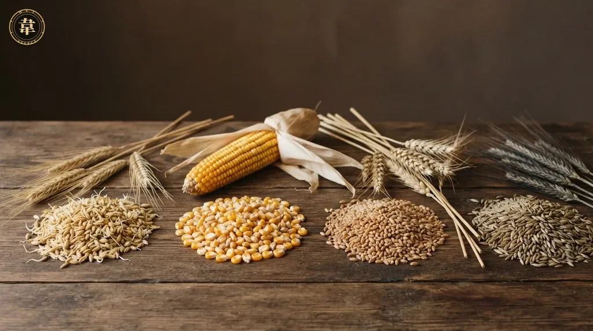
| 種類 | 定義 |
|---|---|
| 單一麥芽 Single Malt | SINGLE = 產自單一蒸餾廠，原料只用發芽大麥 |
| 調和麥芽 Blended Malt | 原料只使用麥芽，但來自多間蒸餾廠 |
| 單一穀類 Single Grain | 單一蒸餾廠，原料含玉米、稞麥等穀物 |
| 調和穀類 Blended Grain | 多間蒸餾廠的穀類威士忌調和 |
| 調和式 Blended Whisky | 麥芽威士忌 + 穀類威士忌調和 |
蘇格蘭六大產區
看圖記產區風味（傾向，不是絕對；同產區也有例外）點圖可放大
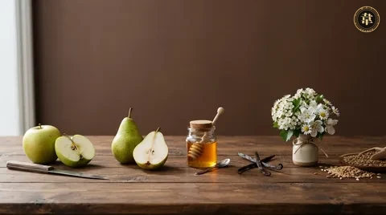
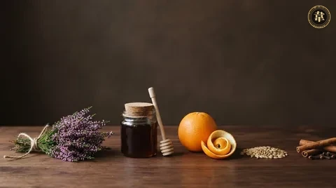
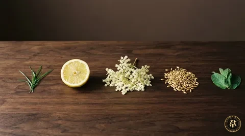
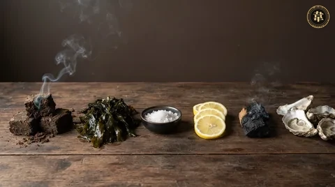
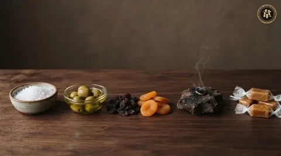
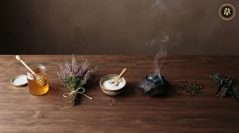
| 產區 | 重點概述 |
|---|---|
| 島嶼區 Islands | 泥煤、海洋風味 |
| 高地 Highland | 強勁風味 |
| 斯貝賽 Speyside | 豐富果香、花香 |
| 低地 Lowland | 清新淡雅 |
| 坎貝爾鎮 Campbeltown | 酒體厚重、香氣濃烈、鹽味、煙燻 |
| 艾雷島 Islay | 煙燻泥煤、正露丸、獨特碘味 |
冷凝過濾 Chill Filtered 是什麼？
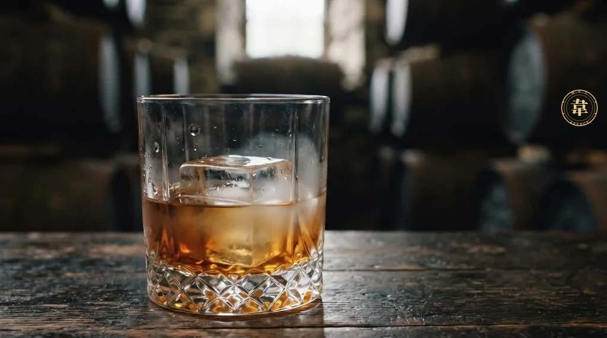
熟成過程中威士忌會產生酯類、醇類、酚類等物質。當溫度下降、或加水加冰時，這些酯類會凝結成白色懸浮物，看起來濁濁的，影響美觀。
釀酒師的解法是：裝瓶前把酒溫迅速降到 4 度以下，等懸浮物凝固後用濾網濾掉，留下純淨剔透的琥珀酒色 —— 這就是「冷凝過濾」。
所以「非冷凝過濾 Non Chill-Filtered」＝ 保留了那些風味物質，口感更厚、更油潤，但加冰可能會霧化 —— 這不是壞掉，可以先跟客人講。
何謂原酒？四個關鍵字
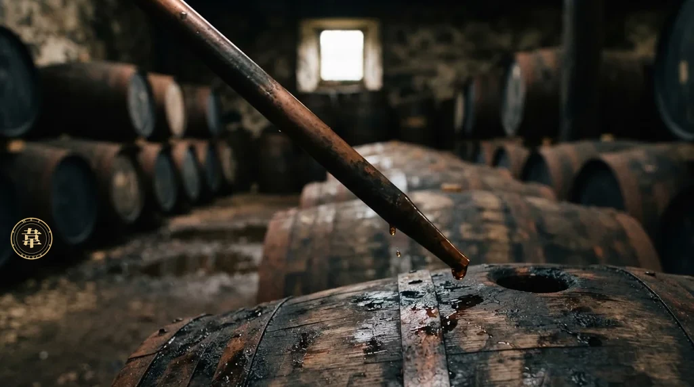
| 關鍵字 | 意思 |
|---|---|
| 單一酒桶 Single Cask | 只用一個桶裝瓶，不可複製 |
| 非冷凝過濾 Non-Chill-Filtered | 保留完整風味物質與油脂感 |
| 不染色 Non-Colored | 不加焦糖著色，顏色來自桶 |
| 原桶強度 Cask Strength | 不加水稀釋，直接裝瓶 |
葡萄酒怎麼來：風土與釀造
先懂「葡萄怎麼長」與「酒怎麼做」，後面每個產區的風格就都講得通。對照威士忌：葡萄酒沒有蒸餾，風味幾乎全部來自葡萄本身與釀造決定。
葡萄酒的四個風味來源
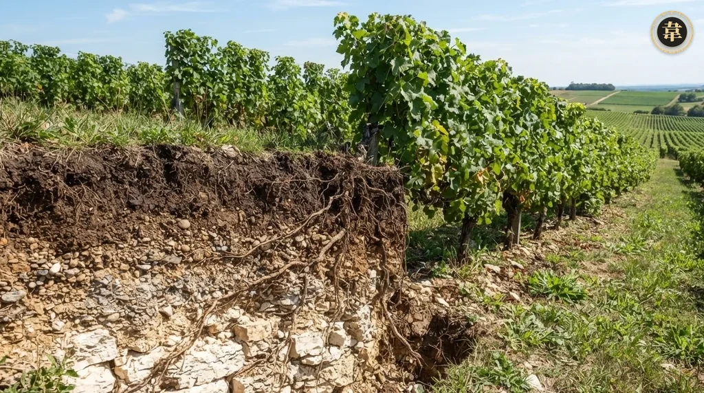
| 來源 | 決定什麼 | 門市一句話 |
|---|---|---|
| 品種 Grape | 香氣類型、單寧與酸度的天生底子 | 「卡本內是黑醋栗、黑皮諾是紅櫻桃」 |
| 風土 Terroir | 氣候、土壤、坡向、海拔、水源的總和 | 「同一個品種，種在冷的地方比較酸、比較清瘦」 |
| 年份 Vintage | 那一年的天氣（日照、雨量、霜害） | 「好年份＝葡萄熟得剛好，酒更集中」 |
| 釀造 Winemaking | 浸皮多久、用不用橡木桶、熟成多久 | 「奶油香、香草味多半來自橡木桶與乳酸發酵」 |
先記這句：葡萄酒＝品種 × 風土 × 年份 × 釀酒師。威士忌風味約一半以上來自木桶，葡萄酒則主要來自葡萄。
冷氣候 vs 熱氣候（最好用的判斷法）
| 冷涼氣候 | 溫暖／炎熱氣候 | |
|---|---|---|
| 代表 | 香檳區、夏布利、勃根地、摩塞爾、紐西蘭馬爾堡、中奧塔哥 | 澳洲巴羅莎、美國納帕、阿根廷門多薩、義大利南部 |
| 酸度 | 高、清爽 | 較低、圓潤 |
| 酒精 | 較低（約 11–13%） | 較高（約 14–15%） |
| 果香 | 青蘋果、檸檬、紅莓、草本 | 熟桃、鳳梨、黑莓果醬、無花果 |
| 酒體 | 輕盈到中等 | 中等到飽滿 |
原理：天氣越熱，葡萄糖分越高（發酵後酒精越高）、酸度越低、果香越熟。所以同樣是夏多內，夏布利像青蘋果檸檬，澳洲像熟桃鳳梨。
紅酒怎麼釀
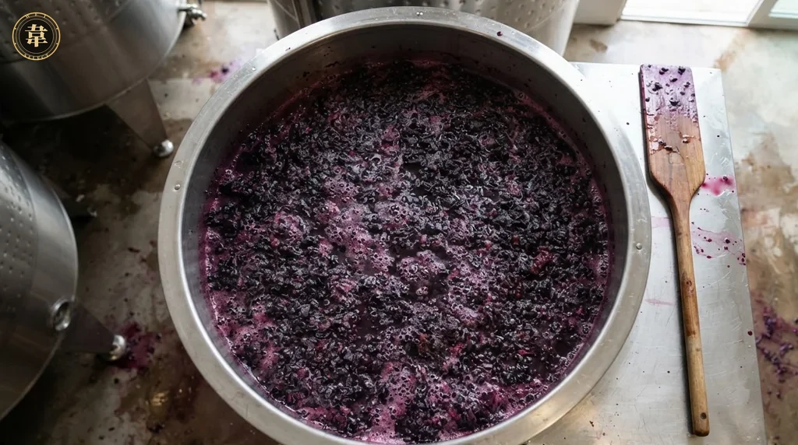
- 採收、去梗破皮：紅酒的顏色、單寧、大部分香氣都在葡萄皮裡（果肉幾乎是透明的）。
- 浸皮發酵：果汁連皮一起發酵，酵母把糖變成酒精；浸皮越久，顏色越深、單寧越多。
- 壓榨：把酒和皮渣分開。
- 乳酸發酵 Malolactic Fermentation（MLF）：把尖銳的蘋果酸轉成柔和的乳酸，紅酒幾乎都會做，讓口感變圓。
- 熟成：不鏽鋼槽（保留新鮮果香）或橡木桶（帶來香草、烘烤、辛香，並讓單寧更柔順）。
- 調配、澄清、裝瓶：很多經典產區是多品種調配（例如波爾多）。
二氧化碳浸皮法 Carbonic Maceration：整串葡萄不破皮、放進充滿二氧化碳的槽裡，讓果粒內部自己發酵，做出香蕉、泡泡糖、草莓糖的香氣與很低的單寧。薄酒萊（含新酒）多採用「半二氧化碳浸皮法」：整串葡萄入槽，底部被壓破的果汁先發酵產生二氧化碳，上層完整果粒就在二氧化碳中於果粒內發酵。
白酒怎麼釀
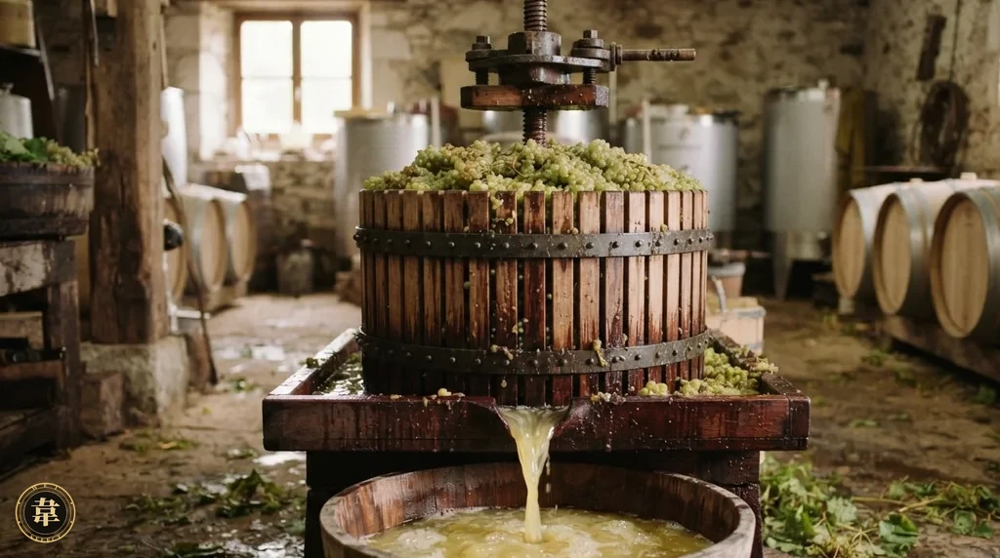
- 先壓榨、去皮：白酒只用果汁，通常不浸皮，所以幾乎沒有單寧。
- 低溫發酵：大多在不鏽鋼槽、約 12–18°C，保留花果香。
- 選擇性工序：要不要做乳酸發酵（帶奶油香、口感更圓）、要不要酒渣攪拌 Bâtonnage（讓死酵母增加麵包香與厚度）、要不要進橡木桶（香草、烤麵包、堅果）。
- 裝瓶：清爽型白酒通常年輕時喝；勃根地頂級白酒可以陳年十年以上。
| 釀法 | 喝起來 | 例子 |
|---|---|---|
| 不鏽鋼、不做乳酸發酵 | 清脆、果香直接、高酸 | 紐西蘭白蘇維濃、德國麗絲玲、夏布利 |
| 橡木桶＋乳酸發酵＋酒渣攪拌 | 奶油、烤麵包、榛果、圓潤厚實 | 梅索、加州夏多內 |
橘酒 Orange Wine：用白葡萄像紅酒一樣浸皮，顏色呈琥珀橘色、帶單寧，是近年流行的小眾風格。
粉紅酒怎麼釀
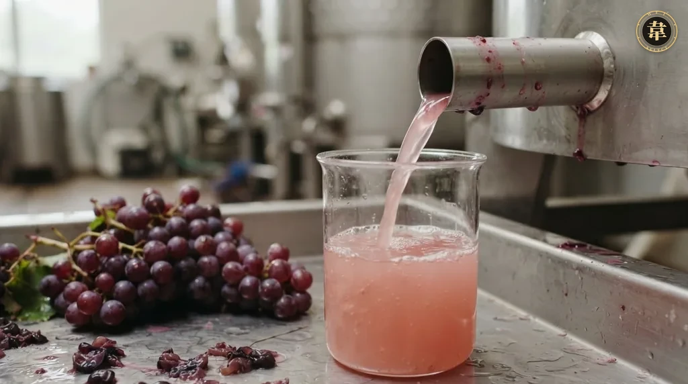
| 做法 | 說明 |
|---|---|
| 短時間浸皮 | 紅葡萄只浸皮幾小時到一兩天，顏色淡淡的就壓榨。普羅旺斯粉紅酒的主流做法。 |
| 放血法 Saignée | 釀紅酒時先放出一部分淡色果汁另外發酵，剩下的紅酒會更濃。 |
| 紅白調配 | 歐盟規定靜態粉紅酒不能用紅酒加白酒調成；用來釀氣泡酒的基酒是例外，粉紅香檳最常見的做法就是在白基酒中加入少量紅酒調色。 |
氣泡酒怎麼釀：泡泡是第二次發酵來的
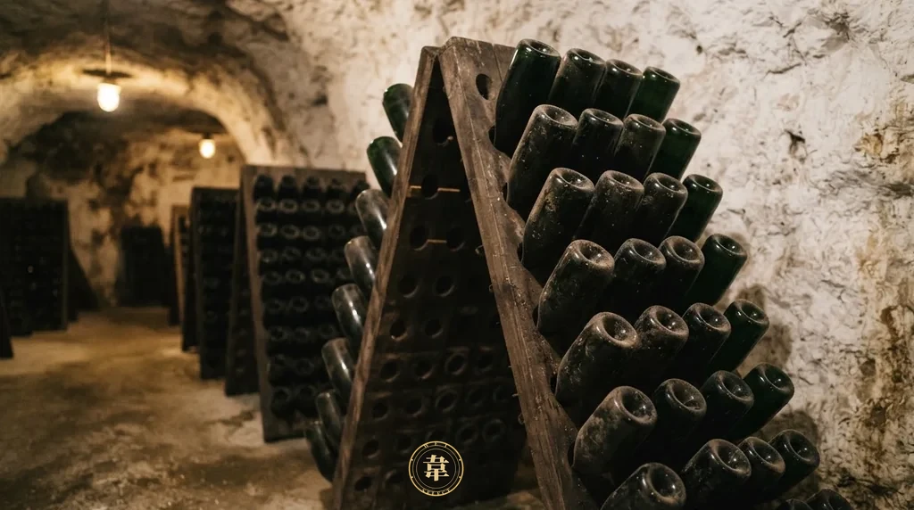
| 方法 | 二次發酵在哪裡 | 風味 | 代表 |
|---|---|---|---|
| 傳統法 Méthode Traditionnelle | 在每一瓶瓶中 | 細緻綿密的氣泡；酒渣熟成帶來吐司、奶油麵包香 | 香檳、法國各地 Crémant、西班牙 Cava、義大利 Franciacorta |
| 槽式法（夏馬法）Charmat／Tank | 在大型密封鋼槽中 | 氣泡較活潑，主打新鮮花果香，價格親民 | 義大利 Prosecco |
| 加二氧化碳 | 不發酵，直接灌氣 | 氣泡粗、消散快 | 平價氣泡飲 |
- 基酒：先釀出高酸、清淡的靜態白酒，再把不同村莊、不同年份的基酒調配（無年份香檳的風格靠這一步維持）。
- 再發酵：裝瓶時加入糖與酵母（Liqueur de Tirage），蓋上瓶蓋，在瓶中發酵產生二氧化碳。
- 酒渣熟成：死酵母在瓶中慢慢分解，帶出吐司、奶油麵包、杏仁的香氣（Autolysis）。
- 轉瓶 Remuage：把瓶子慢慢轉到瓶口朝下，讓酒渣集中到瓶頸。凱歌夫人在 1816 年發明了轉瓶桌（Table de Remuage），後來演變成今日 A 字型的轉瓶架。
- 除渣 Dégorgement：冷凍瓶頸、開瓶讓壓力把酒渣冰塊推出去。
- 補液 Dosage：補一點糖酒液（Liqueur d'Expédition），決定最後的甜度等級，再打上軟木塞與鐵絲網。
甜酒怎麼來：讓葡萄的糖留下來
看圖記兩種天然甜酒點圖可放大
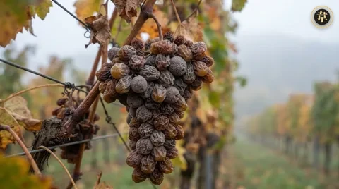
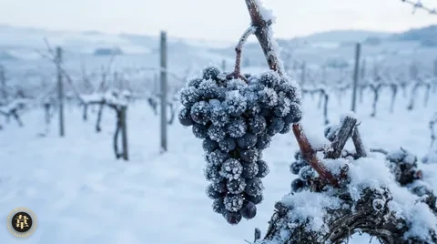
| 做法 | 原理 | 代表 |
|---|---|---|
| 貴腐 Noble Rot | 灰黴菌 Botrytis cinerea 在晨霧午晴的環境下讓果粒脫水、糖分濃縮，帶出蜂蜜、杏桃、橘子醬、番紅花香 | 法國蘇玳 Sauternes、匈牙利托凱 Tokaji Aszú、德國 TBA |
| 冰酒 Icewine／Eiswein | 葡萄留在樹上自然結冰，在結冰狀態下採收與壓榨，只榨出極濃的糖汁 | 加拿大尼加拉半島、德國 |
| 晚摘 Late Harvest | 延後採收讓糖分更高 | 阿爾薩斯 VT、德國 Spätlese／Auslese |
| 風乾 Passito | 採收後把葡萄放在架上風乾數月，糖分濃縮 | 義大利 Recioto、Vin Santo（註：Amarone 也用風乾葡萄，但發酵到乾，是不甜的紅酒） |
| 加烈中止發酵 | 發酵中途加入葡萄蒸餾酒，酵母停止工作，留下糖分 | 葡萄牙波特酒、法國天然甜葡萄酒 Vin Doux Naturel |
加烈酒：波特、雪莉、馬德拉
| 酒 | 產地 | 怎麼做 | 風格 |
|---|---|---|---|
| 波特 Port | 葡萄牙斗羅河谷 | 發酵中途加烈 → 保留天然甜味，約 19–22% | 甜、黑莓果醬、巧克力；Tawny 會有焦糖堅果 |
| 雪莉 Sherry | 西班牙赫雷斯 Jerez | 發酵完成後才加烈 → 原本是乾的；再依風格熟成或調甜 | 從乾爽鹹鮮的 Fino 到濃甜的 PX，見「橡木桶」一章的雪莉光譜 |
| 馬德拉 Madeira | 葡萄牙馬德拉島 | 加烈後加熱熟成（Estufagem），刻意氧化 | 焦糖、烤堅果、果乾、高酸，開瓶後非常耐放 |
和威士忌的連結：雪莉桶、波特桶、馬德拉桶、蘇玳桶過桶，就是借這些酒浸潤過的木桶味道。客人說喜歡雪莉桶威士忌，也可以介紹 Oloroso 或 PX 雪莉酒本身。
橡木桶在葡萄酒裡做什麼
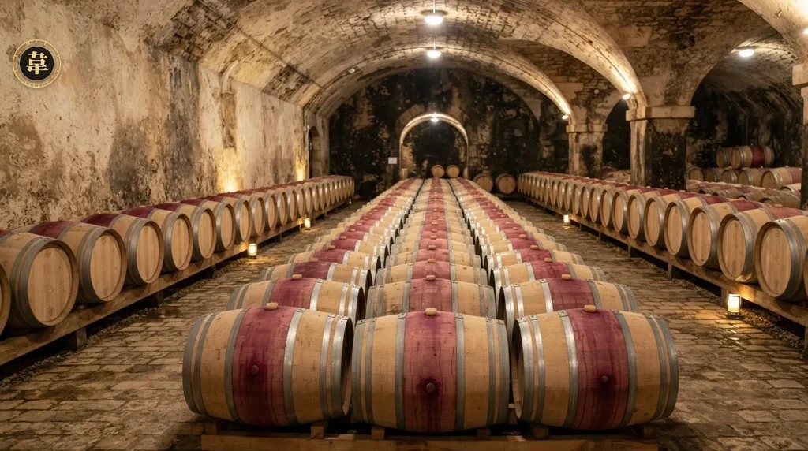
| 選擇 | 影響 |
|---|---|
| 法國橡木 | 細緻的香草、烘烤、辛香，單寧細膩；波爾多、勃根地常用 |
| 美國橡木 | 明顯的椰子、香草、蒔蘿；傳統西班牙利奧哈與很多澳洲希哈常用 |
| 新桶 vs 舊桶 | 新桶味道最重；用過幾次的舊桶主要讓酒慢慢接觸氧氣、變柔順，木頭味很淡 |
| 桶的大小 | 波爾多標準桶約 225 公升；桶越大，木頭味越淡（義大利傳統大木桶 Botte 就是走這條路） |
威士忌講的「波本桶香草、雪莉桶果乾」是二手桶裡前一支酒的味道；葡萄酒講的橡木桶主要是木頭本身與烘烤的味道。
釀造名詞速查
| 名詞 | 意思 |
|---|---|
| 單寧 Tannin | 來自葡萄皮、籽與橡木的澀感，喝完口腔乾乾、牙齦緊緊的感覺；紅酒的骨架 |
| 酸度 Acidity | 讓口水分泌的清爽感；白酒、香檳的靈魂，也是陳年潛力的關鍵 |
| 酒體 Body | 酒在口中的重量感，像脫脂牛奶 → 全脂牛奶 → 鮮奶油 |
| 酒渣 Lees | 發酵後沉澱的死酵母；與酒渣一起熟成（Sur Lie）會增加麵包香與厚度 |
| 二氧化硫 Sulphites | 幾乎所有葡萄酒都會添加少量，用來防氧化與殺菌，酒標上的「含亞硫酸鹽」就是它 |
| 不甜 Dry | 糖幾乎都發酵完了；「果香多」不等於「甜」，這是客人最常混淆的 |
| 單一品種 Varietal | 以一個品種為主釀造（新世界常見）；相對的是多品種調配 Blend |
| 老藤 Old Vines／Vieilles Vignes | 樹齡高、產量低、果實更集中；沒有統一的法定年數 |
品飲與侍酒：看、聞、嚐、講
照順序做，就能把一杯酒講清楚。最後一節是溫度、醒酒、酒杯、保存與搭餐，客人最常問的都在這裡。
三步驟品飲法
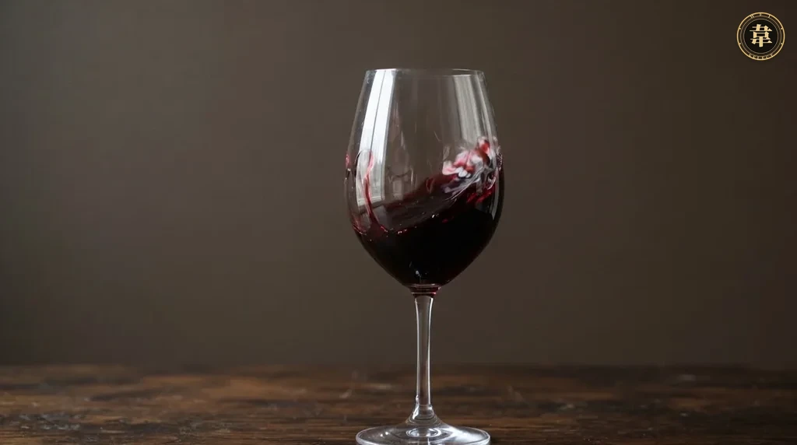
| 步驟 | 看什麼 | 怎麼講 |
|---|---|---|
| ① 看 Appearance | 清澈度、顏色深淺、顏色色調 | 白酒：淡檸檬黃 → 金黃 → 琥珀（越深通常越熟成或越甜）；紅酒：紫紅 → 寶石紅 → 石榴紅 → 磚紅（越偏橘越老） |
| ② 聞 Nose | 香氣強弱、香氣類型、是否有缺陷 | 先不搖杯聞一次，再搖杯讓香氣打開；從「水果 → 花草 → 木桶 → 陳年」依序找 |
| ③ 嚐 Palate | 甜度、酸度、單寧、酒精、酒體、風味、餘韻 | 小口含住，讓酒走過整個舌面，吞下或吐掉後數幾秒還留著香氣 |
香氣分三層
看圖記三層香氣點圖可放大
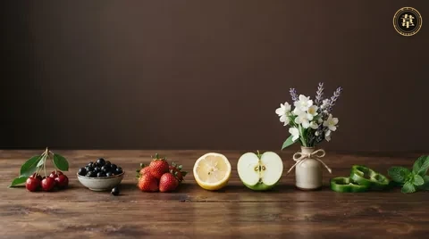
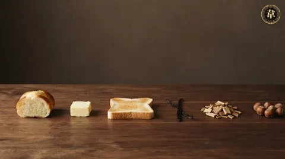
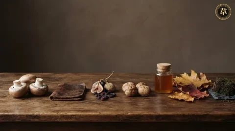
| 層次 | 來自哪裡 | 常見描述 |
|---|---|---|
| 一級香氣 Primary | 葡萄本身 | 柑橘、青蘋果、桃子、鳳梨（白）；草莓、櫻桃、黑醋栗、黑莓（紅）；玫瑰、紫羅蘭、青草、甜椒、胡椒 |
| 二級香氣 Secondary | 發酵與釀造 | 奶油（乳酸發酵）、吐司與麵包（酒渣）、香草、烤麵包、椰子、丁香（橡木桶） |
| 三級香氣 Tertiary | 瓶中或桶中陳年 | 皮革、菸草、蘑菇、森林地表、松露、乾果、蜂蜜、堅果；老麗絲玲的汽油味 |
年輕的酒主要是一級、二級香氣；能陳年的好酒會慢慢長出三級香氣，同時果香變淡、單寧變柔。「越老越好」只適用於少數有陳年潛力的酒。
口感的六個刻度
| 刻度 | 低 | 高 | 小技巧 |
|---|---|---|---|
| 甜度 | 不甜 Dry | 甜 Sweet | 只看舌尖有沒有糖的甜，不要被果香騙 |
| 酸度 | 圓潤、平 | 清爽、流口水 | 喝完口水越多＝酸度越高 |
| 單寧 | 滑順 | 澀、牙齦發乾 | 用舌頭舔上排牙齦，越乾越緊單寧越高（只有紅酒要判斷） |
| 酒精 | 輕、無熱感 | 喉嚨溫熱 | 14.5% 以上通常會感覺到熱 |
| 酒體 | 輕盈 | 飽滿 | 酒精、甜度、萃取物越高越飽滿 |
| 餘韻 Finish | 很快消失 | 十幾秒以上 | 好酒的餘韻通常較長 |
判斷好不好喝的四個字：平衡（酸、甜、單寧、酒精沒有一樣搶戲）、長度（餘韻長）、強度（香氣風味明顯）、複雜度（香氣層次多）。
侍酒溫度
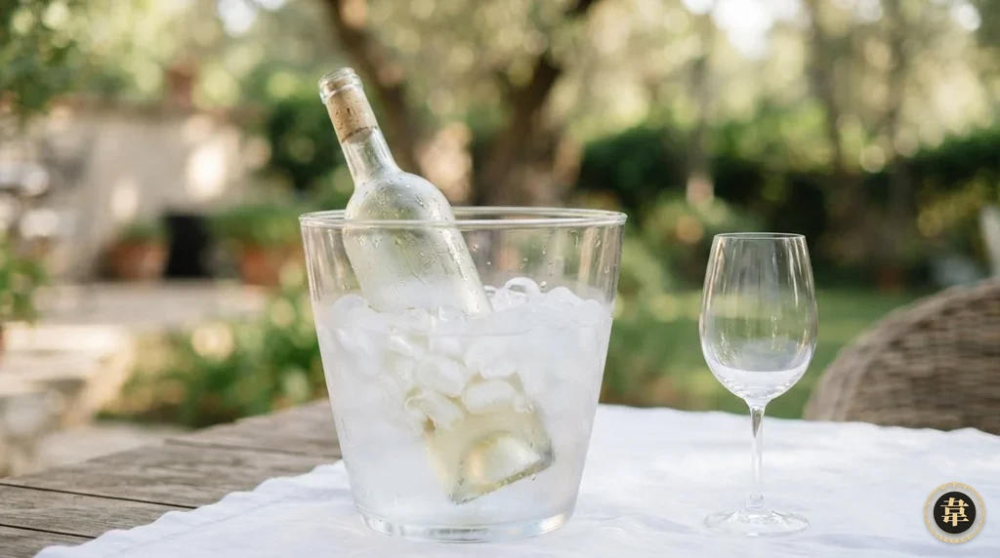
| 酒款 | 建議溫度 | 原因 |
|---|---|---|
| 香檳、氣泡酒 | 6–10°C | 太溫泡泡粗、酒精感明顯 |
| 甜白酒、冰酒 | 6–8°C | 冰涼讓甜味更清爽不膩 |
| 清爽白酒、粉紅酒 | 7–10°C | 保留酸度與花果香 |
| 飽滿白酒（過桶夏多內） | 10–13°C | 太冰會壓住奶油與堅果香 |
| 輕盈紅酒（黑皮諾、薄酒萊） | 12–15°C | 微涼更新鮮 |
| 飽滿紅酒（卡本內、希哈） | 15–18°C | 台灣室溫通常太高，紅酒也可以先冰 15 分鐘 |
客人問「紅酒要不要冰」：台灣室溫約 25–30°C，比理想溫度高，放冰箱 15–20 分鐘再開剛好。
醒酒、酒杯、保存
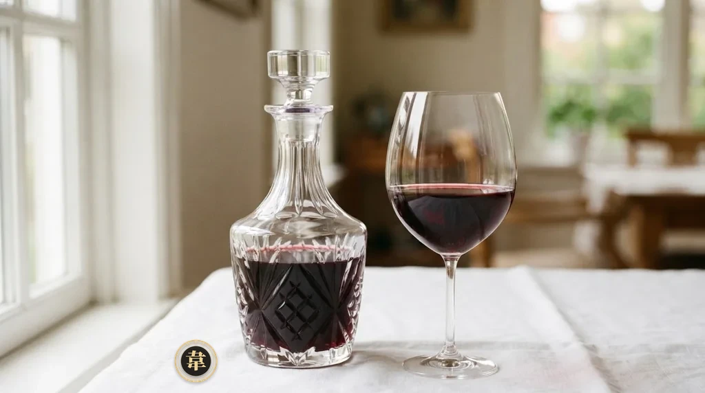
| 項目 | 重點 |
|---|---|
| 醒酒 Decanting | 年輕、單寧重的紅酒（波爾多、巴羅洛、澳洲希哈）醒 30–60 分鐘會更柔順；老酒醒酒主要是為了把沉澱物分開，倒出後盡快喝，避免香氣散掉 |
| 酒杯 | 波爾多杯（高、杯口較收）給厚重紅酒；勃根地杯（大肚）給黑皮諾集中香氣；白酒杯較小保持低溫；香檳用鬱金香杯比細長笛型杯更能聞到香氣 |
| 未開瓶保存 | 軟木塞酒平放（保持木塞濕潤）、約 12–15°C、避光、避震動、濕度約 70% |
| 開瓶後 | 靜態酒塞回瓶塞冷藏約 2–3 天；氣泡酒用香檳塞約 1–3 天；加烈酒（波特、馬德拉）可放數週以上 |
| 軟木塞污染 TCA | 聞起來像濕紙箱、霉味，果香消失，是瓶塞問題不是酒本身，可以換一瓶 |
搭餐的五個原則
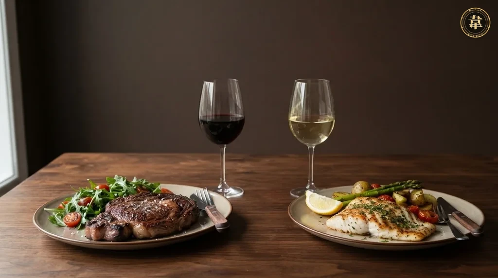
| 原則 | 說明 | 例子 |
|---|---|---|
| 強度對強度 | 清淡的菜配清爽的酒，重口味配飽滿的酒 | 清蒸魚配夏布利；紅燒肉配希哈 |
| 單寧配蛋白質與油脂 | 紅肉的蛋白質和脂肪讓單寧變柔順 | 牛排配卡本內蘇維濃 |
| 酸配油、配鹹 | 酸度能解膩，鹹味讓酒更順口 | 炸物配香檳；起司配白蘇維濃 |
| 甜酒要比甜點甜 | 酒比甜點不甜會顯得酸苦 | 水果塔配冰酒；藍紋起司配蘇玳（鹹甜對比） |
| 辣菜避開高酒精與重單寧 | 辣會放大酒精與澀感；微甜、低酒精、高酸的白酒最安全 | 麻辣、泰式料理配德國微甜麗絲玲 |
台式料理很常甜鹹交錯、醬油多：海鮮與熱炒配香檳或麗絲玲；滷味、醬鴨配黑皮諾；燒烤紅肉配卡本內或希哈。
主要葡萄品種
新世界酒標直接寫品種；歐洲酒標多半寫產區，要靠這張表把產區翻譯成品種。
白葡萄
看圖記白葡萄（一串葡萄＋招牌香氣）點圖可放大
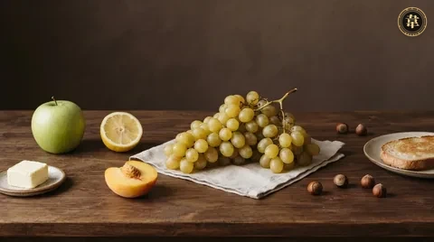
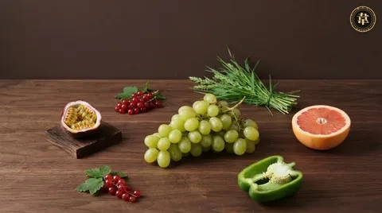
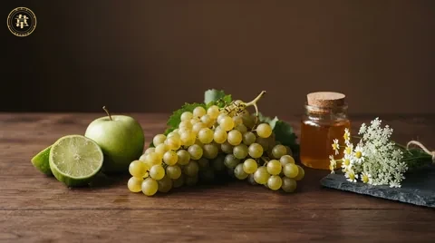
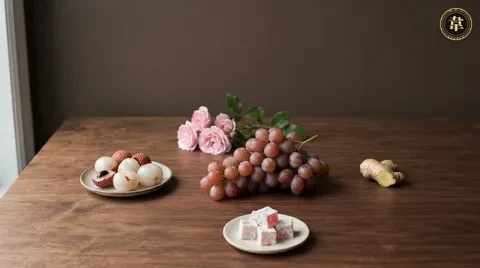
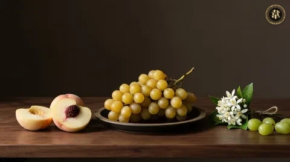
| 品種 | 風味 | 結構 | 經典產區 | 本店例子 |
|---|---|---|---|---|
| Chardonnay 夏多內 | 冷：青蘋果、檸檬、礦石；溫：桃子、鳳梨；過桶：奶油、烤麵包、榛果 | 酸中高、酒體可輕可重；最能反映釀酒手法的品種 | 勃根地（夏布利、梅索、普依富塞）、香檳區、加州、澳洲 | 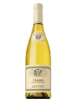 路易佳鐸 夏布利、Bichot 梅索、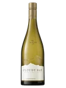 雲霧之灣 夏多內 |
| Sauvignon Blanc 白蘇維濃 | 百香果、葡萄柚、醋栗、青草、青椒 | 高酸、清爽、通常不過桶 | 紐西蘭馬爾堡、法國松塞爾 Sancerre、波爾多 | 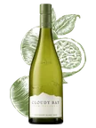 雲霧之灣 白蘇維濃 |
| Riesling 麗絲玲 | 萊姆、青蘋果、白花、礦石；陳年後蜂蜜、汽油味 | 極高酸；從不甜到極甜都有 | 德國摩塞爾、阿爾薩斯、澳洲克萊兒谷與伊頓谷 | 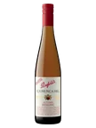 奔富 寇蘭山 麗絲玲 |
| Chenin Blanc 白梗那 | 青蘋果、榅桲、蜂蜜、蜂蠟 | 高酸；不甜、半甜、甜、氣泡都能做 | 法國羅亞爾河（梧雷 Vouvray）、南非 | |
| Sémillon 榭密雍 | 檸檬、蜂蜜、羊毛脂 | 常與白蘇維濃調配；貴腐甜酒主角 | 波爾多蘇玳、澳洲獵人谷 | |
| Pinot Grigio／Pinot Gris 灰皮諾 | 義大利：清爽檸檬、梨；阿爾薩斯：成熟桃子、薑、蜂蜜 | 義式清淡；法式飽滿 | 義大利東北、阿爾薩斯、奧勒岡 | |
| Gewürztraminer 格烏茲塔明那 | 荔枝、玫瑰、薑、土耳其軟糖 | 低酸、酒體飽滿、香氣奔放 | 阿爾薩斯、德國 | |
| Viognier 維歐尼耶 | 杏桃、桃子、白花 | 低酸、飽滿 | 北隆河恭得里奧 Condrieu | |
| Muscat／Moscato 蜜思嘉 | 葡萄味、橙花、桃子 | 常做成微甜低酒精或甜酒 | 義大利 Moscato d'Asti、法國南部 | |
| Glera 格雷拉 | 青蘋果、梨、白花 | 輕盈；普羅賽克的品種 | 義大利威尼托 | 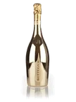 波特嘉金瓶氣泡酒 |
| Sylvaner 希瓦納 | 青草、檸檬、淡淡礦石 | 清爽、適合配餐 | 阿爾薩斯、德國法蘭肯 | 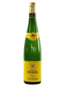 雨果家族 希瓦納 |
| Vidal 維達爾 | 杏桃、蜂蜜、熱帶水果 | 皮厚耐寒，酸度好；加拿大冰酒主力 | 加拿大安大略 | 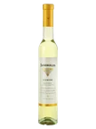 雲嶺 維達爾冰酒 |
紅葡萄
看圖記紅葡萄（一串葡萄＋招牌香氣）點圖可放大
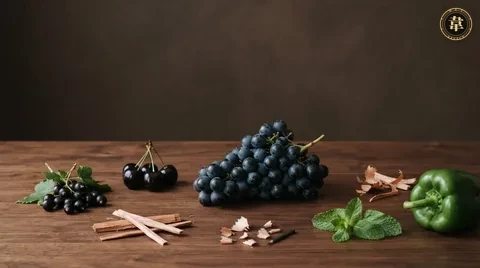
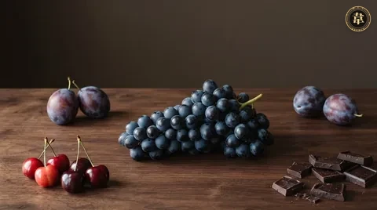
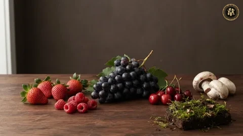
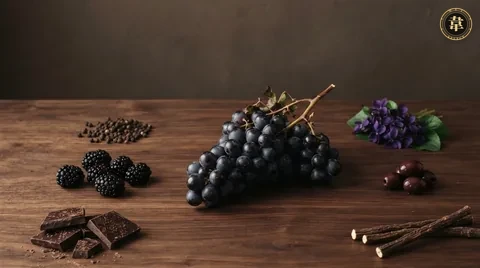
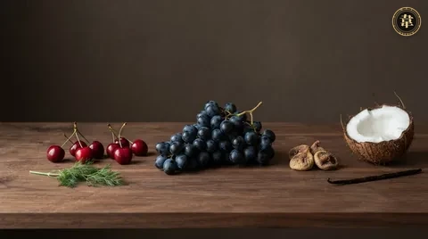
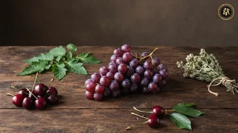
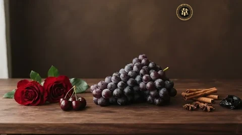
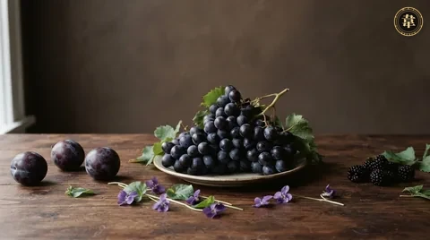
| 品種 | 風味 | 結構 | 經典產區 | 本店例子 |
|---|---|---|---|---|
| Cabernet Sauvignon 卡本內蘇維濃 | 黑醋栗、黑櫻桃、雪松、鉛筆芯、薄荷、青椒 | 單寧高、酸中高、酒體飽滿、耐陳年 | 波爾多左岸、納帕、庫納瓦拉、智利邁坡 | 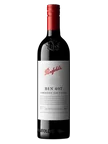 奔富 Bin 407、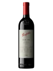 奔富 Bin 707 |
| Merlot 梅洛 | 李子、紅黑櫻桃、巧克力 | 單寧中等、口感圓潤柔順 | 波爾多右岸（波美侯、聖愛美濃） | 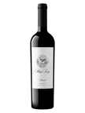 鹿躍 納帕梅洛、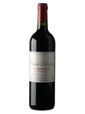 貝格雷夫酒堡 波美侯 |
| Cabernet Franc 卡本內弗朗 | 覆盆子、紫羅蘭、青椒、石墨 | 中等酒體、香氣細緻 | 羅亞爾河希儂 Chinon、聖愛美濃 | 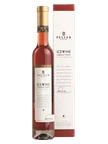 卡本內弗朗冰酒 |
| Pinot Noir 黑皮諾 | 草莓、覆盆子、紅櫻桃；陳年後蘑菇、森林地表 | 皮薄、單寧低、酸高、酒體輕到中等；難種 | 勃根地、香檳區、紐西蘭中奧塔哥、奧勒岡 | 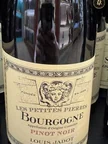 路易佳鐸 勃根地黑皮諾、雲霧之灣 Te Wāhi、閃電皮諾 |
| Syrah／Shiraz 希哈 | 冷：黑莓、黑胡椒、紫羅蘭、橄欖；熱：黑莓果醬、巧克力、甘草 | 單寧與酒體中高到高 | 北隆河、澳洲巴羅莎與麥克拉倫谷 | 奔富 Bin 128、奔富 Bin 28、伊拉蘇 MAX 希哈 |
| Grenache／Garnacha 格那希 | 草莓果醬、覆盆子、白胡椒、乾燥香草 | 單寧低、酒精高 | 南隆河（教皇新堡）、西班牙、澳洲 | |
| Mourvèdre／Mataro 慕維得爾 | 黑莓、野味、皮革 | 單寧高、色深 | 普羅旺斯邦斗爾、南隆河、澳洲（叫 Mataro） | 奔富 Bin 2 希哈瑪塔羅 |
| Tempranillo 田帕尼優 | 紅櫻桃、乾燥無花果；美國橡木帶來椰子、香草、蒔蘿 | 中高單寧、中等酸度 | 西班牙利奧哈、斗羅河岸 | |
| Sangiovese 山吉歐維榭 | 酸櫻桃、番茄葉、乾燥香草 | 高酸、中高單寧 | 托斯卡尼（奇揚地、蒙塔奇諾布魯奈羅） | 安蒂諾里 經典奇揚地珍藏、花思蝶 布魯奈羅 |
| Nebbiolo 內比歐露 | 玫瑰、焦油、紅櫻桃、乾燥香料 | 顏色淡、但單寧與酸度都極高、耐陳年 | 皮蒙巴羅洛、巴巴瑞斯科 | |
| Malbec 馬爾貝克 | 黑李、黑莓、紫羅蘭 | 色深、單寧中高、圓潤 | 阿根廷門多薩、法國卡奧 Cahors | |
| Zinfandel／Primitivo 金芬黛 | 黑莓果醬、果乾、甜香料 | 酒精常偏高、果味濃 | 美國加州、義大利普利亞（叫 Primitivo） | 溫特 金芬黛 |
| Carménère 卡門內爾 | 紅椒、黑莓、咖啡 | 中等單寧 | 智利 | |
| Gamay 加美 | 草莓、櫻桃、香蕉（二氧化碳浸皮） | 輕盈、低單寧 | 法國薄酒萊 | |
| Touriga Nacional 國產杜麗佳 | 黑莓、紫羅蘭 | 高單寧、濃郁 | 葡萄牙斗羅河谷（波特酒最重要的優質品種之一；斗羅種植面積最大的是法蘭克杜麗佳 Touriga Franca） |
一句話分辨四大紅：卡本內＝黑醋栗、單寧緊；梅洛＝李子、圓潤；黑皮諾＝紅莓、輕盈；希哈＝黑莓加胡椒、濃厚。
分級制度與怎麼看酒標
歐洲酒標寫「產區」，新世界酒標寫「品種」。看懂分級，就知道這瓶酒在產區裡的位置。
歐洲的共同骨架
| 歐盟層級 | 法國 | 義大利 | 西班牙 | 德國 |
|---|---|---|---|---|
| 原產地保護 PDO | AOC／AOP | DOCG（最高）、DOC | DOCa（利奧哈、普里奧拉）、DO、Vino de Pago | Qualitätswein、Prädikatswein |
| 地理標示 PGI | IGP（如 Pays d'Oc） | IGT（如 Toscana） | Vino de la Tierra | Landwein |
| 一般餐酒 | Vin de France | Vino d'Italia | Vino de España | Deutscher Wein |
法定產區（PDO）會規定可以種哪些品種、每公頃產量上限、最低酒精度、熟成時間等；地理標示（PGI）規範較寬，可以用國際品種、可以在酒標寫品種。注意：等級高不代表一定比較好喝，例如義大利的超級托斯卡尼，一開始是不照 DOC 規定釀造、只能標為最低階「日常餐酒 Vino da Tavola」的酒；IGT 等級到 1992 年才設立，之後多改標 IGT Toscana。
各國重要的熟成標示
| 國家 | 標示 | 意思 |
|---|---|---|
| 義大利 | Classico | 該產區的歷史核心區（例如 Chianti Classico） |
| 義大利 | Riserva | 熟成時間比一般款長（各產區規定不同） |
| 義大利 | Superiore | 最低酒精度較高、每公頃產量上限較低 |
| 西班牙（利奧哈紅酒） | Crianza／Reserva／Gran Reserva | 至少熟成 2 年（含 1 年橡木桶）／3 年（含 1 年橡木桶）／5 年（含 2 年橡木桶） |
| 德國 | Kabinett → Spätlese → Auslese → Beerenauslese → Trockenbeerenauslese；Eiswein | 依採收時葡萄的含糖量分級，越後面越熟、越濃；Trocken＝不甜 |
| 香檳 | Brut Nature／Extra Brut／Brut／Extra Dry／Sec／Demi-Sec／Doux | 甜度由低到高；Brut 每公升糖分低於 12 公克，Demi-Sec 為 32–50 公克（注意 Extra Dry 反而比 Brut 甜） |
新世界的規則
| 國家 | 產區制度 | 酒標寫品種的門檻 |
|---|---|---|
| 美國 | AVA（美國葡萄種植區） | 至少 75% 為該品種 |
| 澳洲 | GI（地理標示） | 至少 85% 為該品種、85% 為該年份、85% 來自該產區 |
| 紐西蘭 | GI | 至少 85% |
| 智利 | DO 產區制度 | 法定至少 75%（外銷歐盟的酒多依 85% 標示） |
| 阿根廷、南非 | GI／WO 產區制度 | 85% |
新世界的「等級」多半是酒廠自己的系列命名（例如奔富的 Bin 編號、Reserve、Icon），不是法定分級。
一張酒標怎麼看
| 位置上的字 | 意思 | 舉例 |
|---|---|---|
| 酒莊／品牌 | 誰做的；法國常見 Château（酒堡）、Domaine（酒莊）、Maison（酒商） | Château Le Vivier、Louis Jadot |
| 產區 | 葡萄從哪裡來；範圍越小通常越精細 | Bordeaux → Médoc → Pauillac |
| 等級 | 產區裡的位置 | Grand Cru、Premier Cru、DOCG |
| 品種 | 新世界多半會寫（調配酒常不寫；寫了就要達到法定比例）；阿爾薩斯也寫 | Shiraz、Sauvignon Blanc |
| 年份 | 葡萄採收的年份；無年份 NV 是多年份調配 | 2020、NV |
| 酒精度與容量 | 一般 750ml；半瓶 375ml；Magnum 1.5L | 13.5%、750ml |
| 裝瓶者 | Mis en bouteille au Château／au Domaine＝酒莊自己裝瓶 |
波爾多有「正牌」與「副牌 Second Wine」：同一酒莊用較年輕的葡萄樹或沒選進正牌的批次做的酒，風格相近、較早適飲、價格較親民，是入門名莊的好方法。
法國產區詳解
法國是葡萄酒的「教科書」：多數國際品種與分級觀念都從這裡出發。本店最多的是波爾多、勃根地與香檳。
法國主要產區一覽
| 產區 | 氣候 | 主力品種 | 風格關鍵字 |
|---|---|---|---|
| 波爾多 Bordeaux | 海洋性 | 卡本內蘇維濃、梅洛、卡本內弗朗；白：白蘇維濃、榭密雍 | 調配、黑醋栗與雪松、耐陳年；蘇玳貴腐甜白 |
| 勃根地 Bourgogne | 大陸性 | 黑皮諾、夏多內（薄酒萊是加美） | 單一品種、講究葡萄園「Climat」、細緻 |
| 香檳區 Champagne | 冷涼、白堊土 | 夏多內、黑皮諾、皮諾慕尼耶 | 傳統法氣泡、酒渣熟成的麵包香 |
| 隆河 Rhône | 北：大陸性；南：地中海型 | 北：希哈；南：格那希為主的調配 | 北：胡椒與紫羅蘭；南：溫暖果醬與香草 |
| 羅亞爾河 Loire | 冷涼、沿河多變 | 白蘇維濃、白梗那、卡本內弗朗、布根地香瓜（Muscadet） | 高酸清爽、從不甜到甜都有 |
| 阿爾薩斯 Alsace | 乾燥少雨、日照足 | 麗絲玲、格烏茲塔明那、灰皮諾、蜜思嘉 | 酒標寫品種、細長笛型瓶、芳香型白酒 |
| 隆格多克-胡西雍 Languedoc-Roussillon | 地中海型 | 格那希、希哈、卡利濃、慕維得爾 | 法國產量最大、高性價比、天然甜葡萄酒 |
| 普羅旺斯 Provence | 地中海型 | 格那希、仙梭、慕維得爾 | 淡粉色乾型粉紅酒 |
法國七大產區
波爾多 Bordeaux：調配的藝術
位在法國西南，大西洋與加隆河 Garonne、多爾多涅河 Dordogne、吉隆特河口 Gironde 調節出溫和的海洋性氣候。年份差異大，所以酒莊幾乎都用多品種調配來平衡每年的天氣風險。
| 分區 | 土壤 | 主力品種 | 風格 | 知名村莊／代表 |
|---|---|---|---|---|
| 左岸：梅多克 Médoc | 礫石（排水好、白天吸熱） | 卡本內蘇維濃為主＋梅洛 | 黑醋栗、雪松、鉛筆芯、菸草；單寧結實、耐陳年 | 聖愛斯臺夫 Saint-Estèphe、波雅克 Pauillac、聖朱利安 Saint-Julien、瑪歌 Margaux、里斯塔克 Listrac、慕里斯 Moulis |
| 左岸：格拉夫 Graves | 礫石與沙 | 紅：卡本內＋梅洛；白：白蘇維濃＋榭密雍 | 紅酒帶煙燻礦石；也有優秀不甜白酒 | 貝沙克-雷奧良 Pessac-Léognan（侯伯王 Haut-Brion） |
| 左岸：蘇玳與巴薩克 Sauternes／Barsac | 礫石、石灰岩；西隆河 Ciron 帶來晨霧 | 榭密雍為主＋白蘇維濃 | 貴腐甜白酒：蜂蜜、杏桃、橘子醬、番紅花 | 伊更堡 Château d'Yquem |
| 右岸：聖愛美濃 Saint-Émilion | 石灰岩、黏土 | 梅洛＋卡本內弗朗 | 李子、黑櫻桃、柔順 | 歐頌 Ausone、白馬 Cheval Blanc、飛卓 Figeac、柏菲 Pavie |
| 右岸：波美侯 Pomerol | 黏土（含鐵質） | 梅洛為主 | 絲滑、豐厚，陳年後松露 | 柏圖斯 Pétrus、樂邦 Le Pin |
| 兩海之間 Entre-Deux-Mers | 多樣 | 白蘇維濃、榭密雍 | 清爽不甜白酒 |
波爾多的分級（不只一套）
| 分級 | 範圍 | 重點 |
|---|---|---|
| 1855 年列級酒莊 | 梅多克紅酒（加上格拉夫的侯伯王）；另有蘇玳甜酒 | 紅酒分一到五級共 61 家；一級酒莊：拉菲 Lafite Rothschild、拉圖 Latour、瑪歌 Margaux、侯伯王 Haut-Brion、木桐 Mouton Rothschild（1973 年由二級升一級，是唯一一次等級變動；另有佳得美 Cantemerle 於 1856 年補列五級）。蘇玳的伊更堡被列為唯一的「優等一級 Premier Cru Supérieur」 |
| 聖愛美濃分級 | 聖愛美濃 | 約每十年重新評定一次，最高為 Premier Grand Cru Classé A；2022 年版只有飛卓 Figeac 與柏菲 Pavie 兩家。注意 Saint-Émilion Grand Cru 是產區名，不等於列級酒莊 |
| 格拉夫分級 | 格拉夫（今貝沙克-雷奧良） | 1953 年評紅酒、1959 年補白酒，不分等級 |
| 中級酒莊 Cru Bourgeois | 梅多克 | 分 Cru Bourgeois、Supérieur、Exceptionnel 三級，定期重新評定；常是梅多克最有性價比的選擇 |
| 波美侯 | — | 沒有官方分級，卻有柏圖斯、樂邦這種世界最貴的酒 |
| 本店波爾多 | 產區 | 可以這樣介紹 |
|---|---|---|
| 薇薇爾酒堡 梅多克紅酒 2016 | 梅多克（左岸） | 左岸卡本內的黑醋栗與雪松，已有幾年瓶陳，比年輕波爾多柔順 |
| 卡多內酒堡 梅多克中級酒莊紅酒 2016 | 梅多克（左岸） | 中級酒莊：梅多克的經典風格、價格親民 |
| 克拉克酒堡 紅酒 2019 | 里斯塔克-梅多克（左岸） | 羅斯柴爾德家族（Edmond de Rothschild）旗下 |
| 貝格雷夫酒堡 玻美侯 2015 | 波美侯（右岸） | 梅洛主導的圓潤絲滑 |
| 老泰勒菲園 玻美侯 2020 | 波美侯（右岸） | 小產區、黏土，豐厚柔順 |
| 安潔莉克 蒙布斯格、Filia de Grand Mayne | 聖愛美濃特級產區 Saint-Émilion Grand Cru AOC（右岸） | 梅洛＋卡本內弗朗，李子與黑櫻桃 |
| 米歇爾林奇 波爾多、Le Blason 波爾多 | 波爾多 AOC | 入門款，果香明亮，適合日常配餐 |
一句話：左岸卡本內＝結構、雪松、耐放；右岸梅洛＝圓潤、李子、好親近。客人說「不要太澀」→ 先推右岸。
風味・品牌速記
| 類型／子產區 | 風味特色 | 代表品牌（酒莊） |
|---|---|---|
| 左岸紅酒（梅多克、格拉夫） | 黑醋栗、雪松、鉛筆芯、菸草；單寧結實、耐陳年 | 五大一級酒莊：拉菲 Château Lafite Rothschild、拉圖 Latour、瑪歌 Château Margaux、木桐 Mouton Rothschild、侯伯王 Haut-Brion。本店：薇薇爾、卡多內、克拉克 |
| 右岸紅酒（聖愛美濃、波美侯） | 李子、黑櫻桃、可可；口感柔順圓潤 | 柏圖斯 Pétrus、樂邦 Le Pin、白馬 Cheval Blanc、歐頌 Ausone。本店：貝格雷夫、老泰勒菲園、安潔莉克 蒙布斯格 |
| 不甜白酒（格拉夫、兩海之間） | 葡萄柚、檸檬、青草、蜂蠟 | 侯伯王白酒、史密斯拉菲特 Smith Haut Lafitte |
| 貴腐甜白（蘇玳） | 蜂蜜、杏桃、橘子醬、番紅花；甜而高酸 | 伊更堡 Château d'Yquem |
本店酒款 12 支・點小圖打開商品卡
勃根地 Bourgogne：一塊地一個味道
法國中東部、大陸性氣候（冬冷、春天有霜害、夏天易有冰雹），紅酒幾乎只用黑皮諾、白酒用夏多內。勃根地的核心觀念是 Climat：每一塊有名字的葡萄園，因土壤、坡度、方位不同而有自己的風味，2015 年列入聯合國世界遺產。
| 分區（由北到南） | 重點 | 代表村莊 |
|---|---|---|
| 夏布利 Chablis | 最北、最冷；啟莫里階 Kimmeridgian 石灰岩（含古代牡蠣化石），夏多內多半不過桶：青蘋果、檸檬、打火石、鹹礦石 | 特級園 Grand Cru（7 塊）、一級園 Premier Cru、村莊級、小夏布利 Petit Chablis |
| 夜丘 Côte de Nuits | 金丘北半，幾乎都是黑皮諾紅酒，最強壯細緻 | 哲維瑞-香貝丹 Gevrey-Chambertin、香波-蜜思妮 Chambolle-Musigny、馮內-侯瑪內 Vosne-Romanée、夜聖喬治 Nuits-Saint-Georges |
| 伯恩丘 Côte de Beaune | 金丘南半，世界最頂級的夏多內白酒，也有優雅紅酒 | 白：梅索 Meursault、普里尼-蒙哈榭 Puligny-Montrachet、夏山-蒙哈榭 Chassagne-Montrachet；紅：伯恩 Beaune、玻瑪 Pommard、渥爾內 Volnay |
| 夏隆內丘 Côte Chalonnaise | 金丘南邊，性價比高 | 梅克雷 Mercurey、吉弗里 Givry |
| 馬貢 Mâconnais | 較溫暖，夏多內更成熟圓潤 | 普依富塞 Pouilly-Fuissé（2020 年份起有一級園） |
| 薄酒萊 Beaujolais | 加美葡萄、花崗岩土；常用二氧化碳浸皮 | 十個特級村莊 Cru（如 Morgon、Fleurie、Moulin-à-Vent）；薄酒萊新酒於每年 11 月第三個星期四上市 |
勃根地四級金字塔
| 等級 | 酒標寫法 | 說明 |
|---|---|---|
| 特級園 Grand Cru | 只寫葡萄園名，例如 Chambertin、Montrachet | 約佔產量 1–2%，共 33 個（含夏布利特級園） |
| 一級園 Premier Cru／1er Cru | 村莊名＋葡萄園名，例如 Chassagne-Montrachet 1er Cru Morgeot | 約 10% |
| 村莊級 Village | 只寫村莊名，例如 Meursault、Nuits-Saint-Georges | 約 1/3 |
| 地區級 Régional | Bourgogne | 約一半，入門款 |
| 名詞 | 意思 |
|---|---|
| Domaine 酒莊 | 自己種葡萄、自己釀酒；如羅曼尼康帝酒莊 DRC、樂花 Leroy |
| Négociant 酒商 | 向農家買葡萄或酒來釀造、培養、裝瓶；大型酒商通常也擁有自己的葡萄園，如路易佳鐸 Louis Jadot（1859）、Albert Bichot（1831）、Joseph Drouhin、Bouchard Père & Fils |
| Monopole 獨佔園 | 整塊葡萄園只屬於一個酒莊 |
| Clos | 有石牆圍起來的葡萄園 |
| 本店勃根地 | 等級／產區 | 可以這樣介紹 |
|---|---|---|
| 路易佳鐸 夏布利 | 夏布利 村莊級 | 清爽礦石、配海鮮生蠔 |
| 路易佳鐸 普依富塞、Bichot 普依富塞一級園 Clos Reyssié | 馬貢 | 比夏布利成熟圓潤的夏多內 |
| Bichot 梅索 | 伯恩丘 村莊級 | 奶油、榛果、烤麵包的經典白酒 |
| 路易佳鐸 夏山蒙哈榭 Morgeot 一級園 | 伯恩丘 一級園 | 飽滿、礦石與堅果，頂級白酒入門 |
| 路易佳鐸 勃根地黑皮諾、Couvent des Jacobins | 地區級 | 紅莓果香，認識黑皮諾的第一支 |
| 路易佳鐸 桑特奈 獨佔園 | 伯恩丘 | 獨佔園，同一酒莊獨有 |
| 路易佳鐸 玻瑪 Clos de la Commaraine 一級園 | 伯恩丘 一級園 | 玻瑪紅酒較結實，已有瓶陳 |
| Bichot 夜聖喬治 | 夜丘 村莊級 | 夜丘黑皮諾，較有骨架與深色莓果 |
客人問「勃根地為什麼貴」：產量小、葡萄園切得極細、名園一塊地由很多家分著種，加上全球需求高，所以頂級園稀少昂貴。
風味・品牌速記
| 類型／子產區 | 風味特色 | 代表品牌（酒莊） |
|---|---|---|
| 夏布利（夏多內） | 青蘋果、檸檬、打火石、海鹽礦石；多半不過桶 | 威廉費爾 William Fèvre、Raveneau。本店：路易佳鐸 夏布利 |
| 夜丘紅酒（黑皮諾） | 紅櫻桃、覆盆子、玫瑰；陳年後出現森林底層、香料 | 羅曼尼康帝酒莊 DRC、樂花 Leroy、Armand Rousseau、Comte Georges de Vogüé。本店：Bichot 夜聖喬治 |
| 伯恩丘白酒（夏多內） | 檸檬、白桃、榛果、奶油、烤麵包 | Domaine Leflaive、Coche-Dury、Ramonet。本店：Bichot 梅索、路易佳鐸 Morgeot |
| 伯恩丘紅酒（黑皮諾） | 紅莓果；渥爾內偏細緻，玻瑪較結實 | Marquis d'Angerville（渥爾內）、Comte Armand（玻瑪）。本店：路易佳鐸 玻瑪、桑特奈 |
| 馬貢白酒（夏多內） | 黃蘋果、桃子、較成熟圓潤 | Château-Fuissé。本店：路易佳鐸 普依富塞、Bichot 普依富塞一級園 |
| 薄酒萊（加美） | 草莓、覆盆子；新酒常有香蕉糖香，清爽易飲 | Georges Duboeuf、Marcel Lapierre、Château des Jacques（路易佳鐸旗下） |
| 大酒商（橫跨各區） | — | 路易佳鐸 Louis Jadot、Albert Bichot、Joseph Drouhin、Bouchard Père & Fils |
本店酒款 10 支・點小圖打開商品卡
香檳區 Champagne：只有這裡做的才叫香檳
巴黎東北方、法國最北的產區之一，冷涼氣候讓葡萄保有高酸，白堊土 Chalk 排水好又能保水。只有香檳區、依法規以傳統法釀造的氣泡酒，才能叫「香檳 Champagne」；其他地方的叫氣泡酒。
| 分區 | 主力品種 |
|---|---|
| 漢斯山 Montagne de Reims | 黑皮諾（骨架、紅色水果） |
| 馬恩河谷 Vallée de la Marne | 皮諾慕尼耶 Meunier（果香、柔和） |
| 白丘 Côte des Blancs | 夏多內（細緻、檸檬、礦石） |
| 巴爾丘 Côte des Bar（奧布 Aube） | 黑皮諾 |
| 風格 | 意思 | 本店例子 |
|---|---|---|
| 無年份 NV | 多年份基酒調配，維持酒廠一貫風格；裝瓶後至少熟成 15 個月才能上市，其中至少 12 個月與酒渣接觸 | 酩悅帝國一號、凱歌皇牌 |
| 年份香檳 Vintage | 只用單一好年份，至少熟成 3 年 | 香檳王 2013、凱歌 貴婦 2015 |
| 白中白 Blanc de Blancs | 100% 夏多內：細緻、檸檬、白花 | 瑞納特 白中白、黑桃王 白中白 |
| 黑中白 Blanc de Noirs | 黑皮諾／慕尼耶釀的白香檳：較飽滿、紅色水果 | 黑桃王 黑中白 No.4 |
| 粉紅香檳 Rosé | 多數加入少量紅酒調色：草莓、覆盆子 | 庫克 粉紅、瑞納特 粉紅、巴黎之花 紋章粉紅 |
| 半甜 Demi-Sec 與冰飲款 | 甜度較高，配甜點；冰飲款設計成加冰塊喝 | 黑桃王 半甜、酩悅冰帝國 |
| 頂級特釀 Prestige Cuvée | 酒廠最高等級的代表作 | 香檳王、凱歌貴婦、黑桃王 |
| 香檳酒廠 | 一句話 |
|---|---|
| 酩悅 Moët & Chandon（1743） | 規模最大的香檳酒廠之一；香檳王 Dom Pérignon 是它的頂級特釀（首個年份 1921） |
| 凱歌 Veuve Clicquot（1772） | 凱歌夫人發明轉瓶桌（1816），也做出第一支已知的調配式粉紅香檳（1818）；黃標是招牌 |
| 瑞納特 Ruinart（1729） | 第一家專門釀造香檳氣泡酒的酒廠，以夏多內白中白聞名 |
| 庫克 Krug（1843） | 大量使用小橡木桶發酵與大量陳年基酒，風格厚實 |
| 巴黎之花 Perrier-Jouët（1811） | 花之冠 Belle Epoque 的白色銀蓮花瓶身設計 |
| 黑桃王 Armand de Brignac | Cattier 家族釀造，金屬鍍膜黑桃 A 瓶身 |
香檳區有 17 個特級村莊 Grand Cru；酒廠分成大型酒商（NM）與自己種自己釀的小農（RM，Récoltant-Manipulant）。
客人問「香檳和氣泡酒差在哪」：產地（只能在香檳區）＋做法（瓶中二次發酵、長時間酒渣熟成）。普羅賽克用槽式法，果香新鮮、價格較親民。
風味・品牌速記
| 類型／子產區 | 風味特色 | 代表品牌（酒莊） |
|---|---|---|
| 無年份 Brut（多品種調配） | 青蘋果、檸檬、烤麵包、布里歐 | 凱歌 Veuve Clicquot、酩悅 Moët & Chandon。本店：凱歌皇牌、酩悅帝國一號 |
| 白中白（全夏多內） | 檸檬、白花、粉筆般的礦石，細緻清爽 | 瑞納特 Ruinart、Salon。本店：瑞納特白中白、黑桃王白中白 |
| 黑中白（黑皮諾、莫尼耶） | 紅蘋果、紅莓、較厚實有份量 | Bollinger。本店：黑桃王黑中白 |
| 粉紅香檳 | 草莓、覆盆子、紅醋栗 | 本店：凱歌粉紅、瑞納特粉紅、庫克粉紅、巴黎之花紋章粉紅 |
| 年份與頂級特釀 | 蜂蜜、烤堅果、烤麵包、陳年後更複雜 | 香檳王 Dom Pérignon、凱歌貴婦 La Grande Dame、巴黎之花美好年代 Belle Epoque、庫克 Krug。本店：香檳王、凱歌貴婦、美好年代粉紅 |
本店酒款 25 支・點小圖打開商品卡
 黑桃王 黑中白 Assemblage No.5 0.75L黑桃王 黑中白 2015 年份 1.5L巴黎之花 紋章 粉紅香檳 Blason Rosé巴黎之花 美好年代 粉紅香檳 2012
黑桃王 黑中白 Assemblage No.5 0.75L黑桃王 黑中白 2015 年份 1.5L巴黎之花 紋章 粉紅香檳 Blason Rosé巴黎之花 美好年代 粉紅香檳 2012隆河 Rhône：北邊希哈、南邊調配
| 北隆河 | 南隆河 | |
|---|---|---|
| 氣候與地形 | 大陸性；陡峭的花崗岩梯田 | 地中海型；平坦，常見大鵝卵石 Galets Roulés（白天吸熱、夜晚放熱） |
| 紅葡萄 | 只有希哈（可加少量白葡萄同釀） | 格那希為主，調配希哈、慕維得爾（GSM）等 |
| 重要產區 | 羅第丘 Côte-Rôtie（可加至多 20% 維歐尼耶）、艾米達吉 Hermitage、克羅茲-艾米達吉、聖約瑟夫、高納斯 Cornas；白酒：恭得里奧 Condrieu（維歐尼耶） | 教皇新堡 Châteauneuf-du-Pape（法定 13 個品種）、吉恭達斯 Gigondas、瓦給拉斯 Vacqueyras、隆河丘 Côtes du Rhône、塔維勒 Tavel（粉紅酒） |
| 風味 | 黑莓、黑胡椒、紫羅蘭、橄欖、煙燻肉 | 草莓果醬、覆盆子、乾燥香草 Garrigue、溫暖酒感 |
| 代表 | 積架 E. Guigal、夏伯帝 M. Chapoutier、嘉伯樂 Paul Jaboulet Aîné、Jean-Louis Chave | 博卡斯特 Château de Beaucastel、Château Rayas |
風味・品牌速記
| 類型／子產區 | 風味特色 | 代表品牌（酒莊） |
|---|---|---|
| 北隆河紅酒（希哈） | 黑莓、黑胡椒、紫羅蘭、橄欖、煙燻肉 | 積架 E. Guigal、夏伯帝 M. Chapoutier、嘉伯樂 Paul Jaboulet Aîné、Jean-Louis Chave |
| 恭得里奧白酒（維歐尼耶） | 杏桃、水蜜桃、白花，口感油潤 | Georges Vernay、積架 E. Guigal |
| 南隆河紅酒（格那希為主 GSM） | 草莓果醬、覆盆子、乾燥香草、溫暖酒感 | 博卡斯特 Château de Beaucastel、Château Rayas、Domaine du Vieux Télégraphe |
| 塔維勒粉紅酒 | 紅莓、草莓、酒體較飽滿的粉紅酒 | Château d'Aqueria |
本店酒款
本店目前沒有這一區的酒款。
羅亞爾河 Loire：高酸清爽的寶庫
| 分區 | 品種 | 風格 |
|---|---|---|
| 南特 Pays Nantais | 布根地香瓜 Melon de Bourgogne | 密斯卡得 Muscadet：清淡高酸，常「泡酒渣」Sur Lie，配生蠔 |
| 安茹-梭密爾 Anjou-Saumur | 白梗那、卡本內弗朗 | 不甜到貴腐甜白（萊陽丘 Coteaux du Layon）、梭密爾氣泡酒 |
| 都漢 Touraine | 白梗那、卡本內弗朗 | 梧雷 Vouvray（白梗那，從不甜到甜、氣泡）、希儂 Chinon（卡本內弗朗紅酒） |
| 中央產區 Centre | 白蘇維濃、黑皮諾 | 松塞爾 Sancerre、普依芙美 Pouilly-Fumé：葡萄柚、礦石、打火石 |
同樣是白蘇維濃：松塞爾偏礦石、檸檬、內斂；紐西蘭馬爾堡偏百香果、熱帶、外放。
風味・品牌速記
| 類型／子產區 | 風味特色 | 代表品牌（酒莊） |
|---|---|---|
| 密斯卡得（布根地香瓜） | 檸檬、青蘋果、海水鹹味；泡酒渣帶來麵包味 | Domaine de la Pépière、Domaine Luneau-Papin |
| 松塞爾、普依芙美（白蘇維濃） | 葡萄柚、醋栗葉、青草、打火石 | Henri Bourgeois、Pascal Jolivet、Didier Dagueneau（普依芙美）、Ladoucette |
| 梧雷（白梗那） | 榅桲、蘋果、蜂蜜、羊毛脂；從不甜到甜都有 | Domaine Huet |
| 希儂、梭密爾紅酒（卡本內弗朗） | 紅莓、覆盆子、青椒、鉛筆芯 | Couly-Dutheil、Bernard Baudry、Clos Rougeard（梭密爾） |
| 萊陽丘甜白（白梗那貴腐） | 蜂蜜、杏桃、柑橘皮 | Domaine des Baumard |
本店酒款
本店目前沒有這一區的酒款。
阿爾薩斯 Alsace：法國唯一酒標寫品種的經典產區
位在法德邊界，西邊的孚日山脈 Vosges 擋住雨雲，是法國最乾燥的產區之一，日照長、秋天慢慢成熟。法規規定使用細長的笛型瓶 Flûte d'Alsace，酒標以品種為主。
| 項目 | 內容 |
|---|---|
| 四大貴族品種 | 麗絲玲、格烏茲塔明那、灰皮諾、蜜思嘉（特級園原則上只能用這四種；例外如 Zotzenberg 可用希瓦納，Hengst 與 Kirchberg de Barr 自 2022 年份起可釀黑皮諾紅酒） |
| 其他品種 | 希瓦納 Sylvaner、白皮諾 Pinot Blanc、黑皮諾（阿爾薩斯唯一的紅葡萄） |
| 分級 | 阿爾薩斯 AOC、51 個特級園 Alsace Grand Cru、阿爾薩斯氣泡酒 Crémant d'Alsace |
| 甜酒標示 | Vendanges Tardives（VT，晚摘）、Sélection de Grains Nobles（SGN，貴腐顆粒精選） |
| 代表酒莊 | 雨果家族 Famille Hugel（1639 年起於利克維爾 Riquewihr）、婷芭克 Trimbach、Zind-Humbrecht、Weinbach |
| 本店 | 介紹 |
|---|---|
| 雨果家族 Classic 希瓦納白酒 | 清爽青草與檸檬，酸度適中，是配海鮮、沙拉、台式清炒的萬用白酒 |
風味・品牌速記
| 類型／子產區 | 風味特色 | 代表品牌（酒莊） |
|---|---|---|
| 麗絲玲 | 萊姆、白花、礦石；多半不甜 | 婷芭克 Trimbach（Clos Sainte Hune） |
| 格烏茲塔明那 | 荔枝、玫瑰、薑與香料；口感油潤 | Zind-Humbrecht、雨果家族 Hugel |
| 灰皮諾 | 成熟洋梨、蜂蜜、淡淡煙燻；酒體飽滿 | Zind-Humbrecht、Domaine Weinbach |
| 蜜思嘉 | 新鮮葡萄、橙花；香氣甜但口感不甜 | Domaine Weinbach |
| 希瓦納、白皮諾 | 青草、檸檬、清爽好搭餐 | 本店：雨果家族 Classic 希瓦納 |
本店酒款 1 支・點小圖打開商品卡
隆格多克-胡西雍與普羅旺斯：南法的陽光
| 產區 | 重點 | 本店 |
|---|---|---|
| 隆格多克-胡西雍 Languedoc-Roussillon | 法國葡萄園面積最大的產區；地中海氣候，格那希、希哈、卡利濃、慕維得爾調配。知名法定產區：米內瓦 Minervois、高比耶 Corbières、菲杜 Fitou、聖盧峰 Pic Saint-Loup；IGP Pays d'Oc 可標示國際品種。胡西雍出產天然甜葡萄酒（班努斯 Banyuls、莫利 Maury）。代表：Gérard Bertrand、Mas de Daumas Gassac | L'Ostal Estibals 米內瓦紅酒（波爾多 Cazes 家族在南法的酒莊） |
| 普羅旺斯 Provence | 世界粉紅酒的代名詞：淡鮭魚色、乾型、清爽；格那希、仙梭、慕維得爾。邦斗爾 Bandol 則以慕維得爾紅酒聞名。代表：Château d'Esclans（Whispering Angel）、Château Minuty、Domaines Ott |
風味・品牌速記
| 類型／子產區 | 風味特色 | 代表品牌（酒莊） |
|---|---|---|
| 隆格多克紅酒（格那希、希哈、卡利濃、慕維得爾） | 黑莓、黑橄欖、乾燥香草、胡椒 | Gérard Bertrand、Mas de Daumas Gassac。本店：L'Ostal Estibals 米內瓦 |
| 胡西雍天然甜紅（班努斯、莫利） | 黑李乾、可可、咖啡；甜而溫暖 | Mas Amiel（莫利） |
| 普羅旺斯粉紅 | 草莓、白桃、柑橘皮；淡色、乾型、清爽 | Château d'Esclans（Whispering Angel）、Château Minuty、Domaines Ott |
| 邦斗爾紅酒（慕維得爾） | 黑莓、皮革、野味、香草 | Domaine Tempier |
本店酒款 1 支・點小圖打開商品卡
義大利產區詳解
義大利 20 個大區都產酒，原生品種數以百計。門市最重要的是托斯卡尼（本店多款）、皮蒙與威尼托。
義大利產區地圖
義大利從北到南都種葡萄，20 個大區全都產酒。本店的義大利酒集中在托斯卡尼；北部的皮蒙與威尼托是另外兩個一定要認識的產區。點地圖上的產區可以跳到下面的說明。
義大利三大產區
義大利分級與酒標用語
| 等級／用語 | 意思 |
|---|---|
| DOCG | 最高等級的法定產區，規範最嚴、須經品評；瓶頸有政府封條 |
| DOC | 法定產區 |
| IGT／IGP | 地理標示，規範較寬，可用國際品種；超級托斯卡尼多屬此級（如 Toscana IGT） |
| Classico | 產區的歷史核心區 |
| Riserva | 熟成時間比一般款長 |
| Superiore | 酒精度較高或產量限制較嚴 |
托斯卡尼 Toscana：山吉歐維榭的故鄉
義大利中部，丘陵起伏、地中海型氣候。主力是山吉歐維榭 Sangiovese：酸櫻桃、番茄葉、乾燥香草、皮革，酸度高、單寧中高，非常適合配番茄、橄欖油、燒烤的義大利菜。
| 產區 | 規定與風格 | 本店 |
|---|---|---|
| 奇揚地 Chianti DOCG | 範圍大、風格多，從清爽日常到嚴肅都有；底下有幾個子產區，如盧菲納 Rufina（海拔較高、酸度與陳年潛力佳） | 花思蝶 尼波札諾 珍藏奇揚地 Rufina |
| 經典奇揚地 Chianti Classico DOCG | 佛羅倫斯與西恩那之間的核心區，瓶頸有「黑公雞 Gallo Nero」標誌；至少 80% 山吉歐維榭。三個等級：Annata（一般）→ Riserva（至少熟成 24 個月）→ Gran Selezione（最高等級，至少 30 個月） | 安蒂諾里侯爵 經典奇揚地珍藏 |
| 蒙塔奇諾布魯奈羅 Brunello di Montalcino DOCG | 100% 山吉歐維榭（當地稱 Brunello）；採收後第五年才能上市（至少 2 年橡木桶），Riserva 第六年；酒體更厚、耐陳年。創始家族 Biondi-Santi | 花思蝶 CastelGiocondo 布魯奈羅 |
| 蒙特普奇亞諾貴族酒 Vino Nobile di Montepulciano DOCG | 以山吉歐維榭（當地稱 Prugnolo Gentile）為主。注意：和阿布魯佐的 Montepulciano 葡萄是兩回事 | |
| 寶格利 Bolgheri DOC | 靠海的托斯卡尼，以卡本內蘇維濃、梅洛、卡本內弗朗等波爾多品種為主，超級托斯卡尼的發源地 | 歐尼拉雅 Ornellaia 寶格利超級紅酒 |
| 托斯卡尼 IGT Toscana | 不受傳統法規限制，可自由調配國際品種 | 天娜露 Tignanello、花思蝶 Castiglioni |
超級托斯卡尼 Super Tuscan 是什麼
- 1960–70 年代，奇揚地的法規要求必須加入白葡萄、不能用波爾多品種，有野心的酒莊乾脆跳出法規，以最低的「餐酒」等級推出高品質酒，價格卻比 DOC 酒還高，被英美媒體稱為超級托斯卡尼。
- 薩西開亞 Sassicaia（1968 年份首次上市，卡本內為主）是第一支代表作，如今擁有自己的 DOC：Bolgheri Sassicaia。
- 天娜露 Tignanello（安蒂諾里）：1970 年份首釀，1971 年份起以餐酒等級推出並定名 Tignanello；1975 年份起完全去除白葡萄並加入卡本內。它是最早在小橡木桶熟成的山吉歐維榭之一，開創了「義大利品種＋國際品種」的路線。
- 歐尼拉雅 Ornellaia（1981 年創立，1985 年首個年份）、馬塞多 Masseto（梅洛）都是寶格利的代表。
- 1992 年義大利設立 IGT 等級，很多超級托斯卡尼從此歸在 Toscana IGT。
| 托斯卡尼名門 | 一句話 |
|---|---|
| 安蒂諾里 Antinori | 1385 年起家族經營，至今已傳承 26 代，旗下有天娜露、Solaia、經典奇揚地 |
| 花思蝶 Frescobaldi | 佛羅倫斯家族，釀酒歷史超過 700 年；旗下尼波札諾、CastelGiocondo、Ornellaia |
| Biondi-Santi | 布魯奈羅的創始者 |
| Tenuta San Guido | 薩西開亞 |
一句話：奇揚地＝酸櫻桃、配番茄料理的日常好夥伴；布魯奈羅＝更厚、更耐放；超級托斯卡尼＝義大利遇上波爾多。
風味・品牌速記
| 類型／子產區 | 風味特色 | 代表品牌（酒莊） |
|---|---|---|
| 奇揚地、經典奇揚地（山吉歐維榭） | 酸櫻桃、番茄葉、紫羅蘭、乾燥香草 | 安蒂諾里 Antinori、花思蝶 Frescobaldi、Castello di Ama、Fontodi。本店：安蒂諾里侯爵 珍藏、尼波札諾 |
| 布魯奈羅（100% 山吉歐維榭） | 黑櫻桃、皮革、菸草、乾燥玫瑰；厚實耐陳 | Biondi-Santi、Casanova di Neri。本店：花思蝶 CastelGiocondo |
| 超級托斯卡尼、寶格利（波爾多品種） | 黑醋栗、雪松、地中海香草 | 薩西開亞 Sassicaia、歐尼拉雅 Ornellaia、天娜露 Tignanello、Solaia、馬塞多 Masseto。本店：歐尼拉雅、天娜露 |
| 蒙特普奇亞諾貴族酒 | 紅櫻桃、李子、香料；比奇揚地稍柔和 | Avignonesi、Poliziano |
皮蒙 Piemonte：內比歐露與「酒中之王」
義大利西北、阿爾卑斯山腳，秋天多霧（Nebbiolo 名字來自 Nebbia「霧」）。巴羅洛與巴巴瑞斯科都在朗格 Langhe 丘陵。
| 產區 | 品種 | 規定與風格 |
|---|---|---|
| 巴羅洛 Barolo DOCG | 內比歐露 | 「酒中之王，王者之酒」；至少熟成 38 個月（其中 18 個月木桶），Riserva 62 個月；顏色淡但單寧與酸度極高，玫瑰、焦油、紅櫻桃、松露，需要長時間陳年 |
| 巴巴瑞斯科 Barbaresco DOCG | 內比歐露 | 至少 26 個月（其中 9 個月木桶），Riserva 50 個月；比巴羅洛稍柔和、較早適飲 |
| 巴貝拉 Barbera d'Asti／d'Alba | 巴貝拉 | 高酸、低單寧、果香多汁，日常配餐 |
| 多切托 Dolcetto | 多切托 | 柔和、低酸，當地人的餐酒 |
| 阿斯提蜜思嘉 Moscato d'Asti DOCG | 蜜思嘉 | 微氣泡、微甜、酒精約 5%，桃子與橙花 |
| 加維 Gavi DOCG | 柯蒂斯 Cortese | 清爽不甜白酒 |
| 代表酒莊 | |
|---|---|
| 歌雅 Gaja | 把巴巴瑞斯科推向國際 |
| Giacomo Conterno、Bruno Giacosa、Vietti、Pio Cesare | 巴羅洛與巴巴瑞斯科名廠 |
風味・品牌速記
| 類型／子產區 | 風味特色 | 代表品牌（酒莊） |
|---|---|---|
| 巴羅洛、巴巴瑞斯科（內比歐露） | 玫瑰、焦油、紅櫻桃、松露、甘草；淡色但單寧與酸度極高 | 歌雅 Gaja、Giacomo Conterno、Bruno Giacosa、Vietti、Pio Cesare、Produttori del Barbaresco |
| 巴貝拉 | 酸櫻桃、李子；高酸、低單寧、多汁 | Braida |
| 阿斯提蜜思嘉 | 水蜜桃、橙花、新鮮葡萄；微甜微氣泡 | Paolo Saracco |
| 加維（柯蒂斯） | 檸檬、杏仁、清爽不甜 | La Scolca |
本店酒款
本店目前沒有這一區的酒款。
威尼托 Veneto：Amarone 與普羅賽克
| 酒 | 做法與風格 |
|---|---|
| 瓦波利切拉 Valpolicella | 以科維納 Corvina 為主，清爽的紅櫻桃風格 |
| 阿瑪羅尼 Amarone della Valpolicella DOCG | 採收後把葡萄風乾約 3–4 個月（Appassimento）再發酵到乾：酒精常在 15% 以上，葡萄乾、黑櫻桃、巧克力、甜香料，但是不甜 |
| 里帕索 Ripasso | 把一般瓦波利切拉放在 Amarone 的葡萄渣上再發酵，濃度介於兩者之間，被稱為「小 Amarone」 |
| 雷其奧多 Recioto | 同樣用風乾葡萄，但保留甜味的甜紅酒 |
| 索阿維 Soave | 卡爾卡耐卡 Garganega 白酒，杏仁、白花 |
| 普羅賽克 Prosecco | 格雷拉葡萄、槽式法二次發酵：青蘋果、梨、白花，新鮮易飲。Prosecco DOC 範圍橫跨威尼托與弗留利；最高等級是 Conegliano Valdobbiadene Prosecco Superiore DOCG 與 Asolo Prosecco DOCG |
| 本店 | 介紹 |
|---|---|
| 波特嘉金瓶氣泡酒 | 義大利氣泡酒，金色瓶身很有送禮效果，清爽果香、適合派對 |
其他值得知道：西西里（黑達沃拉 Nero d'Avola、埃特納火山 Etna）、普利亞（Primitivo＝加州金芬黛）、法蘭契亞柯達 Franciacorta（倫巴底的傳統法氣泡酒，被稱為義大利香檳）。
風味・品牌速記
| 類型／子產區 | 風味特色 | 代表品牌（酒莊） |
|---|---|---|
| 阿瑪羅尼（風乾葡萄） | 葡萄乾、黑櫻桃、巧克力、甜香料；濃厚但不甜 | Giuseppe Quintarelli、Romano Dal Forno、Allegrini、Masi、Tommasi |
| 瓦波利切拉、里帕索 | 紅櫻桃、杏仁；清爽到中等酒體 | Masi、Zenato |
| 索阿維（卡爾卡耐卡） | 杏仁、白花、檸檬 | Pieropan、Inama |
| 普羅賽克（格雷拉） | 青蘋果、洋梨、白花；新鮮易飲 | Nino Franco、Bisol、Mionetto、波特嘉 Bottega。本店：波特嘉金瓶 Bottega Gold（普羅賽克 DOC） |
本店酒款 1 支・點小圖打開商品卡
西班牙・葡萄牙・德國
田帕尼優與雪莉、波特與馬德拉、麗絲玲與甜度分級。這三國和威士忌過桶的關係最密切。
西班牙・葡萄牙產區地圖
西班牙北部的利奧哈、斗羅河岸是紅酒重鎮，東北的加泰隆尼亞有普里奧拉與卡瓦，南部赫雷斯產雪莉；葡萄牙北部的斗羅河谷產波特，西北沿海是綠酒。
本店目前沒有這兩國的葡萄酒；但雪莉桶、波特桶常出現在威士忌的桶型裡，學會這些產區，介紹威士忌也用得到。
西班牙・葡萄牙・德國
西班牙：用時間說故事
西班牙是全世界葡萄園面積最大的國家之一，高原上日夜溫差大。傳統酒廠習慣把酒熟成夠久才上市，所以酒標上的熟成等級比年份更重要。
| 產區 | 品種 | 風格與重點 | 代表 |
|---|---|---|---|
| 利奧哈 Rioja DOCa | 田帕尼優為主，調配格那希、格拉西亞諾 Graciano、馬士羅 Mazuelo | 傳統派用美國橡木長時間熟成：紅櫻桃、椰子、香草、蒔蘿、皮革；分區 Rioja Alta、Rioja Alavesa、Rioja Oriental | López de Heredia、La Rioja Alta、Marqués de Riscal、CVNE、Muga |
| 斗羅河岸 Ribera del Duero DO | 田帕尼優（當地稱 Tinto Fino） | 高海拔、日夜溫差大：比利奧哈更濃、更有力的黑色水果與單寧 | Vega Sicilia（Único）、Pingus、Pesquera |
| 普里奧拉 Priorat DOCa | 格那希、卡利濃 | 黑色板岩 Llicorella、產量極低：濃縮、礦石感 | Álvaro Palacios（L'Ermita） |
| 下海灣 Rías Baixas DO | 阿爾巴利諾 Albariño | 西北大西洋岸：桃子、檸檬、海鹽，配海鮮 | |
| 卡瓦 Cava DO | 馬卡貝歐 Macabeo、沙雷洛 Xarel·lo、帕雷亞達 Parellada | 傳統法氣泡酒，主要在加泰隆尼亞佩內德斯 Penedès | Codorníu、Freixenet |
| 赫雷斯 Jerez（雪莉） | 帕洛米諾 Palomino、PX | 酒花 Flor 與索雷拉 Solera 系統 | 見下方 |
| 利奧哈熟成等級（紅酒） | 總熟成 | 其中橡木桶 | 風格 |
|---|---|---|---|
| Joven／Genérico | 不限 | 不限 | 年輕果香 |
| Crianza | 至少 2 年 | 至少 1 年 | 果香與木桶平衡 |
| Reserva | 至少 3 年 | 至少 1 年 | 更柔順、有陳年香 |
| Gran Reserva | 至少 5 年 | 至少 2 年 | 只在好年份做：皮革、菸草、乾燥水果 |
雪莉酒 Sherry：和威士忌關係最深的葡萄酒
| 類型 | 熟成方式 | 風味 | 甜度 |
|---|---|---|---|
| Fino／Manzanilla | 在酒花 Flor（一層酵母膜）保護下熟成，不接觸空氣（生物熟成） | 杏仁、麵包、海鹽、青蘋果；Manzanilla 產自海邊的聖盧卡爾，鹹味更明顯 | 不甜 |
| Amontillado | 先有酒花、後來酒花消失再氧化熟成 | 榛果、焦糖、柑橘皮 | 不甜 |
| Oloroso | 加烈到較高酒精、不讓酒花生長，全程氧化熟成 | 核桃、葡萄乾、皮革、香料 | 原本不甜（也有加甜版本） |
| Pedro Ximénez（PX） | 用曬乾的 PX 葡萄釀造 | 黑糖、葡萄乾、無花果、糖蜜 | 極甜 |
索雷拉 Solera：多層木桶堆疊，每次只從最底層取出一部分裝瓶，再從上一層補進來，讓新舊酒不斷混合，風格穩定。注意：雪莉桶威士忌用的多半不是索雷拉裡的老桶，而是專為威士忌業製作的「雪莉浸潤桶 Seasoned Cask」──新橡木桶先裝雪莉酒浸潤一段時間再交給酒廠。
風味・品牌速記
| 類型／子產區 | 風味特色 | 代表品牌（酒莊） |
|---|---|---|
| 利奧哈（田帕尼優） | 紅櫻桃、香草、椰子、蒔蘿、皮革 | López de Heredia、La Rioja Alta、Marqués de Riscal、CVNE、Muga |
| 斗羅河岸（田帕尼優） | 黑色水果、可可、較濃郁有力 | Vega Sicilia、Pingus、Pesquera |
| 普里奧拉（格那希、卡利濃） | 濃縮黑色水果、板岩礦石感 | Álvaro Palacios、Clos Mogador |
| 下海灣（阿爾巴利諾） | 水蜜桃、檸檬、海鹽 | Pazo de Señoráns、Martín Códax |
| 卡瓦（傳統法氣泡酒） | 青蘋果、檸檬、烤杏仁 | Codorníu、Freixenet |
| 雪莉酒 | 從杏仁海鹽（Fino）到葡萄乾糖蜜（PX），見下方表格 | 岡薩雷比亞斯 González Byass（Tío Pepe）、Lustau、Hidalgo（La Gitana） |
本店酒款
本店目前沒有這一區的酒款。
葡萄牙：波特、馬德拉與綠酒
| 產區 | 重點 |
|---|---|
| 斗羅河谷 Douro | 世界最早劃定的法定產區之一（1756 年）；陡峭的片岩梯田。品種：國產杜麗佳 Touriga Nacional、法蘭克杜麗佳 Touriga Franca、羅莉紅 Tinta Roriz（＝田帕尼優）。除了波特，也產濃郁的不甜紅酒（如 Barca Velha） |
| 波特酒 Port | 發酵中途加入葡萄蒸餾酒（Aguardente）中止發酵，保留甜味；傳統在下游的蓋亞 Vila Nova de Gaia 酒窖熟成 |
| 馬德拉 Madeira | 大西洋上的島；加熱熟成、刻意氧化，開瓶後可放很久。依品種從不甜到甜：Sercial → Verdelho → Bual（Boal）→ Malmsey（Malvasia） |
| 綠酒 Vinho Verde | 西北部，年輕、清爽、常帶微氣泡的白酒 |
| 波特類型 | 熟成 | 風味 |
|---|---|---|
| 寶石紅 Ruby | 短時間大桶熟成，保留深紅色 | 新鮮黑莓、櫻桃、果醬 |
| 茶色 Tawny（10／20／30／40／50 年） | 小木桶長時間氧化熟成，標示平均風格年數 | 焦糖、核桃、無花果乾、太妃糖 |
| 晚裝瓶年份 LBV | 單一年份，桶陳 4–6 年後裝瓶 | 介於 Ruby 與 Vintage 之間 |
| 年份波特 Vintage Port | 只在酒廠宣告的好年份做，約 2 年後裝瓶、在瓶中陳年數十年 | 濃郁、可陳年，老酒需要醒酒去渣 |
代表波特酒廠：Taylor's、Graham's、Fonseca、Dow's、Sandeman、Quinta do Noval。波特桶威士忌的黑櫻桃、果醬、巧克力就是從這裡來。
風味・品牌速記
| 類型／子產區 | 風味特色 | 代表品牌（酒莊） |
|---|---|---|
| 斗羅不甜紅酒 | 黑莓、黑李、紫羅蘭、岩石礦物感 | Casa Ferreirinha（Barca Velha）、Quinta do Crasto、Niepoort |
| 波特酒 | 寶石紅：黑莓、櫻桃；茶色：焦糖、核桃、無花果乾 | Taylor's、Graham's、Fonseca、Dow's、Sandeman、Quinta do Noval |
| 馬德拉 | 焦糖、烤堅果、柑橘皮；酸度很高 | Blandy's、Henriques & Henriques、Barbeito |
| 綠酒 | 檸檬、青蘋果、微氣泡、酒精低 | Aveleda（Casal Garcia）、Soalheiro |
本店酒款
本店目前沒有這一區的酒款。
德國：麗絲玲與甜度分級
德國是世界最北的主要產酒國之一，葡萄園多在河谷陡坡，河水反射陽光、調節溫度。麗絲玲是德國的代表：萊姆、青蘋果、白花、礦石，極高酸度讓它從不甜到極甜都平衡，陳年潛力極佳。
| 產區 | 特色 | 代表酒莊 |
|---|---|---|
| 摩塞爾 Mosel | 極陡的藍板岩坡：輕盈、酒精低、礦石感強，常帶一點甜 | Egon Müller、J.J. Prüm、Dr. Loosen |
| 萊茵高 Rheingau | 朝南坡、較飽滿；德國傳統貴族酒莊集中 | Schloss Johannisberg、Robert Weil |
| 普法茲 Pfalz | 溫暖，多不甜、飽滿的麗絲玲與黑皮諾（Spätburgunder） | |
| 萊茵黑森 Rheinhessen | 德國面積最大的產區 |
| 甜度與成熟度等級（Prädikatswein） | 意思 | 通常的甜度 |
|---|---|---|
| Kabinett | 正常採收、最輕盈 | 不甜到微甜 |
| Spätlese | 晚摘 | 微甜到半甜（也有 Trocken 不甜版） |
| Auslese | 精選成熟串，可能有貴腐 | 半甜到甜 |
| Beerenauslese（BA） | 逐粒精選貴腐果 | 甜 |
| Trockenbeerenauslese（TBA） | 逐粒精選乾縮貴腐果 | 極甜、極稀少 |
| Eiswein 冰酒 | 結冰的葡萄採收壓榨 | 極甜、高酸 |
Trocken＝不甜；Feinherb／Halbtrocken＝微甜。德國名莊協會 VDP 另有葡萄園分級：Gutswein → Ortswein → Erste Lage → Grosse Lage（其中不甜款稱 Grosses Gewächs，GG）。老麗絲玲出現「汽油味」是正常的熟成香氣，不是壞掉。
辣的台菜、泰國菜、川菜 → 推德國微甜麗絲玲：甜味壓辣、低酒精不助辣、高酸解膩。
風味・品牌速記
| 類型／子產區 | 風味特色 | 代表品牌（酒莊） |
|---|---|---|
| 摩塞爾麗絲玲 | 青蘋果、水蜜桃、白花、板岩礦石；輕盈、酒精低 | Egon Müller、J.J. Prüm、Dr. Loosen |
| 萊茵高麗絲玲 | 杏桃、柑橘；較飽滿有架構 | Schloss Johannisberg、Robert Weil |
| 普法茲（麗絲玲、黑皮諾） | 成熟水蜜桃、黃色水果；多半不甜、飽滿 | Dr. Bürklin-Wolf、Bassermann-Jordan、von Winning |
| 萊茵黑森 | 從日常酒到頂級不甜麗絲玲都有 | Keller、Wittmann、Gunderloch |
本店酒款
本店目前沒有這一區的酒款。
新世界產區詳解：美國・澳洲・紐西蘭・智利・阿根廷・南非・加拿大
新世界＝歐洲以外的產酒國。酒標直接寫品種，風格通常果香更熟、更直接。本店的奔富、雲霧之灣、冰酒都在這一章。
新世界一覽
| 國家 | 招牌產區 | 招牌品種 | 一句話 | 本店代表 |
|---|---|---|---|---|
| 美國 | 納帕谷、索諾瑪、奧勒岡 | 卡本內蘇維濃、夏多內、黑皮諾、金芬黛 | 1976 年巴黎審判讓世界認識加州 | 鹿躍 納帕梅洛、溫特 金芬黛、閃電皮諾 |
| 澳洲 | 巴羅莎、麥克拉倫谷、庫納瓦拉、瑪格麗特河 | 希哈 Shiraz、卡本內、麗絲玲、夏多內 | 濃郁成熟的希哈，奔富是代表 | 奔富 Penfolds 全系列 |
| 紐西蘭 | 馬爾堡、中奧塔哥 | 白蘇維濃、黑皮諾 | 外放的百香果白蘇維濃 | 雲霧之灣 Cloudy Bay |
| 智利 | 邁坡、阿空加瓜、卡薩布蘭卡 | 卡本內、卡門內爾 | 安地斯山與太平洋寒流，性價比高 | 伊拉蘇 MAX 希哈 |
| 阿根廷 | 門多薩 | 馬爾貝克 | 高海拔的濃郁紫色紅酒 | |
| 南非 | 斯泰倫博斯、斯沃特蘭 | 白梗那、皮諾塔吉 | 舊世界的優雅＋新世界的果香 | |
| 加拿大 | 尼加拉半島、歐肯納根 | 維達爾、麗絲玲、卡本內弗朗 | 世界冰酒王國 | 雲嶺 Inniskillin、啄木鳥 Peller 冰酒 |
新世界產區
美國：加州與奧勒岡
| 產區 | 重點 | 代表 |
|---|---|---|
| 納帕谷 Napa Valley | 溫暖乾燥、晨霧從聖帕布羅灣吹入；卡本內蘇維濃最有名：成熟黑醋栗、黑櫻桃、香草、可可，酒體飽滿。子產區有奧克維爾 Oakville、拉瑟福 Rutherford、鹿躍區 Stags Leap District、豪威爾山 Howell Mountain | Robert Mondavi、作品一號 Opus One（Mondavi 與木桐合作，1979 年首個年份）、Screaming Eagle、Stag's Leap Wine Cellars |
| 索諾瑪 Sonoma | 比納帕涼爽多樣：俄羅斯河谷 Russian River Valley 的黑皮諾與夏多內、乾溪谷 Dry Creek 的金芬黛、索諾瑪海岸 Sonoma Coast 的冷涼黑皮諾 | Kistler、Ridge（Lytton Springs） |
| 利佛摩谷 Livermore Valley | 舊金山東邊，加州最早的產區之一 | 溫特 Wente（1883 年創立，美國歷史最悠久且持續由家族經營的酒廠；加州大量夏多內來自「溫特無性繁殖系」） |
| 中央海岸 Central Coast | 帕索羅布斯 Paso Robles（隆河品種）、聖塔芭芭拉（電影《尋找新方向》的黑皮諾） | |
| 奧勒岡威拉米特谷 Willamette Valley | 冷涼、黑皮諾的新世界代表，風格接近勃根地 |
1976 年「巴黎審判 Judgment of Paris」：法國評審盲飲，加州的 Stag's Leap Wine Cellars 1973 卡本內蘇維濃與 Chateau Montelena 1973 夏多內分別拿下紅、白第一名，打破法國酒無敵的印象。（Stag's Leap Wine Cellars 與 Stags' Leap Winery 名字很像，但是兩家不同酒廠。）
| 本店美國 | 介紹 |
|---|---|
| 鹿躍 納帕梅洛紅酒 | 納帕谷的梅洛：成熟李子、黑櫻桃，柔順好入口。注意：英文酒名是 Stags' Leap（Stags' Leap Winery），和 1976 年巴黎審判獲勝的 Stag's Leap Wine Cellars 是不同酒廠，不要講混 |
| 溫特 Beyer Ranch 金芬黛 2022 | 利佛摩谷：黑莓果醬與甜香料，配烤肉、燒臘 |
| 閃電皮諾 2023 | 加州黑皮諾：紅莓果香，比勃根地更成熟外放 |
風味・品牌速記
| 類型／子產區 | 風味特色 | 代表品牌（酒莊） |
|---|---|---|
| 納帕谷（卡本內蘇維濃） | 成熟黑醋栗、黑櫻桃、香草、可可；酒體飽滿 | Robert Mondavi、作品一號 Opus One、Screaming Eagle、Stag's Leap Wine Cellars。本店：鹿躍 納帕梅洛（Stags' Leap Winery） |
| 索諾瑪（黑皮諾、夏多內） | 紅櫻桃、柑橘、細緻的橡木 | Kistler。本店：閃電皮諾（過往年份產自索諾瑪海岸） |
| 金芬黛 | 黑莓果醬、甜香料、胡椒 | Ridge。本店：溫特 Beyer Ranch 金芬黛 |
| 中央海岸 | 帕索羅布斯：隆河品種的成熟果香；聖塔芭芭拉：冷涼黑皮諾 | Tablas Creek（帕索羅布斯，與博卡斯特的 Perrin 家族合作）、Au Bon Climat（聖塔芭芭拉） |
| 奧勒岡（黑皮諾） | 紅櫻桃、蔓越莓、泥土；風格接近勃根地 | The Eyrie Vineyards（威拉米特谷黑皮諾先驅）、Domaine Drouhin Oregon（勃根地 Drouhin 家族） |
本店酒款 3 支・點小圖打開商品卡
澳洲：希哈的大國
澳洲以溫暖氣候與成熟果香聞名，也有許多冷涼產區。很多澳洲酒用旋轉瓶蓋（保留新鮮果香、沒有木塞污染），不代表便宜。澳洲還有大量百年以上的老藤，因為很多產區從未遭受根瘤蚜蟲病害。
| 產區 | 州 | 招牌 | 風格 |
|---|---|---|---|
| 巴羅莎谷 Barossa Valley | 南澳 | 老藤希哈 | 黑莓果醬、巧克力、甘草、甜香料，酒體飽滿 |
| 伊頓谷 Eden Valley、克萊兒谷 Clare Valley | 南澳 | 麗絲玲 | 萊姆、高酸、陳年後吐司與汽油香 |
| 麥克拉倫谷 McLaren Vale | 南澳 | 希哈、格那希 | 靠海、溫暖，黑巧克力、地中海香草 |
| 庫納瓦拉 Coonawarra | 南澳 | 卡本內蘇維濃 | 紅土 Terra Rossa＋石灰岩：黑醋栗、薄荷、尤加利 |
| 阿德雷德丘 Adelaide Hills | 南澳 | 白蘇維濃、夏多內 | 冷涼高地 |
| 亞拉河谷 Yarra Valley | 維多利亞 | 黑皮諾、夏多內、氣泡酒 | 冷涼優雅 |
| 獵人谷 Hunter Valley | 新南威爾斯 | 榭密雍 | 年輕清淡、陳年後吐司與蜂蜜 |
| 瑪格麗特河 Margaret River | 西澳 | 卡本內、夏多內 | 海洋性，接近波爾多的優雅 |
奔富 Penfolds：一次看懂 Bin 系列
1844 年由羅森‧奔富醫師 Dr. Christopher Rawson Penfold 在阿德雷德創立。Bin 是當年酒窖存放酒的「格位編號」，後來直接成為酒款名稱。奔富擅長跨產區調配：把不同產區的葡萄混合，追求穩定的「奔富風格」。1951 年首席釀酒師 Max Schubert 試釀出葛蘭許 Grange，成為澳洲最具代表性的紅酒。
| 本店奔富 | 品種／產區 | 風格 | 一句話 |
|---|---|---|---|
| 葛蘭許 Grange Bin 95 | 希哈為主（跨產區） | 極濃郁、可陳年數十年 | 澳洲酒王 |
| Bin 707 | 卡本內蘇維濃 | 濃縮黑醋栗、厚實單寧 | 奔富的卡本內旗艦 |
| Bin 407 | 卡本內蘇維濃 | 黑醋栗、雪松，較 707 親民 | 卡本內入門好選擇 |
| Bin 389 | 卡本內＋希哈 | 有「小葛蘭許 Baby Grange」之稱 | 部分酒液在前一年份葛蘭許用過的橡木桶中熟成 |
| Bin 128 | 庫納瓦拉希哈 | 較冷涼：胡椒、紫羅蘭、較優雅 | 單一產區希哈 |
| Bin 28 Kalimna | 希哈 | 成熟黑莓、甜香料 | 經典希哈 |
| Bin 8 | 希哈＋卡本內 | 果香與結構平衡 | 日常也能喝的 Bin |
| Bin 2 | 希哈＋瑪塔羅（慕維得爾） | 多汁果香、柔順 | 最親民的 Bin |
| 寇蘭山 Autumn Riesling | 麗絲玲 | 萊姆、清爽 | 配海鮮、辣菜 |
其他澳洲名廠：漢斯吉 Henschke（Hill of Grace）、Torbreck、d'Arenberg、Yalumba、Leeuwin Estate。
風味・品牌速記
| 類型／子產區 | 風味特色 | 代表品牌（酒莊） |
|---|---|---|
| 巴羅莎谷希哈 | 黑莓果醬、巧克力、甘草、甜香料 | 奔富 Penfolds、Torbreck、Yalumba。本店：奔富 Bin 28、葛蘭許 |
| 伊頓谷、克萊兒谷麗絲玲 | 萊姆、高酸；陳年後吐司與汽油香 | 漢斯吉 Henschke（伊頓谷）、Grosset、Jim Barry（克萊兒谷）。本店：寇蘭山 Autumn Riesling |
| 麥克拉倫谷（希哈、格那希） | 黑巧克力、地中海香草、成熟果香 | d'Arenberg |
| 庫納瓦拉卡本內 | 黑醋栗、薄荷、尤加利 | Wynns Coonawarra Estate。本店：奔富 Bin 128（庫納瓦拉希哈） |
| 瑪格麗特河（卡本內、夏多內） | 優雅的黑醋栗；夏多內柑橘與堅果 | Leeuwin Estate、Vasse Felix、Cullen |
| 亞拉河谷（黑皮諾、夏多內） | 冷涼優雅、紅莓與柑橘 | Yarra Yering、De Bortoli |
| 獵人谷榭密雍 | 年輕時檸檬清淡；陳年後吐司、蜂蜜 | Tyrrell's |
紐西蘭：白蘇維濃與黑皮諾
| 產區 | 島 | 招牌 | 風格 |
|---|---|---|---|
| 馬爾堡 Marlborough | 南島 | 白蘇維濃 | 1980 年代起揚名國際：百香果、葡萄柚、醋栗、剛割的青草，酸度鮮明 |
| 中奧塔哥 Central Otago | 南島 | 黑皮諾 | 世界最南端的產區之一，大陸性氣候：深色櫻桃、香料、酒體比勃根地飽滿 |
| 霍克斯灣 Hawke's Bay | 北島 | 波爾多式紅酒、希哈 | 較溫暖 |
| 馬丁堡 Martinborough | 北島 | 黑皮諾 |
| 本店雲霧之灣 Cloudy Bay | 介紹 |
|---|---|
| 白蘇維濃 | 1985 年創立，把馬爾堡白蘇維濃帶上世界舞台的酒廠：百香果、葡萄柚、鮮明酸度 |
| 夏多內 | 馬爾堡夏多內：柑橘、白桃、細緻的橡木與堅果香 |
| Te Wāhi 中奧塔哥黑皮諾 2021 | 中奧塔哥黑皮諾：深色櫻桃、香料、絲滑 |
紐西蘭絕大多數酒都用旋轉瓶蓋。
風味・品牌速記
| 類型／子產區 | 風味特色 | 代表品牌（酒莊） |
|---|---|---|
| 馬爾堡白蘇維濃 | 百香果、葡萄柚、醋栗、剛割的青草；酸度鮮明 | 雲霧之灣 Cloudy Bay、Dog Point、Saint Clair、Villa Maria。本店：雲霧之灣 白蘇維濃、雲霧之灣 夏多內 |
| 中奧塔哥黑皮諾 | 深色櫻桃、李子、香料、百里香 | Felton Road、Rippon。本店：雲霧之灣 Te Wāhi |
| 霍克斯灣（波爾多式紅酒、希哈） | 黑醋栗、黑胡椒、雪松 | Craggy Range、Te Mata |
| 馬丁堡黑皮諾 | 紅櫻桃、香料、細緻 | Ata Rangi、Dry River |
本店酒款 3 支・點小圖打開商品卡
智利與阿根廷：安地斯山的兩邊
| 智利 | 阿根廷 | |
|---|---|---|
| 地理 | 南北狹長，東邊安地斯山、西邊太平洋洪堡寒流；從未遭受根瘤蚜蟲病害 | 葡萄園多在安地斯山東側高原，門多薩葡萄園海拔約 600 公尺起，烏科谷最高超過 1,500 公尺（部分達 1,700 公尺以上），日照強、日夜溫差大 |
| 招牌品種 | 卡本內蘇維濃、卡門內爾（1994 年才被確認：原本一直被當成梅洛）、希哈；冷涼區白蘇維濃與黑皮諾 | 馬爾貝克（源自法國卡奧）、白葡萄特濃情 Torrontés |
| 重要產區 | 邁坡谷 Maipo（卡本內）、空加瓜 Colchagua、阿空加瓜 Aconcagua、卡薩布蘭卡 Casablanca 與聖安東尼奧（冷涼白酒） | 門多薩 Mendoza（烏科谷 Uco Valley）、薩爾塔 Salta（特濃情） |
| 代表酒廠 | 干露 Concha y Toro（與木桐合作 Almaviva）、伊拉蘇 Errázuriz（1870 年創立；旗下 Seña、Viñedo Chadwick 在 2004 年柏林盲飲中勝過波爾多名莊）、Montes、Santa Rita | 卡帝娜 Catena Zapata、Achával-Ferrer、Norton、安地斯白馬 Cheval des Andes |
| 本店 | 介紹 |
|---|---|
| 伊拉蘇 MAX 150 週年紀念版 希哈 2016 | 阿空加瓜谷希哈：黑莓、黑胡椒、可可，已有瓶陳 |
風味・品牌速記
| 類型／子產區 | 風味特色 | 代表品牌（酒莊） |
|---|---|---|
| 智利 邁坡谷卡本內 | 黑醋栗、薄荷、黑橄欖 | 干露 Concha y Toro（Don Melchor）、Santa Rita、Almaviva |
| 智利 卡門內爾 | 紅椒、黑李、黑胡椒、可可 | Montes（Purple Angel） |
| 智利 阿空加瓜谷（卡本內、希哈） | 黑莓、黑胡椒、可可 | 伊拉蘇 Errázuriz（Don Maximiano、Seña）。本店：伊拉蘇 MAX 希哈 |
| 智利 卡薩布蘭卡谷（冷涼白酒） | 白蘇維濃：柑橘、青草；夏多內：檸檬、白桃 | Veramonte |
| 阿根廷 門多薩馬爾貝克 | 黑李、黑莓、紫羅蘭、可可；深紫色、單寧柔 | 卡帝娜 Catena Zapata、Achával-Ferrer、Norton、安地斯白馬 Cheval des Andes、Zuccardi |
| 阿根廷 薩爾塔特濃情 | 荔枝、玫瑰、水蜜桃；香氣奔放但口感不甜 | Colomé、El Esteco |
本店酒款 1 支・點小圖打開商品卡
南非
| 項目 | 內容 |
|---|---|
| 產區 | 斯泰倫博斯 Stellenbosch（紅酒核心）、斯沃特蘭 Swartland（老藤、自然派新浪潮）、康斯坦提亞 Constantia（歷史甜酒 Vin de Constance） |
| 品種 | 白梗那（當地稱 Steen，種植最多）；皮諾塔吉 Pinotage（1925 年以黑皮諾 × 仙梭培育的南非特有品種：黑莓、煙燻、咖啡） |
| 氣泡酒 | Méthode Cap Classique（MCC）＝南非的傳統法氣泡酒 |
| 代表 | Kanonkop、Klein Constantia、Meerlust |
風味・品牌速記
| 類型／子產區 | 風味特色 | 代表品牌（酒莊） |
|---|---|---|
| 斯泰倫博斯（卡本內、波爾多式調配） | 黑醋栗、雪松、深色水果 | Kanonkop（Paul Sauer）、Meerlust（Rubicon）、Rust en Vrede |
| 皮諾塔吉 | 黑莓、煙燻、咖啡 | Kanonkop |
| 白梗那 Chenin Blanc | 蘋果、榅桲、蜂蜜、熱帶水果 | Ken Forrester、Mullineux、The Sadie Family（斯沃特蘭） |
| 康斯坦提亞甜酒 | 杏桃、橘皮、蜂蜜 | Klein Constantia（Vin de Constance） |
| MCC 傳統法氣泡酒 | 青蘋果、烤麵包 | Graham Beck |
本店酒款
本店目前沒有這一區的酒款。
加拿大：冰酒王國
加拿大冬天夠冷又穩定，是全世界最大的冰酒產國。主要產區是安大略省的尼加拉半島 Niagara Peninsula（安大略湖調節溫度）與卑詩省的歐肯納根谷 Okanagan Valley。品質認證標章是 VQA（Vintners Quality Alliance）。
| 冰酒 Icewine 規定（VQA） | 說明 |
|---|---|
| 自然結冰 | 葡萄必須留在樹上自然結冰，不能人工冷凍 |
| 採收溫度 | 氣溫在攝氏零下 8 度或更低時才能採收，常在夜間或清晨進行 |
| 結冰壓榨 | 在結冰狀態下壓榨，水分留在冰晶裡，只流出極少量濃縮的糖汁，所以產量非常低 |
| 品種 | 維達爾 Vidal（最主要，杏桃、蜂蜜、熱帶水果）、麗絲玲（更高酸、更細緻）、卡本內弗朗（紅冰酒：草莓、大黃、紅莓） |
雲嶺 Inniskillin 是加拿大冰酒的先驅：1989 年份維達爾冰酒在 1991 年法國 Vinexpo 拿下最高榮譽 Grand Prix d'Honneur，讓加拿大冰酒聞名世界。
| 本店冰酒 | 介紹 |
|---|---|
| 雲嶺 珍藏維達爾金標冰酒 375ml | 經典維達爾冰酒：杏桃、蜂蜜、芒果，甜而有酸度不膩 |
| 雲嶺 維達爾氣泡冰酒 375ml | 冰酒加上細緻氣泡，更清爽 |
| 卡本內弗朗冰酒 0.375L | 紅葡萄冰酒：草莓、櫻桃、紅莓果醬 |
| Peller Estates 冰酒三入組 | 三種冰酒一次比較，送禮與品飲教學都好用 |
| 冰釀氣泡酒、冰釀粉紅氣泡酒 | 以冰酒調整甜度的氣泡酒，比一般氣泡酒更圓潤果香 |
冰酒怎麼喝：冰到 6–8°C、小杯（每人約 60ml），配水果塔、藍紋起司、鵝肝，或直接當甜點。開瓶後塞好冷藏，建議一週左右喝完。
風味・品牌速記
| 類型／子產區 | 風味特色 | 代表品牌（酒莊） |
|---|---|---|
| 維達爾冰酒 | 杏桃、蜂蜜、芒果；甜而有酸度 | 雲嶺 Inniskillin、啄木鳥 Peller Estates。本店：雲嶺 珍藏維達爾金標、Peller 冰酒三入組 |
| 麗絲玲冰酒 | 萊姆、蜂蜜；比維達爾更高酸細緻 | 雲嶺 Inniskillin |
| 卡本內弗朗紅冰酒 | 草莓、大黃、紅莓果醬 | 本店：卡本內弗朗冰酒 |
| 冰酒氣泡、冰釀氣泡酒 | 冰酒的甜香加上細緻氣泡，更清爽 | 本店：雲嶺 維達爾氣泡冰酒、冰釀氣泡酒 |
| 歐肯納根谷（卑詩省） | 冷涼到溫暖都有：白酒、黑皮諾、波爾多式紅酒 | Mission Hill |
門市話術與客人問答
把前面的知識變成一句話。先問「送禮還是自己喝、配什麼菜、喜歡甜還是不甜」，再從這張表挑。
三個問題收斂推薦
- 紅、白、氣泡、甜？（客人不確定 → 先問平常喝不喝酒、怕不怕澀）
- 送禮還是自己喝？（送禮看包裝與知名度：香檳、波爾多、奔富；自己喝看口味與搭餐）
- 配什麼菜？（海鮮 → 白酒或香檳；紅肉 → 卡本內或希哈；辣 → 微甜麗絲玲；甜點 → 冰酒）
客人這樣說 → 你這樣推
| 客人說 | 推薦方向 | 本店可拿 | 可以這樣講 |
|---|---|---|---|
| 「我不太懂，要送長輩」 | 知名度高、包裝體面 | 奔富 Bin 389、酩悅香檳、黑桃王 | 「這支在世界上很有名，長輩一看就知道」 |
| 「不要太澀」 | 低單寧、果香型紅酒 | 鹿躍 梅洛、勃根地黑皮諾、右岸波爾多 | 「梅洛和黑皮諾單寧比較柔，入口很順」 |
| 「要甜一點的」 | 冰酒、半甜香檳、微甜麗絲玲 | 雲嶺冰酒、黑桃王 半甜 | 「冰酒是葡萄在樹上結冰後才榨的，天然的甜」 |
| 「配牛排」 | 卡本內、希哈 | 奔富 Bin 407、薇薇爾酒堡 梅多克 | 「單寧會被牛肉的油脂軟化，越吃越順」 |
| 「配海鮮、日本料理」 | 高酸不過桶白酒、香檳 | 夏布利、雲霧之灣 白蘇維濃、瑞納特 白中白 | 「酸度像擠檸檬，讓海鮮更鮮」 |
| 「配台菜、熱炒」 | 香檳、黑皮諾、麗絲玲 | 凱歌皇牌、奔富 麗絲玲 | 「氣泡和酸度可以解油，什麼菜都接得住」 |
| 「想收藏、可以放很多年」 | 頂級波爾多、勃根地一級園、布魯奈羅、葛蘭許、年份香檳 | 葛蘭許、歐尼拉雅、香檳王 2013 | 「單寧、酸度和濃度夠，才撐得起長時間陳年」 |
| 「女生喜歡的、拍照好看」 | 粉紅香檳、粉紅氣泡 | 瑞納特 粉紅、黑桃王 粉紅、酩悅 Ice 粉紅 | 「草莓、覆盆子的香氣，顏色也很漂亮」 |
常見問題
| 問題 | 回答重點 |
|---|---|
| 香檳和氣泡酒差在哪？ | 只有法國香檳區、用傳統法（瓶中二次發酵）做的才叫香檳；其他叫氣泡酒。普羅賽克用槽式法，果香新鮮、價格親民 |
| 年份越老越好嗎？ | 不一定。大多數葡萄酒是為了年輕時喝而做的；只有單寧、酸度、濃度都足夠的酒才適合陳年。無年份 NV 不代表比較差，是為了穩定風格 |
| 紅酒要冰嗎？ | 台灣室溫偏高，紅酒冰 15–20 分鐘到約 16°C 最好喝；白酒、氣泡、冰酒要更冰 |
| 開了能放多久？ | 靜態酒塞回去冷藏 2–3 天；氣泡酒用香檳塞 1–3 天；冰酒約一週；波特、馬德拉可放數週 |
| 為什麼有些用旋轉瓶蓋？ | 保留新鮮果香、避免軟木塞污染，紐澳高級酒也大量使用，跟價格無關 |
| Bin 是什麼意思？ | 奔富早年酒窖存放的格位編號，後來成為酒款名稱，數字大小不代表等級高低 |
| 什麼是 Grand Cru、Premier Cru？ | 勃根地：特級園 > 一級園 > 村莊級 > 地區級；波爾多的 Grand Cru Classé 指列級酒莊。不同產區用法不同 |
| 冰酒為什麼那麼小瓶又那麼貴？ | 葡萄要在零下 8 度以下結冰才能採收、壓榨，只榨得出極少的濃縮汁，產量非常低 |
| 酒裡有結晶或沉澱是壞掉嗎？ | 白酒的透明結晶多半是酒石酸結晶，紅酒老酒的沉澱是色素與單寧，都無害；倒酒時慢一點、留最後一口即可 |
一分鐘介紹範例
| 酒款 | 範例話術 |
|---|---|
| 路易佳鐸 夏布利 | 「夏布利是勃根地最北邊的產區，土裡有古代牡蠣化石，夏布利的夏多內多半不過桶，喝起來像青蘋果加檸檬，還有一點海水的鹹，配生蠔、生魚片最好。」 |
| 薇薇爾酒堡 梅多克 2016 | 「這是波爾多左岸梅多克的紅酒，以卡本內蘇維濃為主，有黑醋栗和雪松的香氣，2016 是好年份，現在已經比較柔順，配牛排、羊排很適合。」 |
| 雲霧之灣 白蘇維濃 | 「雲霧之灣就是把紐西蘭白蘇維濃帶紅的酒廠，百香果、葡萄柚和青草香很明顯，酸度清爽，夏天冰涼喝或配海鮮、沙拉都很好。」 |
| 雲嶺 維達爾冰酒 | 「冰酒要等葡萄在樹上結冰、零下 8 度以下才能採收，榨出來的汁非常濃，所以有杏桃、蜂蜜的甜，但酸度很好不會膩，冰過小杯喝或配水果甜點。」 |
| 天娜露 Tignanello | 「這是超級托斯卡尼的代表，安蒂諾里家族把義大利的山吉歐維榭和卡本內調在一起、放小橡木桶熟成，有櫻桃、黑醋栗和香料，是義大利名酒的入門首選。」 |
資料以本站查證的公開資料整理；酒款年份、容量以現場酒標與電子標為準。
🍶 調和威士忌 品牌講義
昇恆昌營業部訓練教材：品牌故事與特色
BALLANTINE'S 百齡罈
全球知名的蘇格蘭威士忌品牌之一「百齡罈」，由 George Ballantine 於 1827 年在蘇格蘭首都愛 丁堡創立。1863 年時以不同年份的麥芽與穀物威士忌調和，製造調和式威士忌的方式發展成 功，三年後 Ballantine 成功的將自己的事業轉為專業的調酒廠，“百齡罈”這個名字逐漸在烈 酒市場中佔有舉足輕重的地位。
直到 1895 年，百齡罈蘇格蘭威士忌被維多利亞女王欽點為英國皇室御用酒；1906 年，又成 為愛德華王子的指定酒品供應商。1986 和 1994 年，因在對外出口上的顯要成就，而兩度榮獲 英國皇室勳章。歐洲古老藝術與英國百年工藝的完美結晶、頂級品質和超凡口感的傑出代表— 百齡罈蘇格蘭威士忌，全球領先，值得珍藏。
百齡罈在 1938 年榮獲英國國王頒贈皇室勳章，在該勳章中的土、水、火、木四大元素圖騰，展現了百齡罈獨到的四大特色。代表土地豐收的 100% 全麥、100% 純淨泉水、100% 蒸餾粹煉及 100% 在橡木桶的熟成過程，透過皇室勳章的衍生意涵，傳達出百齡罈的百年歷史傳奇與光輝 榮耀。直至今日，每瓶百齡罈威士忌均配飾該勳章，這也是百齡罈一直堅持製造最高品質蘇 格蘭威士忌的最佳信譽保證。
山帝在羅伯‧西克斯（Robert Hicks）之後接任首席調酒師一職，而羅伯則自 1994 年起擔任 百齡罈首席調酒師，長達十多年。喬治‧百齡罈於 1827 年開創百齡罈的釀造傳統，山帝則是 百齡罈獨特風味的守護者，帶領著卓越的調配團隊，嚴密監督百齡罈在蘇格蘭四大產區中進 行蒸餾、調配與熟成的各種威士忌。
CHIVAS REGAL 起瓦士
Chivas 旗下擁有 Chivas12 年、Chivas18 年和頂級的皇家禮炮的 21 年威士忌。其酒廠位於阿 伯丁於 1640 年所建造的房子。Chivas Regal 名字的來源為 Schivas 是蘇格蘭蓋爾語的一個片語 seimh as，意味著”狹窄的地方”。
Chivas 兄弟公司的歷史可追溯至 1801 年位於蘇格蘭鴨巴甸京街十三號的一家雜貨店。這家 商店出售奢侈食品，如咖啡、各國香料、法國白蘭地，和加勒比朗姆酒。1842 年維多利亞女皇出 訪蘇格蘭，Chivas 兄弟的蘇格蘭調和式威士忌因其卓越出色的品質，得到皇室的青睞，從此讓 Chivas 兄弟與皇室的關係因而得名，在在接下來一個世紀中獲得無數的英皇嘉許獎章。
1950 年，Chivas 兄弟開始尋求高級麥芽威士忌的穩定供應，發現 Speyside 流域結合地理、氣 候及純水，蘊釀出 Strthisla 酒廠的穩定酒質，故將其買下做為基酒，以確保提供品質的穩定，Chivas 期望為消費者打造一個可以信任的品味及風格，打造 Chivas 的國際品牌形象，堅持傳統品質並有 蘇格蘭王子之稱的 Chivas 開始出國到美國和加拿大，逐漸發展成國際知名品牌，並行銷全球超過 150 個國家。
作為豪華蘇格蘭威士忌代表的 Chivas25 年，於 1909 年推出，成為領導 Chivas 品牌的成功代 表作，二戰後推出 Chivas 12 年，為擴大 Chivas 威士忌的年齡層及版圖，在 1997 年推出的 Chivas18 年，2007 年推出 Chivas 21，Chivas 以其滑順的口感，蜂蜜般濃郁的風味受到全世界的喜愛，Chivas 讓每一個親身體驗蘇格蘭威士忌的人帶來美好的體驗。
THE CHITA 知多
（本節原始講義為圖片，無文字內容）
DEWAR'S 帝王
1846 年，John Dewar 在 Highlands 附近建造了 Dewars’酒廠，他是最早將不同酒廠威士忌混 合調製的先驅，以二至三種來自高地區單一純麥威士忌，加入來自島嶼區，及來自低地的威 士忌裡，調製出最早量產化的調和威士忌，John Dewar 也將放入玻璃瓶中銷售，打破以往只 能在酒吧或餐館裡才能喝到，或是僅能置放於陶瓷瓶中作為銷售。
Dewars’威士忌每瓶帝王威士忌在瓶身都有一個專屬獨立瓶身編號，代表帝王威士忌對 產品的信心與品質保證，由帝王威士忌首位首席調酒師在 1846 年發 明了”二次陳釀法”.每一 瓶的帝王都經過二次陳釀的調和，因此口感更趨圓潤均衡.入口後柔和滑順的口感是其他品牌 所沒有的，1846 年創立，在 1886 年即得到了第一面國際比賽獎牌的殊榮. 全美銷售第一 Dewar’s 帝王白牌蘇格蘭威士忌為全美銷售第一的蘇格蘭威士忌。200 項以上 國際大獎肯定 自 1886 年愛丁堡國際博覽會大獎開始，Dewar’s 帝王蘇格蘭威士忌已成為全世 界獲獎最多的威士忌之一，至今累積超過 200 個國際獎項。
Grand Old Parr 老帕爾
該公司是 19 世紀末由兩個威士忌公司合併而成。其主要品牌 OLD PARR 得名於英國一位 122 歲 的老壽星 Thomas Parr，當他 80 歲時才第一次結婚並育有一兒一女，至 122 歲時再婚。國王查理 斯一世賜給他一棟倫敦住宅，或許是水土不服，Parr 在當年就去世了，國王將其葬在西敏寺詩 人墓地中。OLD PARR 酒瓶呈四角形，咖啡色酒標上有印象派巨匠魯班畫的老壽星的頭像，這個商標聞名全球。
調和式威士忌以麥芽和穀類威士忌調和而成，混合 40 種 12 年以上經典威士忌酒，包括知名的 Cragganmore，使得 Old Parr 風味醇厚動人。
品名：Old Parr 12YO 容量：1L 酒精濃度：40% 年份：12 年 橡木桶：無標註橡木桶 1. 主要基酒為 Cragganmore、Glendullan，不難想像它的 風格會比較軟甜。2. 雖然偏甜，因明顯的木味與煙燻來平衡而不膩口。產品風格：3. 混合 40 種 12 年以上經典威士忌酒。4. 咖啡色酒標上有印象派巨匠魯班畫的老壽星的頭 像，這個商標聞名全球。建議銷售話術：1. 主要基酒為 Cragganmore、Glendullan，不難想像它的風格會比較軟甜。2. 雖然偏甜，因明顯的木味與煙燻來平衡而不膩口。3. 混合 40 種 12 年以上經典威士忌酒。咖啡色酒標上有印象派巨匠魯班畫的老壽星的頭像，這個商標聞名全球。
HIBIKI 響
日本威士忌的歷史，是由 1923 年三得利創辦人鳥井信治郎在京都郊外的山崎地區建立第一座 威士忌蒸餾廠—山崎開始；雖然早年學習了蘇格蘭的製酒技術，但是，「以日本人感性，在日 本做出全世界都喜歡的威士忌」的夢想卻是在此時萌芽。
以日本合宜的氣候、大自然與日本獨有的纖細感官做出日本威士忌，為了符合日本飲食習慣，日本威士忌還必須適宜搭餐飲用，這些值，基於文化的特徵，使得「調和」工序至關重要。至今，「以日本人感性，在日本做出全世界都喜歡的威士忌」的夢想從未改變，因此三得利不 斷地提升在日本氣候與風土、環境下蘊釀出多樣化原酒的技術，同時將深深地將日本人文、感性與美學根植於其中，以「職人之魂—完美，無終止之日」的心情，持續挑戰釀製威士忌。
代代傳承的夢想，由初代調酒師、創辦人鳥井信治郎開始至今，轉化為現今的三得利威士忌 「響 HIBIKI」。1989 年為紀念三得利創辦 90 周年，推出了三得利威士忌「響 17 年」，呼應了 三得利企業理念「人與自然、自然與社會的和諧與共鳴」，也將日本自然、時光與人文風土封 存其中。
「響 HIBIKI」名稱的由來 響 HIBIKI 在日文中，意指和諧、共鳴。不但是三得利音樂廳(Suntory Hall)的名字，同時也是 三得利企業創立 90 周年時的象徵符號，代表著「人與自然、自然與社會和諧共鳴」的寓意。
「響 HIBIKI」的原始風味來自於第二代首席調酒師稻富孝一，他長年鐘情於中提琴與交響樂，當時他在創作「響 HIBIKI」的風味時，布拉姆斯第一號交響曲第四樂章(J. Brahms: Symphony No.1 inc minor. Op. 68)盤旋在心中，也因此奠定了「響 HIBIKI」的形象與風格。
「響 HIBIKI」的豐富原酒與調和工藝 三得利目前擁有的山崎、白州蒸餾廠，擁有不同的地理條件與風土，二所蒸餾廠共能生產出 一百多種風格迥異的原酒。「好的原酒來自於好的水源，好的熟成則來自於優良的風土環境」。三得利創辦人鳥井信治郎 對於威士忌釀製有著這樣的信念，因此選擇蒸餾廠時特別注重水源與風土，第一座威士忌蒸 餾廠選擇京都郊外，桂川、宇治川與木津川三條河流匯聚，終年霧氣圍繞，同時擁有來自天 王山系優質伏流泉的山崎地區建廠。三得利第二座白州蒸餾廠位於山梨縣北杜市，擁有「森林中的蒸餾廠」的美稱，建在海拔 700 公尺的山中，是全世界少有特殊立地條件，來自於日本南阿爾卑斯山系甲斐駒岳雪水融化後，經山脈層層過濾下的極軟水做為釀酒的水源，使得白州的原酒擁有輕快、舒爽的森林氣息。調和威士忌(Blended Whisky)意指將麥芽原酒與榖物原酒調和，其中的榖物原酒是由玉米、稞 麥等為原料，用以做為調和麥芽原酒之用。榖物威士忌也被稱為是 Silence Spirits，用以調和 時穩定風味的根基，以減輕麥芽威士忌強烈的個性，保持酒體整體的平衡，三得利在愛知縣 知多半島擁有知多蒸餾廠，可以生出重度、中度與輕度三種榖類原酒，這些纖細的原酒，大 大地提升了調酒師在調和時，蘊釀出微妙而美好的風味。
代代傳承的夢想 三得利的創辦人鳥井信治郎，由在小西商店中首次接觸到葡萄酒知識，就深深為釀酒中的熟 成所著迷，因此開啟了釀製威士忌的夢想；大膽的在 1923 年時投入自己的身家不顧眾人反對，在山崎創建日本第一座威士忌蒸餾廠，1924 年稼動後，1929 年滿心期待的第一號作品「白札」 卻以失敗收場，讓他領悟到不能只是模仿，要創造出屬於自己的風味，於是發下了「在日本 創作適合東方人口味的威士忌」的宏願並化為執念，成為後續繼任者的共同夢想。續任者第二代社長佐治敬三，開始著手挑戰純粹日本意象的威士忌，推出以日本神社旁櫻花 飄落的景象為意象的「洛雅」威士忌，瓶身以日本神社鳥居為形體設計；同時，建造了三得 利第二座蒸餾廠白州；並且在 1984 年時堂堂推出日本第一瓶單一麥芽威士忌「山崎 12 年」。第三代接繼任者鳥井信吾，以代代釀酒職人投入心血釀製的 80 萬桶原酒，以山崎、白州與響 系列挑戰各項國際烈酒競賽，由 2003 年首次山崎 12 年在 ISC 獲得金賞肯定後，年年在各大 國際烈酒競賽中掄元，至此將日本威士忌推向最高峰。職人之魂，來自於日本文化中對萬物的崇敬，號稱八百萬神之國的日本，文化中蘊藏著低調 與謙卑，在自然、性靈的交會下，化為對於堅持的執念；職人之魂，是對於事物專注與堅持，因此執著於精研，對於完美的挑戰，永無終止之日。三得利的職人們，代代傳承延續的夢想，隨著時間壯大，最終調和出的，就是三得利威士忌「響 HIBIKI」。
日本精神的展現 「響 HIBIKI」的瓶標採用了日式越前和紙，由和紙設計者堀木惠理子以楮與三椏等植物為原 料，並以日本傳統技法製成；而以毛筆書寫，筆觸溫暖而筆勁澟澟的提字，則是日本著名書 法家荻野丹雪的親書。而「響 HIBIKI」瓶身上的 24 道切割面，則是寓意時光更迭的 24 個節氣，也代表著響系列經 過悠長時間淬練下的熟成風味。
Jack Daniel's 傑克丹尼
傑克丹尼酒廠，創辦人傑克丹尼出生於 1850 年，7 歲開始學釀酒，1863 年 9 月買下第一 家酒廠，1866 年創辦了美國第一家註冊的釀酒廠，傑克丹尼酒廠發源於田納西州林茲堡 (Lynchburg)小鎮，林奇堡是田納西州最小的郡—摩爾郡(Moore County)的一個小鎮，之所以選 在林茲堡設廠，是因為該地擁有清澈純淨的天然高山泉水，源源不絕，群山環抱四季分明，當地盛產最上等玉米、黑麥、大麥等天然穀物，這些不可或缺的條件，都是釀製出優質的威 士忌所必備的。
傑克丹尼酒廠，使用品質最好的純淨天然泉水完全不含鐵質，經年保持攝氏 13 度，以純 天然原料優質穀物發酵，Jack Daniel’S Whisky 主要原料：上等玉米，黑麥、大麥等天然穀物，並採用 sour Mash 麥芽漿發酵法，這是釀造威士忌一種獨特方式，釀造威士忌時會採用前一 批發酵過的麥芽漿的一部份用於下一批的麥芽玉米漿的發酵製作，藉此確保每批傑克丹尼口 感的一致性。
在蒸餾部分，在傳統蒸餾器中蒸餾，令酒精蒸發，每支蒸餾器有 100 呎高，Jack Daniel’S 蒸餾器至今仍保有其創始初期的形狀與大小；並以糖楓木炭的製造，於每年秋天砍伐糖楓木，陳放一年，堆架風乾 3 週，燃燒成糖楓木炭，於獨特的糖楓木炭過濾，12 英呎高的過濾桶，蒸餾後的威士忌倒入填滿糖楓木炭的大桶中過濾，經過糖楓木炭過濾過的傑克丹尼威士忌喝 起香醇不辛辣，這是田納西威士忌與波本威士忌最大不同處。
傑克丹尼田納西威士忌 jack Daniel’S Tennessee Whisky，其優質在於橡木桶的選擇，每 滴傑克丹尼威士忌都以全新燻燒製成的美國白橡木桶陳釀，木桶會隨著周圍氣候的改變而收 縮、膨脹，威士忌就從木材內滲入滲出，而木材釋放出的獨特氣味就會與威士忌混合在一起，使威士忌帶有獨特芳香並呈現琥珀色。
在傑克丹尼釀製的過程中，威士忌桶就開始「呼吸」，由於這種揮發現象，每桶酒在第 一年就會損失約百分之八至百分之十的酒精含量，以後，每桶酒還將會以每年百分之四至百 分之五的速度持續揮發，上等的威士忌到了裝瓶之時，已經失去其最初容量的約百分之三十 左右。
Jimmy Bedford 是 Jack Daniel 酒坊的第六代釀酒師，Jimmy 的工作是確保 Jack Daniel 威 士忌的釀造方法與 Jack 先生的方法一致，他負責監督威士忌生產的整個過程，如研磨、發酵、釀造和蒸餾，品酒是他的工作中更重要一部分之一。他經常將新釀製的 Jack Daniel 威士忌與 以前釀製的威士忌對比品嘗，確保口感的一致性。
傑克丹尼田納西威士忌 jack Daniel’S Tennessee Whisky，方形瓶的由來為在 1866 年，Jack Daniel 首次將他的威士忌裝入有軟木塞的陶罐中；1880 年左右，Jack 先生開發了一種標準的 圓形玻璃瓶；1895 年正式使用凹槽瓶頸的方形瓶。
JIM BEAM 金賓
Jim Beam Brands 美國波本威士忌之一 JBB，Fortune Brands 的經營單位，是一家總部設於美國、銷售蒸餾烈酒和葡萄酒的跨國公司。該公司經銷品牌包括世界第一波本品牌 － Jim Beam 金賓波本威士忌；露酒產品美國第一 品牌 －DeKuyper 香甜酒和德國烈酒；還有在該公司 Small Batch 波本威士忌中排行首位的特優 產品 －Knob Creek 留名溪波本威士忌。
Jim Beam 是開創美國波本威士忌 (Bourbon whiskey)的代表性品牌，已有超過 200 年的歷史。它 除了代表以玉米為主的波本威士忌，也是美國陶瓷藝術酒瓶的大宗發行者，1788 年，Jim Beam Bourbon whiskey 的創始者 1795 年，Jacob 銷售出第一桶波本，也開啟了美國 "國酒"的生命。
『金賓』嚴守經歷七代家族，近二百年來的傳統技術，其特色是圓潤可口.香味四溢，該產品 是由發酵過的碎玉米.裸麥和大麥芽蒸餾而成。由於酒精純度較低，口感輕柔，該產品成為柔 和波本酒的代名詞。無論在美國.澳洲.德國，其銷量都是第一。
Johnnie Walker 約翰走路
1909 年以前一般人對於約翰華克父子釀製的威士忌稱為「華克家的威士忌」(Walker’s Whiskey)，當喬治華克與亞歷山大華克接手家族事業之後，以「約翰走路」新名稱推出紅牌 及黑牌調和式威士忌，他們也決定為這品牌注入擬人化的性格。兩兄弟尋求當時著名的漫畫家 Tom Browne 畫出一個神情愉快、頭戴紳士帽的與眼鏡，手持柺 杖的人物，也創造了第一個全球著名的廣告人物。至今，邁步向前的紳士不斷向前邁進的精 神與活力未曾減退，不僅是約翰走路的守護者也是約翰走路最佳品質保證與精神的象徵。Cardhu 釀酒廠 – Johnnie Walker 之家，Cardhu 釀酒廠 （蓋爾語的意思是「黑色的石頭」）位於斯佩塞中心，自從華克家族於 1893 年買下該釀酒廠後，就與 Johnnie Walker 威士忌結下不解之緣。
華克王朝創始人 John Walker（約翰・華克）的曾孫 Alexander（亞歷山大）和 George（喬治）於 1893 年買下 Cardhu 釀酒廠。他們花了很多功夫，才找到一家符合調酒需要的釀酒廠，因為 Cardhu 出產非常 順口的斯佩塞麥芽酒，是最理想的收購對象。他們終於說服業主 Elizabeth Cumming（伊莉莎白・康明）出售。Elizabeth（伊莉莎白）也是威士忌王朝的一部份，當時少有女性在釀酒業扮演要角。她的岳父 母於 1824 年設立 Cardhu，原本是非法的農莊釀酒廠。有很長一段時間，康明家族一如華克家 族，重質不重量，僅生產少量麥芽威士忌。他們選擇了理想的地點：靠近泉水來源，泉水經 過層層泥炭天然軟化後，冒出地面。Cardhu 最初的數加侖威士忌是由創始人太太 Helen Cumming（海倫・康明）親自蒸餾的。Elizabeth（伊莉莎白）和華克家族有許多共通點。先生 去世後，她接下管理 Cardhu 的擔子，以精力和前瞻眼光經營釀酒事業，增購土地和重建釀酒 廠後，產量成長三倍。等到華克兄弟於 19 世紀末期與她接觸的時候，Cardhu 已成為蘇格蘭頂 尖麥芽威士忌釀酒廠之一
Maker's Mark 美格
Maker’s Mark 波本威士忌哲學，除了主原料玉米之外，採用了紅冬麥、大麥，揉合了手工翻 麥、低酒精度蒸餾保有穀物的香味，且用蠟封技術醞釀出舉世無雙的名酒，Maker’s Mark 一 詞，代表著”限量的珍貴，卓越的口感”。1953 - Bill Samuels Sr.拋棄了原本的家族配方，而不斷的專研開發出了新的配方，爲了追求更 高品質的酒感與口感，他捨棄了傳統波本酒的製法，改變了原料配方，以紅冬麥與大麥取代 傳統波本酒所使用的裸麥，賦予 Maker’s Mark 更加細緻複雜的口感。SIV 標記：SIV 其實是代表了 Samuels 家族的記號。S = Samuels, IV 代表的是羅馬數字的六，所以 SIV 其實指的是 Samuels 六世(Bill Samules Sr.) 由於 Maker’s Mark 的全新里程碑，從 Samules 六世開始，故為了紀念他，創立了 SIV 的 LOGO，這也是 Maker’s Mark 瓶身設計的特色之一。釀造：Maker’s Mark 於釀造過程中，顯現的特別之處在於二次蒸餾。第一次蒸餾使用全銅銅管的（低酒度蒸餾器），第二次則適用銅鍋（高酒度蒸餾器），這個動作過 濾掉了多餘的雜質，而使酒質更為昇華。Maker’s Mark 所堅持的低酒精蒸餾的做法，主要目 的在於將穀物的香味留存於酒體中。橡木桶：Maker’s Mark 用最嚴格的規範生產自己的橡木桶，僅挑選至少九個月以上的白橡木（其九個 月以上的生長期間至少必須過完整個夏季）這種橡木易激發出橡木中的丹寧，而在放入威士忌 的原酒前，橡木桶的內壁會進行烘烤的流程，而這種生產的方式被稱做 red line。在烘烤橡木 桶的過程中，木桶中的糖分會轉換成焦糖，而存放在酒桶中的酒體會隨時溫度的變化吸收，隨時存放時間越長，當原酒吸收橡木桶的風味，酒體也逐漸轉變成琥珀色。我們放入威士忌 在酒精度為 110，這可說是威士忌產業中最低的酒精度，越低的酒精度，需要越多的橡木桶，代表蘊含越多的焦糖與香草風味。
陳年：到目前為止，尚未有任何其他酒廠像 Maker’s Mark 一樣，對於橡木桶陳年的要求那麼嚴苛，存放的方式從倉庫的頂端移到底層。事實上，大部分的釀酒廠根本不會去移動他們存放的橡 木桶，他們僅僅是將倉庫中存放在不同位置的橡木桶混合在一起，然後裝瓶。但 Maker’s Mark 所有的橡木桶一開始都是存放在倉庫的頂端，藉由天氣冷熱，讓酒體吸收橡木桶的風味，大 約三年後，所有的橡木桶會被移到倉庫較低的位置存放陳年，因為持續的日照溫度、及使用 全新橡木桶的方式，與蘇格蘭威士忌比較起來，成熟的速度更快，且成熟度完美，所以不用 像蘇格蘭威士忌需存放這麼久的時間才能達到完美的風味。
加冕儀式－蠟封：最後一個步驟，爲 Maker’s Mark 進行加冕儀 式 – 蠟封。每一瓶 Maker’s Mark 都是手工封臘，不會有 兩瓶酒是完全一樣的，所以每一瓶都代表著 獨一無二 蠟封這個 idea 不僅使得 Maker’ Mark 在威士 忌國度中看起來非常特別，同時也完美的代 表了我們的波本酒是堅持手工與追求品質的 美格威士忌採用手工封臘，在威士忌界 象徵。更顯獨特 品名：Maker's Mark Strength 容量：0.7L 酒精濃度：55.75% 年份：無標註年份 橡木桶：美國新橡木桶 美格威士忌是美國波本威士忌，僅挑選九個月以上的 白橡木桶，並用手工蠟封技術封瓶。從磨穀-糖化-發酵-蒸餾-裝桶-陳年-調合-封蠟每一個 步驟都是手工打造，小批次生產，更顯珍貴。最後的 產品風格：手工封蠟程序，仿佛替每一支產品戴上獨一無二的品 質認證與加冕。
建議銷售話術：從磨穀-糖化-發酵-蒸餾-裝桶-陳年-調合-封蠟每一個步驟都是手工打造，小批次生產，更顯 珍貴。最後的手工封蠟程序，仿佛替每一支產品戴上獨一無二的品質認證與加冕。
MACLEODS 麥克勞德
銷售話術：精美包裝禮品盒，可以嘗試從所有蘇格蘭主要生產地區釀造威 士忌的機會。包括麥克勞德的低地，斯佩塞，高原，海島和艾 萊單一麥芽威士忌，及斯凱島 8 年的蘇格蘭調和威士忌各一瓶（50 毫升）。低地：新鮮和花香味。海島：有輕微的雪利酒泛音和強幹海鹽的影響。艾雷：壯實，海草及強烈的泥煤威士忌。斯佩塞德：雪利酒性格和微妙的煙熏味。
Royal Salute 皇家禮炮
皇家禮炮 21 年蘇格蘭威士忌，是於 1953 年特為向英女皇伊莎白二世加冕典禮致意而創制的。其名字來源一個古老的傳統：皇家海軍為了表達對統治者的 最高敬意，鳴放 21 響禮炮用以致 禮芝華士兄弟公司作為對皇家的獻禮而創造了這一極品威士忌。它所代表的，是無可厚非的 尊貴和高雅，以及發揮到頂點的精緻。
我們都知道對一個優秀為目標的男子而言，環境是極為重要的。它可能就決定一個人生命的 軌跡。大多數成功傑出的男子都誕生並成長在一個高貴而知性的環境中。同樣，皇家禮炮威士忌的靈魂源泉——蘇格蘭 Speyside 地區正是國際公認的出產最好的麥芽威 士忌的地方。那兒獨一無二的氣候環境，清冽的泉水和別緻的景貌，賦予 Royal Salute 完美的 前提。淘汰，是精華存在的過程。成為一個富有魅力的成熟男士是需要種種條件的。其中不 可避免有大部分被淘汰者。在此嚴格的考驗裏更保證了這個稱號的品質。
而 Royal Salute 的篩選幾近到了殘酷的地步：首先配料中麥威士忌和穀物威士忌必須蒸餾後取 其最為精華部分，而到裝桶後，它還需經過至少 21 年醞釀，這些橡木桶中的精華將再次減少 40%—只有到這時候，Royal Salute 才可以進行真正地調和。
皇家禮炮 21 年的由來源自英國皇家海軍的傳統，由於清理炮骸與重置彈藥相當費時，故卸除 砲彈之舉可明白表示雙方皆無意開火攻擊，此後國際間協議決定，21 響炮可表達彼此的善意，也成為兩國在海上互示尊重的最高表達。而後，當統治不列顛君主檢閱艦隊時，也以 21 響炮 恭迎君臨，這就是皇家禮炮得名所以的由來。至今，皇家禮炮 21 年仍維持著其在 21 年典藏 酒類的市場領導品牌地位。
🖼 一張圖看懂
把抽象的東西變具體。全部是本檔案自己畫的向量圖——檔案小、離線看得到、放大不會糊，也沒有任何圖庫授權問題。
地圖上的小圓點和定位圖上的圓點都可以點，會直接帶你去篩那批酒。
🗺 五大產區在哪裡・架上酒廠分佈
彩色光暈＝產區，小圓點＝我們架上真的有貨的酒廠，點下去直接搜那家。
記法：東北角一小撮＝斯貝賽（酒廠最密、果香優雅）；西南外海那座＝艾雷島（泥煤）； 愛丁堡到格拉斯哥那條＝低地（三次蒸餾最順口）；中間一大片都算高地。
📷 酒廠實景・公共授權照片
這些是Wikimedia Commons 上以 CC 授權釋出的照片，可以合法使用；每張下面都標了攝影者、授權條款與原始出處（授權要求就是這個）。照片一律縮到 600px 以節省流量。
⚠ 這些是酒廠與產區的實景，不是我們架上的商品照——商品照請看各商品卡；有標名字的照片點下去會帶你去搜那家酒廠。
🎯 酒廠風格定位圖（幫客人找方向）
← 左右滑動看完整圖 →
點任一個圓點可以直接搜那家酒廠。
💨 泥煤有多重
麥芽酚值 ppm — 只看相對強弱
各家資料也有出入（泰斯卡有寫 25 也有寫 10–14），只拿來排順序，不要對客人講死數字。
來源：The Whiskey Wash、Whisky & Wisdom（取兩篇重疊區間）。
⚗️ 蒸餾器的高矮胖瘦
藍色箭頭＝回流（重的分子掉回鍋裡重蒸） 左邊回流最多，右邊最少
店內對照：格蘭傑是蘇格蘭最高（5.14 公尺）→ 輕盈；麥卡倫的再餾器是業界最小之一 → 厚重。
📐 林恩臂的角度
林恩臂 Lyne Arm＝蒸餾器頂端通往冷凝器的那根管子
🥃 威士忌製程六步
🍇 干邑等級階梯
干邑等級＝法定「最年輕那批酒」的最低陳年
另外：寫 XO 代表「裡面最年輕那批」滿 10 年，不是全部只有 10 年——大廠的 XO 通常混了更老的酒。
🍷 杯子怎麼選
杯口越收，香氣越集中
🏺 金門高粱：固態發酵 → 天鍋蒸餾 → 坑道窖藏
跟威士忌最大的不同：金門是「固態」發酵與蒸餾——鍋裡是濕的酒醅，不是液體
低溫入池・低溫發酵・人力翻糟
甑桶・鋪酒醅
輕撒勻舖・見氣上甑
光華園／經武／長江
⚠ 圖為示意，非設備實際比例。
🧠 心智圖
把散在各章的東西用「因為→所以」串起來。點有箭頭的節點可以收合，藍色的「跳到卡片／搜尋」可以直接帶你到那支酒。
⚠ 前三張（分類／產區／集團）是每次打開時用實際資料現算的（2026/10 起自動產生），後面幾張是概念圖，內容與各章節一致。
🗂 店內有哪幾類 八大類總覽
- 載入中…
🗺 產區地圖 依產區排開（開頁時用實際資料現算）
- 載入中…
🏢 集團地圖 誰是誰的
- 載入中…
⚙️ 器具 → 味道 看懂就能自己推出一家酒廠大概什麼味道
- 器具怎麼決定味道看懂這張，任何酒廠的規格你都能自己推出它大概什麼味道
- 蒸餾器形狀決定「回流」多少——重的分子爬不爬得上去
- 高／瘦 → 回流大重分子掉回鍋裡重蒸
- 結果：輕盈、花香、乾淨
- 格蘭傑蘇格蘭最高 5.14 公尺搜尋
- 格蘭菲迪搜尋
- 矮／胖 → 回流少重分子直接過關
- 結果：厚重、油潤
- 百富搜尋
- 麥卡倫再餾器業界最小之一搜尋
- 高／瘦 → 回流大重分子掉回鍋裡重蒸
- 林恩臂角度蒸氣出鍋後往上還是往下
- 上揚 → 等於再加一次回流
- 結果：更乾淨輕盈
- 波摩（上揚 15 度）搜尋
- 宮城峽搜尋
- 下傾 → 重分子順勢滑出
- 結果：更有份量
- 余市搜尋
- 上揚 → 等於再加一次回流
- 冷凝方式關鍵是「銅接觸面積」——銅會吃掉硫化物
- 蟲桶 worm tub銅管泡冷水槽，銅接觸面積小
- 結果：厚重、肉感／硫感、有嚼勁
- 慕赫搜尋
- 泰斯卡搜尋
- 格蘭多納搜尋
- 余市搜尋
- 殼管式冷凝器現代設計，銅接觸面積大
- 結果：乾淨、明亮
- 絕大多數現代酒廠
- 純淨器 purifier林恩臂上一段裸管，重油脂凝結回流、輕酚類過關
- 結果：煙燻乾淨不油膩、柑橘感
- 雅柏搜尋
- 格蘭冠搜尋
- 泰斯卡搜尋
- 蟲桶 worm tub銅管泡冷水槽，銅接觸面積小
- 加熱方式
- 直火加熱鍋底局部過熱、梅納反應
- 結果：更厚重、有勁道、帶烤味
- 格蘭花格搜尋
- 余市（石炭直火）搜尋
- 蒸氣加熱溫和可控不燒焦
- 結果：乾淨、精緻
- 宮城峽搜尋
- 格蘭傑搜尋
- 直火加熱鍋底局部過熱、梅納反應
- 發酵槽材質
- 木製發酵槽木縫裡住著乳酸菌
- 結果：乳酸感、複雜度、果酯
- 百富搜尋
- 波摩搜尋
- 白州搜尋
- 不鏽鋼發酵槽好清洗、可控
- 結果：乾淨一致
- 麥卡倫搜尋
- 格蘭傑搜尋
- 木製發酵槽木縫裡住著乳酸菌
- 發酵時間乳酸菌有沒有時間工作
- 長（72 小時以上）
- 結果：果香、熱帶水果
- 波摩 72h搜尋
- 格蘭菲迪 74h搜尋
- 雅柏長程 120h搜尋
- 短（50 小時左右）
- 結果：穀物調、清爽
- 格蘭利威搜尋
- 歐肯搜尋
- 長（72 小時以上）
- 蒸餾次數
- 二次蒸餾蘇格蘭主流
- 三次蒸餾酒精度更高、雜質更少
- 結果：輕柔、順口、辛辣感低
- 歐肯搜尋
- 尊美醇（愛爾蘭）搜尋
- 2.81 次蒸餾慕赫獨有的「女巫」複雜配置搜尋
- 熟成氣候
- 蘇格蘭冷涼一年天使分享約 2%
- 亞熱帶熟成酒進出木頭速度快好幾倍
- 結果：短年份就有濃縮感、色深、熱帶果香
- 噶瑪蘭（天使分享 12–15%）搜尋
- OMAR搜尋
- 一句話總結回流越多＝越輕盈；銅接觸越少＝越厚重；發酵越久＝越果香
- 蒸餾器形狀決定「回流」多少——重的分子爬不爬得上去
🧭 客人 → 推薦路徑 先分類再配酒，六步成交
- 客人一開口，你要往哪走先分類，再配酒。不要一開口就報價
- ① 先問用途「是自己喝，還是要送人？」
- 送禮
- 送長輩／長官
- 包裝要體面、年份要看得懂
- 麥卡倫搜尋
- 皇家禮炮搜尋
- 軒尼詩 XO搜尋
- 送外國客戶要有「台灣感」
- 噶瑪蘭搜尋
- OMAR搜尋
- 金門高粱搜尋
- 送年輕朋友
- 調酒基酒
- 琴酒／龍舌蘭搜尋
- 送長輩／長官
- 自己喝
- 第一次買威士忌
- 波本桶、無泥煤、40–43 度
- 格蘭利威搜尋
- 格蘭菲迪搜尋
- 已經有在喝往桶型與產區走
- 行家／收藏往原酒、單桶、限量走
- 免稅限定搜尋
- 第一次買威士忌
- 送禮
- ② 再問甜或乾「喜歡甜一點還是清爽一點？」
- 要甜雪莉桶／PX／波特桶
- 要清爽波本桶／低地／三次蒸餾
- ③ 配泥煤度「煙燻味您接受到哪裡？」
- 完全不要斯貝賽為主
- 一點點波摩 14 年、高原騎士搜尋
- 越重越好拉弗格、雅柏、泰斯卡搜尋
- ④ 說故事用桶的來歷或酒廠的器具加值
- 桶的故事「這支收尾用勃根地黑皮諾桶——葡萄酒之王的桶，做威士忌很少見」
- 器具的故事「他們家蒸餾器特別高，所以特別輕盈」
- 產地的故事「金門的花崗岩坑道，夏天 23 度冬天 16 度，是天然酒窖」
- ⑤ 做平替他本來想買別的，換成同需求但更有優勢的
- 原品牌不否定一講別人不好，客人馬上防備
- 核心需求要保留他要送禮就還是給送禮款
- 要多一個優勢更便宜／桶更稀有／故事更好講
- ⑥ 二選一收尾不要問「買不買」，要問「買哪一支」
- ⚠ 三個不要
- 不要講沒查證的規格卡片上有 ⚠ 的欄位一律說「以酒標為準」
- 不要否定客人手上那支
- 不要一開口就報價先問用途，價格是最後才出現的
- ① 先問用途「是自己喝，還是要送人？」
🛢 桶 → 風味 60–70% 的風味來自桶
- 橡木桶怎麼給味道威士忌 60–70% 的風味來自桶
- 先看木種
- 美國白橡木 Quercus alba木紋密、香草醛高
- 香草、椰子、蜂蜜、奶油糖
- 歐洲橡木 Quercus robur單寧高、孔隙大
- 乾果、丁香、皮革、辛香
- 日本水楢 Mizunara極稀有、易漏
- 伽羅／檀香／寺廟線香味
- 三得利系列搜尋
- 美國白橡木 Quercus alba木紋密、香草醛高
- 再看前次裝什麼
- 波本桶 Ex-Bourbon蘇格蘭 80% 以上用它
- 香草、椰子、蜂蜜、奶油糖
- 一句話：甜潤好入口，最不容易踩雷
- 美國法規規定波本只能用全新桶 → 所以二手桶便宜又多
- 雪莉桶 Ex-Sherry
- Oloroso最常見，乾果、堅果、皮革
- PX Pedro Ximénez最甜，葡萄乾、黑糖蜜
- Fino / Manzanilla乾爽、鹹感、杏仁
- 一句話：葡萄乾、無花果、巧克力、肉桂
- 波特桶 Port杜羅河谷
- 紅莓、莓果醬、一點甜
- 波摩 16 年搜尋
- 馬德拉桶 Madeira
- 焦糖、太妃、烤堅果
- 蘇玳貴腐桶 Sauternes
- 蜂蜜、杏桃、花蜜
- 波摩 22 年搜尋
- 紅酒桶 Wine Cask
- 波爾多／黑皮諾／卡本內，帶莓果與單寧感
- 蘭姆桶 Rum
- 熱帶水果、香蕉、黑糖
- 波本桶 Ex-Bourbon蘇格蘭 80% 以上用它
- 看處理方式
- Char 炭化燒到炭層，過濾雜味、產生焦糖甜
- Toast 烘烤不燒穿，慢烤出香料與烘焙香
- STRShaved / Toasted / Re-charred＝刨掉舊味重做
- 首次裝填 First Fill味道最濃、給味最快
- 二次以上 Refill溫和，讓酒廠自己的個性出來
- 客人問「換桶」是什麼Finish＝主要熟成完，最後幾個月換到另一種桶收尾——像化妝的最後一道修容
- 先看木種
🏅 各種酒的分級 客人最愛考這個
- 各種酒的分級，一張看完客人最愛考這個
- 干邑 Cognac法定最低陳年
- VS 2 年Very Special
- VSOP 4 年
- Napoléon 6 年⚠ 這是等級不是牌子！品牌是 Courvoisier
- XO 10 年2018 年起由 6 年提高
- XXO 14 年2018 年新設
- 四大廠
- 軒尼詩搜尋
- 人頭馬搜尋
- 馬爹利搜尋
- 拿破崙 Courvoisier搜尋
- 香檳 Champagne甜度看 Dosage（每公升含糖克數）
- Brut Nature 0–3g最不甜
- Extra Brut 0–6g
- Brut 0–12g最常見的日常款
- Extra Dry 12–17g⚠ 陷阱：Extra Dry 比 Brut 甜
- Sec 17–32g
- Demi-Sec 32–50g
- 分類
- NV 無年份多年份混調
- Vintage 年份
- Blanc de Blancs100% 夏多內
- Blanc de Noirs100% 黑葡萄榨白汁
- Rosé 粉紅
- 龍舌蘭 Tequila
- Blanco未陳年
- Reposado2 個月以上
- Añejo1 年以上
- Extra Añejo3 年以上
- 看瓶身寫 100% de Agave 才是純的否則只要 51% 藍色龍舌蘭
- 清酒 Sake看精米步合（把米磨掉多少）
- 純米只有米、米麴、水
- 本釀造有加少量釀造酒精
- 吟釀 精米步合 60% 以下
- 大吟釀 精米步合 50% 以下越磨越香、越貴
- 店內代表
- 獺祭搜尋
- 出羽櫻搜尋
- 八海山搜尋
- 波本 Bourbon美國法規
- 玉米至少 51%
- 全新炭化橡木桶這是波本的鐵則
- Straight＝熟成滿 2 年
- 未滿 4 年一定要標年份
- 店內代表
- 金賓白牌跳到卡片
- 金賓黑牌搜尋
- 威士忌標示
- Single Malt單一酒廠＋100% 發芽大麥＋壺式蒸餾
- Single Grain單一酒廠，穀物
- Blended麥芽＋穀物調和
- Blended Malt多家酒廠的麥芽調和，無穀物
- Cask Strength原桶強度，未加水
- NAS無年份標示，不等於不好
- 年份的意思寫 12 年＝瓶中最年輕那批是 12 年
- 干邑 Cognac法定最低陳年
🥃 威士忌製程六步 每一步都會改味道
- 威士忌是怎麼做出來的六個步驟，每一步都會改味道
- ① 發麥 Malting讓大麥發芽產生酵素
- 地板發麥 Floor Malting自己控泥煤量，也是行銷賣點
- 波摩 25%搜尋
- 拉弗格 20%搜尋
- 高原騎士 20%搜尋
- 泥煤 Peat烘乾時燒泥煤 → 煙燻味進到麥芽裡
- 酚值 ppm 越高＝煙越重
- 地板發麥 Floor Malting自己控泥煤量，也是行銷賣點
- ② 糖化 Mashing熱水把澱粉轉成糖
- 糖化槽 Mash Tun
- 通常三道水，溫度越來越高
- ③ 發酵 Fermentation酵母把糖變成酒精
- 木槽 vs 不鏽鋼槽木槽有乳酸菌 → 更複雜
- 時間長短決定果香72 小時以上 → 熱帶水果
- 出來的叫 Wash約 8% 酒精，像啤酒
- ④ 蒸餾 Distillation把酒精濃縮出來
- 初餾器 Wash Still
- 再餾器 Spirit Still
- 取酒心 Cut酒頭太衝、酒尾太油，中間那段才裝桶
- 形狀／林恩臂／冷凝器都在這一步決定味道
- ⑤ 熟成 Maturation60–70% 的風味來自這裡
- 桶種與前次裝填
- 氣候
- 天使分享 Angel's Share每年蒸發掉的那部分
- ⑥ 調和／裝瓶
- 冷凝過濾 Chill Filtration去掉加冰會濁的物質，但也會去掉一點風味
- 非冷凝過濾 Non-Chill Filtered通常 46 度以上才敢不過濾
- 焦糖著色 E150a只調顏色不調味道
- ① 發麥 Malting讓大麥發芽產生酵素
🏺 金門高粱全圖 從戰地到酒廠
- 金門高粱・從戰地到酒廠客人問「金門高粱為什麼特別」就講這條線
- 為什麼會有金門酒廠
- 民國 38 年後金門是戰地十萬大軍＋五萬居民，物資全靠台灣
- 胡璉將軍發現金門適合種高粱「一斤大米換一斤高粱」鼓勵農民
- 民國 41 年金城廠完工
- 金門島的先天條件
- 花崗岩地帶水質含稀有礦物質
- 大陸與海洋氣候調節
- 空氣中有多種香味微生物
- 沒有大型重工業
- 製程六步
- 製麴小麥（硬紅冬麥）高溫製麴、自然落菌
- 製酒高壓蒸煮、高溫摘酒
- 發酵地上紅磚池固態發酵、低溫入池、人力翻糟
- 蒸餾傳統天鍋固態蒸餾，靠人力「輕撒勻舖、見氣上甑」
- 窖藏戰備坑道改的酒窖
- 花崗片麻岩坑道
- 夏約 23°C、冬約 16°C 恆溫恆濕
- 光華園／經武／長江 三大酒窖
- 調和
- 兩個廠差在哪工藝沒有高低，只有風味之別
- 金城廠民國 41 年，年產約 600 萬，紅磚發酵池
- 醇厚協調、穀糧香扎實、尾韻綿長
- 金寧廠民國 86 年，年產約 1,500 萬，不鏽鋼發酵池
- 優雅細膩、糧香帶果香、穿透力強
- 金城廠民國 41 年，年產約 600 萬，紅磚發酵池
- 「金門香型」官方定義，白酒十二香型之外自成一格
- 清亮透明・芳香清雅・醇厚甘冽・自然協調・回味舒暢
- 58 度官方品評無色透明、清香純正、綿甜爽淨、香味協調、回味悠長
- 昇恆昌免稅獨家官網查不到是正常的
- 時光窖藏原酒 6.50／6.55第一批次 2024/03・59.8 度搜尋
- 時光窖藏原酒 6.56（綠瓶）58.6 度・750ml・NT$1,950跳到卡片
- 時光窖藏原酒 6.61（橘瓶）58.2 度・750ml・NT$2,150跳到卡片
- 釀酒大師 陳年 58 度汝窯天青瓶・700ml・NT$4,300跳到卡片
- 龍騰九霄 璀璨金／琉璃藍58.6 度・750ml・NT$1,380搜尋
- ⚠ 數字的意思「6」＝六種老酒，「56」＝年份加總超過 56 年，不是酒齡 6 年
- 為什麼會有金門酒廠
🛃 免稅與通關 客人最常問的五件事
- 免稅與通關・客人最常問的
- 為什麼免稅比較便宜
- 免的是菸酒稅與關稅不是「打折」
- 所以價格跟市面不一定成比例
- 客人帶得走嗎依目的地國家規定，不是依台灣
- ⚠ 各國免稅額不同，請客人自己確認
- 轉機要注意液體規定有些國家轉機會再查一次
- 免稅限定是什麼
- Travel Retail Exclusive只在免稅通路賣，市面買不到
- 可以放心講「外面買不到」
- 本檔案有標 免稅限定 的就是
- 折扣怎麼算
- ⚠ 一律以公司 Excel →小卡→ POP 為準
- 不要拿官網價跟客人講
- 國籍限定折扣要 key 對國籍
- 遇到不確定的
- 看到 ⚠ 就說「以瓶身與電子標為準」
- 掃碼比記憶可靠
- 不要憑印象講度數與容量
- 為什麼免稅比較便宜
載入中…
載入中…
載入中…
🔍 製程與名詞速查
商品卡上會出現、但新人第一次看會卡住的字 ── 蟲桶、林恩臂、酒心、天使的分享、PPM、E150⋯⋯全部一次講完，附圖。
酒風味輪 ── 把客人的話變成一支酒
客人不會說「我要 Oloroso 雪莉桶」，他們會說「甜一點」「有果香」「不要煙燻味」。這張輪子就是把那些話翻成檔案裡的標籤。
← 左右滑動看完整圓盤，點色塊可直接篩選 →
⚖️ 這張輪是哪裡來的、分數怎麼算的、客人追問時怎麼回答 —— 往下看「這張輪子的依據」那一節。
| 客人這樣說 | 你點這個 | 再補一句 |
|---|---|---|
| 「第一次喝，怕辣」 | 🪶輕盈好入口 ＋ 😌溫和低酒感 | 「這支 40 度、口感圓潤，加冰塊也很好喝」 |
| 「要甜一點的」 | 🍯甜潤 ＋ 🥥香草奶油 | 「波本桶的香草和蜂蜜感，像奶油糖」 |
| 「不要煙燻味」 | 🚫無煙燻 | 「這支完全沒有泥煤，純果香路線」 |
| 「要有份量、送長輩」 | 💪厚重濃郁 ＋ 🍇雪莉果乾 | 「雪莉桶的葡萄乾和黑巧克力，很有份量」 |
| 「喜歡重口味、愛艾雷島」 | 💨煙燻泥煤 ＋ 🧂海鹽礦石 | 「泥煤配海風的鹹感，艾雷島的招牌」 |
| 「夏天喝、清爽的」 | 🍋柑橘清爽 ＋ 🥭熱帶水果 | 「柑橘和鳳梨的果香，冰過更明顯」 |
| 「想喝烈一點的」 | 🔥高酒感 | 「原桶強度不加水，50 度以上，可以自己加水調」 |
| 「配甜點」 | ☕巧克力咖啡 ＋ 🌰堅果 | 「黑巧克力和烤堅果調，配甜點剛好」 |
用法口訣：先問「甜不甜」→ 再問「怕不怕煙燻」→ 最後問「要輕還是要厚」，三題就能收斂到十支以內。
⚖️ 這張輪子的依據 ── 客人問「你憑什麼這樣分」時看這裡
先講結論：這張輪是本檔案自製的「銷售用」風味輪，不是任何官方風味輪的翻譯或重製。它的骨架對得上產業標準（下面有逐格對照），但雷達圖的分數是本檔案換算的，不是官方數據。
1. 世界上真正的「產業標準」威士忌風味輪是哪一張
- 1979 年・Pentlands 風味輪：蘇格蘭 Pentlands Scotch Whisky Research Ltd（1974 年由七家獨立蒸餾商合資成立，即今天的 SWRI 蘇格蘭威士忌研究所）做出全世界第一張威士忌風味輪。主要作者 Dr. Jim Swan 與 Sheila Burtles，合作的調和師為 Paul Rickards（Robertson & Baxter）與 George Shortreed（Justerini & Brooks）。原始文獻：Shortreed, Rickards, Swan & Burtles,《The flavour terminology of Scotch whisky》, Brewers' Guardian, 1979 年 11 月。
- 它的用途不是給客人看的：SWRI 官方說明這張輪是為了「讓業界在公司之間交易原酒與新酒時有共同語言」，而且同時包含好味道與缺陷味（off-notes、taints）——它本質上是品管與調和的工具。
- 它不公開：SWRI 官網沒有可下載的圖檔或詞彙表，官方措辭是「供會員公司使用」。
- 學術界可公開引用的修訂版：Lee, Paterson, Piggott & Richardson,《Origins of Flavour in Whiskies and a Revised Flavour Wheel: a Review》, Journal of the Institute of Brewing 107(5): 287–313 (2001)。第一層為 A–N 共 14 類 ＋ T 基本味，本檔案下面的對照就是對到這一版。
2. ⚠ 你在酒商簡報看到的「8 塊風味輪」不是原版
網路與原廠簡報最常出現的 8 扇區版本，是酒評家 Charles MacLean 為一般消費者做的簡化版，1999 年首刊於《Whisky Magazine》，他當時與原作者 Jim Swan 合作，文章裡自己寫明是 work in progress。8 個扇區為：Cereal 穀物／Fruity (estery) 果香酯類／Floral (aldehydic) 花香醛類／Peaty (phenolic) 泥煤酚類／Feinty 酒尾／Sulphury 硫味／Woody 木質／Winey (extractives) 酒質萃取。
★ 千萬別說「這是 Pentlands 原版風味輪」，那是兩張不同的輪。另外《Whisky Magazine》2017 年那頁把年份寫成 1978，與 SWRI 官方的 1979 不一致——以 SWRI 官方的 1979 為準。
3. 為什麼不直接把官方那張搬過來
- 它含缺陷味：原版有 sulphury（硫味）、stale（走味）、putrid（腐敗）這類評缺陷用的分類，站在櫃上不會跟客人講這些。
- 版權擋住了：SWRI 那張不公開；葡萄酒的 Ann Noble Wine Aroma Wheel 使用條款明文禁止修改與製作衍生作品；SCA 咖啡風味輪是 CC BY-NC-ND（禁止改作）。要做一張能自由嵌進這個檔案、還能點下去直接篩商品的輪，只能自己重建。
- 客人不講那種話：客人說「甜一點」「不要煙燻」「送長輩要有份量」，不會說 aldehydic。這張輪的設計目標是把客人的口語翻成可以篩選的標籤，不是做感官分析。
4. 逐格對照：本檔案 14 塊 ←→ 產業標準
| 本檔案標籤 | MacLean 8 扇區 → Lee 2001 修訂輪 | 說明 |
|---|---|---|
| 🍯 甜潤 | （8 扇區無獨立類） → H Sweet | 客人開口第一句就是甜不甜，所以獨立拉出來 |
| 🍎 果香 | Fruity (estery) → D Fruity | 發酵產生的酯類：蘋果、梨、香蕉 |
| 🍋 柑橘清爽 | Fruity (estery) → D Fruity／C Grassy | 檸檬、青蘋果、青草 |
| 🥭 熱帶水果 | Fruity (estery) → D Fruity | 鳳梨、芒果、百香果 |
| 🍇 雪莉果乾 | Winey (extractives) → G Woody | 葡萄乾、無花果、黑糖，雪莉桶萃取 |
| ☕ 巧克力咖啡 | Woody → G Woody | 可可、咖啡，來自桶的烘烤程度 |
| 🥥 香草奶油 | Woody → G Woody | 香草醛直接來自橡木，波本桶最明顯 |
| 🌰 堅果 | Feinty／Woody → F Feints／G Woody | 杏仁、榛果、核桃 |
| 🌶 辛香料 | Woody → G Woody 之下的 spicy | 肉桂、丁香、黑胡椒、生薑 |
| 🌸 花香 | Floral (aldehydic) → E Floral | 玫瑰、紫羅蘭、蜂蜜花香 |
| 🌾 麥芽穀物 | Cereal → B Grainy | 麥芽、餅乾、麥片 |
| 🪵 木質檀香 | Woody → G Woody | 橡木、雪松、檀香、舊木箱 |
| 🧂 海鹽礦石 | ⚠ 兩邊都對不上 | 業界通用的 coastal／maritime 說法（艾雷島海風鹹感），不屬於 SWRI 體系。留著是因為客人真的會這樣講，但別說是官方分類 |
| 💨 煙燻泥煤 | Peaty (phenolic) → A Phenolic | 泥煤酚，唯一有客觀數字（PPM）的一塊 |
刻意不列的：Sulphury（硫味）、off-notes（缺陷味）、feints（酒尾雜味）—— 這些是品管與調和師的語言，不是銷售語言。刻意多加的：🧂 海鹽礦石（客人真的會說「有海味」），以及左側的 🪶輕盈好入口／💪厚重濃郁／😌溫和低酒感／🔥高酒感／🚫無煙燻 —— 這五個不是香氣，是口感與酒感，在正規體系裡屬於 mouthfeel 與 pungency，本檔案把它們拉出來當獨立篩選，因為這是客人最先問的三件事。
5. 八角雷達（0–5 分）的依據，以及絕對不能怎麼講
| 雷達軸 | 對應 Lee 2001 修訂輪 |
|---|---|
| 甜潤 | H Sweet |
| 果香 | D Fruity (estery) |
| 清爽 | C Grassy (aldehydic) |
| 木質苦 | G Woody (maturation) |
| 煙燻 | A Phenolic |
| 辛香 | G Woody 之下的 spicy |
| 酒體 | M Mouthfeel／mouth effect |
| 酒感 | N Pungent／nasal effect |
⚠ 分數的來源與限制，這段一定要記住：
① 分數是依各品牌官方品飲筆記、原廠商訓資料與酒標資訊換算出來的相對值。
② 它不是儀器數據、不是官方公布的分數、也不是感官品評小組的結果。
③ 只能在這個檔案裡互相比較（「A 比 B 甜」），不能當絕對值。
④ 對客人只能說「這支相對偏甜」「這支酒體比較厚」；不可以說「官方給它甜度 4 分」。
⑤ 泥煤 PPM 是唯一有客觀數字的——官方有標就照標（例：奧特摩 16.1 官方標示 101.4 PPM），官方沒標就不要自己推算。
6. 想再深入，這些是可查證的公開體系
- Dave Broom × Diageo《Whisky Flavour Map》：兩個座標軸 Smoky ↔ Delicate、Light ↔ Rich。官方手冊署名「prepared and endorsed by Dave Broom together with Diageo Scotland Limited」。
- Dave Broom 五大 Flavour Camps（出自《The World Atlas of Whisky》）：Fragrant & Floral 芬芳花香／Fruity & Spicy 果香辛香／Malty & Dry 麥芽乾爽／Rich & Round 豐厚圓潤／Smoky & Peaty 煙燻泥煤。（中譯為業界通行譯法，非官方指定）
- David Wishart《Whisky Classified》：12 項特徵各給 0–5 分 —— body, sweetness, smoky, medicinal, tobacco, honey, spicy, winey, nutty, malty, fruity, floral，涵蓋 94 家蘇格蘭酒廠，經群集分析分成 10 群。本檔案八角雷達的「打分數」做法，概念上最接近這一套。
- Le Nez du Whisky（Jean Lenoir）：54 種香氣實體聞香瓶，附冊作者為 Charles MacLean 與 Martine Nouet。
7. 其他酒種的官方風味輪（客人問到時可以直接報）
| 酒種 | 官方單位與名稱 | 規模 |
|---|---|---|
| 干邑 Cognac | BNIC 法國干邑同業公會《La Roue des arômes》（2009 年，約 50 位國際專家品評 100 款干邑） | 官網可免費下載 |
| 香檳 Champagne | Comité Champagne《Champagne Aroma Chart》 | 依品種與陳年時間排列，官網有互動版 |
| 清酒 日本酒 | 酒類総合研究所 NRIB《清酒のフレーバーホイール》 | 86 個用語、16 類，官網免費下載 |
| 清酒（分類法） | 日本酒サービス研究会 SSI 香味四分類 | 薫酒・爽酒・醇酒・熟酒 |
| 本格燒酎・泡盛 | NRIB 官方風味輪 | 內圈 8 個香氣群、外圈 30 種標準見本 |
| 葡萄酒 | Ann C. Noble《Wine Aroma Wheel》（UC Davis，1984 首版） | 第一層 12 類、最外層 94 詞。⚠ 版權所有，禁止改作 |
| 啤酒 | Meilgaard, Dalgliesh & Clapperton (1979)，ASBC／EBC／MBAA 三方共同制訂 | 14 類、122 詞 |
| 咖啡 | SCA × World Coffee Research《Coffee Taster's Flavor Wheel》（2016 改版） | 依據 WCR Sensory Lexicon 110 個屬性；CC BY-NC-ND 授權 |
| 龍舌蘭 | CRT 只定義種類與等級（Blanco／Reposado／Añejo…） | ⚠ 查無官方風味輪 |
| 蘭姆酒 | Gargano 分類是依蒸餾方式的私人提案，非法定分類 | ⚠ 查無官方風味輪 |
| 琴酒 | The Gin Guild《Gin-Note™》，自願性工具 | 6 個面向各 1–10 分 |
| 中國白酒 | 國家標準 GB/T 17204-2021、GB/T 15109-2021 的「香型」分類 | 濃香、醬香、清香、米香等十二大香型 |
⚠ 噶瑪蘭 Kavalan、台灣菸酒 OMAR、日本 Suntory／Nikka 目前查無官方風味輪。市面上流通的「噶瑪蘭風味輪」多半是經銷商、酒專或愛好者自製，不要當成酒廠官方資料講給客人聽。
客人如果真的追問：「這張輪是我們自己整理的銷售用工具，骨架參考蘇格蘭威士忌研究所體系；香氣描述以各原廠官方品飲筆記為準，分數是相對比較用的，不是官方數據。」——照這樣講，誠實又專業。
威士忌怎麼做出來的（六步驟）
① 發芽 → ② 糖化 → ③ 發酵 → ④ 蒸餾 → ⑤ 熟成 → ⑥ 調和裝瓶
| 步驟 | 在做什麼 | 會影響什麼 | 卡片上會看到的字 |
|---|---|---|---|
| ① 發芽 Malting | 大麥泡水催芽再烘乾停止發芽。要做泥煤味就在這一步用泥煤煙烘 | 泥煤／煙燻的唯一來源 | 發芽大麥、泥煤麥芽、PPM |
| ② 糖化 Mashing | 磨碎麥芽加熱水，把澱粉轉成糖水（麥汁 Wort） | 甜度與酒體基礎 | 糖化、麥汁 |
| ③ 發酵 Fermentation | 加酵母把糖變酒精，做出約 8% 的「酒汁 Wash」 | 發酵越久 → 果香、花香越多 | 發酵時間、酵母、酒汁 |
| ④ 蒸餾 Distillation | 加熱濃縮酒精，蘇格蘭麥芽多為二次蒸餾，愛爾蘭與部分酒廠三次 | 酒體輕重、乾淨度 | 壺式蒸餾、二／三次蒸餾、酒心 |
| ⑤ 熟成 Maturation | 裝進橡木桶，法規至少三年 | 顏色與七成以上的風味 | 桶型、首填、年份 |
| ⑥ 調和裝瓶 | 混桶、調整酒精度、決定要不要過濾與著色 | 批次一致性 | 調和、原桶強度、非冷凝過濾 |
客人問「煙燻味哪來的？」→ 只有第一步烘麥芽時用泥煤才會有，跟桶子、跟產區都沒有直接關係。
壺式蒸餾器・林恩臂・回流
| 形狀 | 回流 | 酒體 | 典型印象 |
|---|---|---|---|
| 頸高、林恩臂上揚 | 多 | 輕盈 | 花香、果香、細緻 |
| 頸矮、林恩臂下垂 | 少 | 厚重 | 油潤、肉感、有份量 |
「壺式 Pot Still」是一鍋一鍋分批蒸，麥芽威士忌用它；「柱式／連續式 Column Still（Coffey Still）」可以不停地跑，效率高、酒質乾淨，穀物威士忌與多數波本用它。
蟲桶 Worm Tub 是什麼？（長這樣）
現場一句話：「這間酒廠還用老式的蟲桶冷凝，銅接觸少，所以酒體特別厚、有肉感——現在全蘇格蘭剩沒幾家在用。」
酒頭・酒心・酒尾 ── 為什麼只留中間那段
天使的分享・倉庫類型
| 名詞 | 意思 | 現場怎麼講 |
|---|---|---|
| 天使的分享 Angel's Share | 熟成期間從桶壁蒸發掉的酒，蘇格蘭大約每年 2%；台灣、印度等熱帶地區可以到每年 10% 以上 | 「放 30 年，桶裡剩不到一半，所以老酒才貴」 |
| 魔鬼的分享 Devil's Cut | 被木頭吸進去、倒不出來的那部分 | —— |
| Dunnage 傳統倉庫 | 石牆泥地、只疊三層，溫濕度穩定、潮濕 | 「老派倉庫，熟成慢但均勻」 |
| Racked 層架倉庫 | 鐵架疊到十幾層，容量大 | 「上層熱下層涼，酒廠要靠換位置調整」 |
台灣的噶瑪蘭、OMAR 因為氣候熱，天使分享極高，所以四、五年就有蘇格蘭十幾年的熟成度——這是賣台灣威士忌最有力的一句話。
泥煤與 PPM（酚值）
| PPM（麥芽酚值） | 感受 | 常見代表 |
|---|---|---|
| 0–5 | 幾乎無煙燻 | 斯貝賽多數酒廠 |
| 10–20 | 淡淡煙燻、微藥感 | 入門泥煤款 |
| 25–50 | 明顯煙燻、碘味、消毒水感 | 艾雷島主流 |
| 50 以上 | 極重泥煤 | Octomore 這類極端款 |
重點：PPM 標的是麥芽的酚值，不是酒的。蒸餾與熟成後實際入口大約只剩三分之一到一半，所以 50PPM 不代表喝起來會嗆到。客人怕煙燻時可以這樣解釋。
冷凝過濾與焦糖著色 ── 兩個「加分話術」
→ 濾網濾掉
| 酒標字樣 | 意思 | 對客人說 |
|---|---|---|
| Non Chill-Filtered 非冷凝過濾 | 沒有把風味物質濾掉 | 「口感更厚、更油潤，加冰可能會霧，那是風味不是壞掉」 |
| Natural Colour 天然色／無焦糖著色 | 沒有加 E150 焦糖色素調色 | 「顏色完全來自桶子，看得出真實的熟成」 |
| E150a | 合法的焦糖著色劑，用來讓每批顏色一致 | 「大廠為了每一瓶顏色都一樣會微調，不影響風味」 |
「非冷凝過濾 ＋ 天然色 ＋ 原桶強度」三個都寫的，通常是酒廠拿來做高階／玩家款的標配，價格也會高一階。
年份、無年份、單桶、小批次
| 名詞 | 意思 | 常見誤解 |
|---|---|---|
| 12 年 / 18 年 | 瓶中最年輕那批酒的年份，不是平均 | 「12 年就是全部都 12 年」→ 錯，裡面可能有 15、20 年 |
| NAS 無年份 No Age Statement | 不標年份，由調酒師自由配比追求風味 | 「沒年份＝比較差」→ 不一定，很多高階款也是 NAS |
| Vintage 年份版 | 單一年份蒸餾，不是裝瓶年 | —— |
| Single Cask 單一桶 | 只用一個桶裝瓶，通常會標桶號與瓶號，不可複製 | 「下次再來買一樣的」→ 賣完就沒了，要先講 |
| Small Batch 小批次 | 少量桶（十幾到數十桶）混調 | 沒有法定數字，各家定義不同 |
| Cask Strength 原桶強度 | 不加水稀釋直接裝瓶，常見 50–60% | 「太烈不能喝」→ 可以加水，加水才是正確喝法 |
| 獨立裝瓶 Independent Bottler | 非酒廠自己裝瓶，向酒廠買桶回來自己選桶裝瓶（如 Gordon & MacPhail、Ian Macleod） | 「山寨」→ 不是，是行之百年的正規生意 |
桶的大小一眼看懂
酒精度：ABV 與 Proof
- ABV / % vol：體積百分比，台灣與歐洲都用這個。40% 就是 40%。
- US Proof：美國標示，數字是 ABV 的兩倍。90 Proof ＝ 45%、100 Proof ＝ 50%。看到 Proof 直接除以 2。
- 蘇格蘭威士忌法規最低 40%；低於 40% 不能叫 Whisky。
名詞速查表（背不起來就翻這張）
| 看到這個字 | 就是這個意思 |
|---|---|
| Worm Tub 蟲桶 | 老式螺旋銅管冷凝 → 酒體厚重 |
| Lyne Arm 林恩臂 | 蒸餾器往冷凝器的那根管子，角度決定酒體 |
| Reflux 回流 | 重分子掉回壺裡，回流多 → 酒越輕盈 |
| Heart / New Make | 酒心／剛蒸出來還沒進桶的新酒 |
| Spirit Safe | 上鎖的玻璃箱，蒸餾師在這裡切酒心 |
| Wash / Wort | 酒汁（約 8%）／麥汁（糖水） |
| Angel's Share | 熟成蒸發掉的酒 |
| PPM | 麥芽的泥煤酚值，不等於入口強度 |
| E150a | 焦糖著色劑 |
| NAS | 不標年份 |
| Cask No. / Bottle No. | 桶號／瓶號，單桶款才有 |
| GTR / Travel Retail | 旅遊零售，機場免稅通路專屬 |
| Vatted / Blended Malt | 純麥調和（多間酒廠的麥芽，不含穀物） |
| Solera | 分層混調系統，追求批次一致 |
🛢 橡木桶種類與風味調性
門市與課程通用的桶型 → 風味分類法
四個問題，判斷多數桶型風味
| ①木材種類 | ②前次裝填 | ③烘烤／炭化 | ④特殊實驗 |
|---|---|---|---|
| 美國白橡木、歐洲橡木、水楢木決定基底 | 波本、雪莉、葡萄酒、強化酒帶來主風味 | Toasted／Double Char／Heavy Char 改變甜感與厚度 | Rum、Cognac、Tequila 等桶創造差異化 |
教學時先問桶型來源，再轉成風味語言：這個桶原本裝什麼？木頭與熱處理會把它推向甜、果、辛香、木質或烘烤。
木材種類決定風味的底色
| 木材 | 學名 | 風味 | 個性 |
|---|---|---|---|
| 美國白橡木 | Quercus Alba | 香草、椰子、焦糖、蜂蜜、奶油太妃糖 | 甜、圓潤、容易親近 |
| 歐洲橡木 | Robur / Petraea | 肉桂、丁香、黑巧克力、葡萄乾、無花果、堅果 | 厚重、辛香、深色水果 |
| 日本水楢木 | Mizunara Oak | 檀香、沉香、線香、白胡椒、椰奶、東方香料 | 東方木質香、寺廟感 |
前次裝填酒液（最直覺的分類）
看圖記兩大桶味點圖可放大
| 桶型 | 一秒聯想 | 典型語氣 |
|---|---|---|
| 波本桶 | 香草、椰子、蜂蜜、焦糖 | 甜潤、奶油感、親近 |
| Oloroso 雪莉桶 | 葡萄乾、巧克力、肉桂、核桃 | 深色水果、辛香、厚實 |
| PX 雪莉桶 | 黑糖、棗泥、糖漬葡萄、蜜餞 | 更甜、更濃縮 |
| 紅酒桶 | 草莓、覆盆子、黑莓、葡萄皮 | 莓果、單寧、微酸 |
| 波特桶 | 黑櫻桃、李子、果醬、巧克力 | 成熟水果、甜感 |
| 蘭姆／干邑桶 | 香蕉黑糖；葡萄花香 | 熱帶甜感或花果香 |
補充：蘇格蘭威士忌常大量使用二手波本桶，因為美國波本法規要求使用全新炭化橡木桶。
雪莉桶不是單一風味，是一條光譜（乾爽 → 濃甜）
| Fino | Amontillado | Oloroso | PX |
|---|---|---|---|
| 青蘋果 | 榛果 | 葡萄乾 | 黑糖 |
| 杏仁 | 杏仁 | 黑棗 | 棗泥 |
| 海鹽 | 柑橘皮 | 無花果 | 糖漬葡萄 |
| 礦物感 | 焦糖 | 黑巧克力 | 蜜餞 |
葡萄酒與強化酒桶
| 桶型 | 主要產地 | 原本裝填 | 典型風味 |
|---|---|---|---|
| Port 波特桶 | Portugal | 波特酒 | 黑櫻桃、李子、果醬、巧克力 |
| Madeira 桶 | Portugal | 馬德拉酒 | 焦糖布丁、烤鳳梨、烤堅果 |
| Sauternes 桶 | France | 貴腐甜白酒 | 蜂蜜、杏桃、白花、葡萄蜜 |
| Cognac 桶 | France | 干邑白蘭地 | 葡萄乾、葡萄皮、花香、橙皮 |
| Armagnac 桶 | France | 雅馬邑白蘭地 | 李子、黑櫻桃、可可 |
| Calvados 桶 | France | 蘋果白蘭地 | 青蘋果、烤蘋果、肉桂 |
| Rum 桶 | Jamaica / Barbados | 蘭姆酒 | 香蕉、黑糖、甘蔗汁、熱帶水果 |
烘烤與炭化：免泥煤路線的厚重感
| 等級 | 風味 | 個性 |
|---|---|---|
| Toasted Oak | 蜂蜜、烤麵包、奶油、堅果 | 甜香與烘焙感 |
| Double Charred | 深焦糖、烤棉花糖、摩卡、黑糖 | 更深、更甜、更焦 |
| Heavily Charred | Espresso、黑巧克力、焦糖布蕾、煙燻木頭 | 厚重、苦甜、炭烤木質 |
五大桶源產區（解釋九成客人提問）
| 產區 | 桶型 | 風味 |
|---|---|---|
| United States 美國 | 波本桶 | 香草、椰子、焦糖 |
| Spain 西班牙 | 雪莉桶 | 葡萄乾、巧克力、核桃 |
| France 法國 | Cognac / Armagnac / Calvados | 葡萄花香、李子、蘋果 |
| Portugal 葡萄牙 | 波特 / Madeira | 黑櫻桃、果醬、烤鳳梨 |
| Japan 日本 | Mizunara 水楢 | 檀香、沉香、線香 |
教學句型：桶型 → 國家 → 原酒 → 風味
全店桶型速記（依建表當時 575 支商品的實際桶型整理；支數不含之後新增的商品）
每一列都是圖鑑裡真的有商品用到的桶型；右欄點商品名可直接跳到那張卡。先背粗體那句，客人再追問才講小字。
前次裝填：葡萄酒
木材與桶的狀態
填次與桶型尺寸
熟成工法
最短版本：波本 → 香草椰子；雪莉 → 葡萄乾巧克力；PX → 黑糖棗泥；紅酒 → 莓果單寧；波特 → 黑櫻桃果醬；水楢 → 檀香沉香；全新桶 → 香草衝；STR → 乾淨莓果；原酒 → 加水慢慢玩。
全程熟成 vs 過桶（Finish）── 現場最常被問
| 寫法 | 意思 | 風味結果 | 對客人說 |
|---|---|---|---|
| 全程熟成 Full Maturation | 從入桶到裝瓶都在同一種桶裡，動輒 10 年以上 | 桶味與酒體完全融合，厚度深、不突兀 | 「這支從頭到尾都在雪莉桶，味道是長出來的，不是加上去的」 |
| 過桶／換桶 Finish・Cask Finish | 先在波本桶熟成多年，最後 6 個月～2 年換到另一種桶 | 底層仍是原本的酒，末端多一層新的果香或甜感 | 「前面是波本桶的香草底，最後換雪莉桶收尾，尾韻多一層果乾」 |
| 合桶／過桶後調和 Marrying | 不同桶的原酒分開熟成後再混合，有時再回桶靜置 | 層次多、平衡好，但單一桶特色被削弱 | 「這是調酒師把好幾種桶配在一起的味道」 |
看酒標關鍵字：寫 Matured / Aged in 通常是全程；寫 Finished in / Cask Finish / 過桶 就是後段換桶。價差常出在這裡。
首填、再填、三填 ── 同一個桶還剩多少味道
「首填」不是全新桶。它指的是那個桶裝完原本的波本或雪莉之後，第一次拿來裝蘇格蘭威士忌。桶裡的味道會一次比一次淡。
| 填次 | 桶味強度 | 風味表現 | 現場說法 |
|---|---|---|---|
| 首填 First Fill （Ex-Bourbon／Ex-Oloroso） | ★★★★ | 桶味最濃、上色最深，果乾與香草最明顯 | 「桶子的精華都在這一批」 |
| 再填 Refill （二次填充） | ★★ | 桶味退到背景，酒廠本身的麥芽個性跑出來 | 「這支喝的是酒廠的個性，不是桶子的味道」 |
| 三填 Third Fill 以後 | ★ | 幾乎只當容器，多用於長年份與調和用酒 | 「桶子只負責讓它慢慢變柔」 |
| 復活桶 Rejuvenated | ★★★ | 刨掉內層再重新炙烤，木頭活性回來，甜感與焦糖感重現 | 「桶子整理過，等於再生一次」 |
酒標上的 Ex-Bourbon／Ex-Oloroso 就是「之前裝過波本／Oloroso 雪莉」，不代表首填；有寫 First Fill 才是首填。
桶的大小也會改味道
桶越小，酒接觸木頭的比例越高 → 熟成越快、木質風味越重。同樣年份，小桶的味道會比大桶「濃」。
| 桶名 | 容量 | 常見來源 | 熟成速度 |
|---|---|---|---|
| Blood Tub | 約 30–50 L | 小型實驗桶 | 最快 |
| Octave | 約 50 L | 加值熟成、單桶小批次 | 很快 |
| Quarter Cask 四分之一桶 | 約 50 L 或 125 L | 波本桶或雪莉桶的四分之一（拉弗格 Quarter Cask 即為此） | 快 |
| ASB 美國標準桶 / Barrel | 約 200 L | 波本桶，蘇格蘭最大宗 | 中偏快 |
| Barrique | 約 225 L | 法國葡萄酒桶 | 中 |
| Hogshead 豬頭桶 | 約 250 L | 用波本桶板重組加大 | 中 |
| Puncheon | 約 500 L | 雪莉或蘭姆 | 慢 |
| Butt | 約 500 L | 雪莉桶標準規格 | 慢 |
| Port Pipe 波特桶 | 約 500–650 L | 葡萄牙波特酒 | 很慢 |
| Madeira Drum | 約 650 L | 馬德拉酒 | 最慢 |
口訣：小桶快而濃，大桶慢而柔。看到 Quarter Cask、Octave，就知道它比同年份的標準桶更有木質與甜感。
雪莉光譜補完：Manzanilla、Palo Cortado 與其他甜酒桶
| 桶型 | 原本裝的酒 | 典型風味 | 一句話 |
|---|---|---|---|
| Manzanilla 曼薩尼亞 | Fino 家族，只在西班牙 Sanlúcar de Barrameda 海邊陳年 | 洋甘菊、青蘋果、杏仁、明顯鹹鮮與海風感 | 「Fino 的海邊版，更輕更鹹」 |
| Palo Cortado 帕洛可塔多 | 先走生物陳年、後轉氧化陳年的稀有雪莉 | 香氣像 Amontillado 的堅果柑橘，口感像 Oloroso 的厚實 | 「香氣細、酒體厚，雪莉裡最稀有的一型」 |
| Moscatel 莫斯卡托 | 麝香葡萄甜酒 | 蜂蜜、橙花、葡萄乾、麝香葡萄的甜香 | 「花香甜，比 PX 輕盈」 |
| Marsala 馬莎拉 | 義大利西西里強化酒 | 焦糖、烤堅果、杏桃乾 | 「甜點酒的桶，堅果焦糖感」 |
完整光譜由乾到甜：Manzanilla / Fino → Amontillado → Palo Cortado → Oloroso → Moscatel → PX。
Solera 索雷拉 ── 不是桶型，是「分層混調」
Solera 是西班牙雪莉酒的傳統做法，桶分層堆疊：裝瓶只從最底層（最老）取走一部分，再由上一層補下來，最上層補入新酒。永遠不會抽乾。
- 結果一：每一批味道都很接近，風味穩定，年年喝都一樣
- 結果二：老酒始終留在系統裡，平均酒齡逐年上升
- 結果三：酒標通常不標年份，因為裡面是好幾個年份混在一起
- 威士忌界的用法：格蘭菲迪 Solera Reserve、噶瑪蘭 Solera 系列都是借用這套邏輯
客人問「為什麼沒有年份」→「因為它是 Solera 分層混調，追求的是每一批都一樣好，不是單一年份。」
葡萄品種桶：紅酒桶不是只有一種
| 桶／品種 | 產區 | 典型風味 |
|---|---|---|
| 卡本內蘇維翁 Cabernet Sauvignon | 法國波爾多 | 黑醋栗、黑莓、雪松、單寧結構強 |
| 黑皮諾 Pinot Noir | 法國勃根地 | 紅櫻桃、覆盆子、玫瑰、酸度明亮、酒體輕 |
| 希哈 Syrah／Shiraz | 法國隆河・澳洲 | 黑胡椒、黑莓、煙燻肉感 |
| 田帕尼歐 Tempranillo | 西班牙 Rioja | 草莓乾、皮革、香草（西班牙紅酒多用美國橡木） |
| 夏多內 Chardonnay | 勃根地・新世界 | 白桃、奶油、榛果、烤麵包 |
| 白蘇維翁 Sauvignon Blanc | 羅亞爾河・紐西蘭 | 青草、百香果、葡萄柚、酸度高 |
| Vinho 葡萄桶 | 葡萄牙 | 葡萄皮、微酸、清爽果香（噶瑪蘭 VINHO 原酒即用此類） |
紅酒桶一律先說「莓果＋單寧」不會錯；要更細再補品種：卡本內偏黑醋栗、黑皮諾偏紅櫻桃、希哈偏黑胡椒。
特殊處理桶：STR、新桶、泥煤桶
| 做法 | 怎麼處理 | 風味結果 |
|---|---|---|
| STR 桶 | Shaved 刨去內層 → Toasted 重新烘烤 → Re-charred 再炙烤，由已故製桶顧問 Dr. Jim Swan 為溫暖氣候酒廠設計 | 短時間就有濃厚的香草、椰子與焦糖，噶瑪蘭大量使用 |
| Virgin Oak 全新橡木桶 | 沒裝過任何酒的新桶，直接烘烤或炙烤後使用 | 木質單寧最強、上色最快，香草與辛香明顯，通常只用短期 |
| Peated Cask 泥煤桶 | 先裝過重泥煤威士忌的桶，再拿來裝非泥煤酒 | 只有淡淡煙燻尾韻，不是這支酒本身重泥煤——客人怕煙燻味時要講清楚 |
| 重炙烤新橡木 Heavily Charred Virgin | 新桶 + 最重的炭化等級 | Espresso、黑巧克力、焦糖布蕾、炭烤木質 |
酒標看到製桶廠名字（例如 Tevasa、Vasyma 這類西班牙桶廠），意思是酒廠在強調雪莉桶來源可追溯、是訂製桶而非二手回收桶——這是加分話術。
桶型三題速答（背這三句就夠用）
- 「雪莉桶跟波本桶差在哪？」→「波本桶是香草、椰子、蜂蜜，甜潤好入口；雪莉桶是葡萄乾、黑巧克力、肉桂，厚實有份量。第一次喝建議波本桶，喜歡重口味就雪莉桶。」
- 「這支有沒有煙燻味？」→ 先看是「泥煤麥芽」還是「泥煤桶」。泥煤麥芽＝酒本身煙燻；泥煤桶過桶＝只有尾韻一點點。
- 「為什麼這支比較貴？」→ 桶的三個成本：首填比再填貴、小桶比大桶貴、全程熟成比過桶貴。三個都佔到就是高價位。
把桶型轉成顧客聽得懂的味道
桶型 → 國家 → 風味 → 推薦
- 先辨認：波本、雪莉、紅酒、波特、蘭姆、干邑、水楢、重炭烤
- 再補一句來源：美國、西班牙、葡萄牙、法國、日本
- 轉成感官語言：香草椰子、葡萄乾巧克力、莓果單寧、檀香沉香
- 最後連到需求：甜潤入門、厚重甜點、果香酸度、木質高階
📚 桶型大全（查證版・139 種）
前面那份「全店桶型速記」只收店裡真的有商品用到的桶型；這一份是盡可能窮盡的完整版，每一種桶都給一句可以直接對客人講的話，再附查證過的事實。標 ⚠ 的是查不到兩個獨立可信來源的部分，現場請不要當成事實講。
- 只能用橡木桶，容量不得超過 700 公升，在蘇格蘭境內熟成至少 3 年。（Scotch Whisky Regulations 2009 第 3 條原文：matured only in oak casks of a capacity not exceeding 700 litres）
- 前裝物只能是葡萄酒（含加烈酒）、啤酒／艾爾、或烈酒。SWA 的「長期傳統使用」清單為：靜態葡萄酒、加烈酒、啤酒／艾爾、威士忌、葡萄白蘭地、蘭姆。
- 三種明文排除：① 以核果類（梅、桃、櫻桃等）製成的酒；② 發酵後才加水果、香料或糖的啤酒；③ 蒸餾後才加水果、香料或糖的烈酒。而且不論用什麼桶，成品都必須保有蘇格蘭威士忌傳統的色香味。
👉 現場用法：客人問「這支為什麼是梅酒桶？」→ 因為它是日本威士忌。梅屬核果、梅酒又加糖，兩項都違反 SWA 規定，蘇格蘭威士忌依法不能用梅酒桶。同理，楓糖漿桶、蜂蜜桶、咖啡桶在蘇格蘭也都不合法。
- 「威士忌八成的風味來自桶子」——這是業界口耳相傳的說法，本次查證找不到任何原始研究支持 80% 這個數字。當作經驗法則講可以，不要說成科學數據。
- 「一個桶只能用三次」——業界沒有統一上限。一個桶剩多少潛力取決於它的完整歷史。
- 「小批次 Small Batch」——在任何主要威士忌產區都沒有法定定義，純粹是行銷用語。
① 容量：從 30 公升到 982 公升（16 種）
桶越小，木材與酒液的接觸比越高、上味越快。但注意：小桶不是「快轉的大桶」——實驗顯示小桶給出更多糖類、甘油與丁香酚，卻給出更少木質素衍生物、香草醛與鞣花單寧，風味的組成本身就不一樣。
掛在馬鞍上的小桶，木味衝到會過頭。
30–50 L。扁橢圓造型，早年掛在馬背兩側運送。木材與酒液比例極端，上味極快，容易過度橡木化。蘇格蘭非標準桶。
啤酒的計量單位，威士忌界只是玩票。
41 L（= 1/4 英制啤酒桶）。本質是啤酒容器，偶爾用於啤酒桶過桶。美制乾量 firkin 為 34 L，另有更大的 wine firkin，名稱混亂。
獨立裝瓶廠的短期加味神器，兩三個月就變一支酒。
約 45–50 L。名義上是 butt 的 1/8（500÷8＝62.5 L），但實作做得更小——⚠ 名字是傳統稱呼、不是算術。SMWS、Duncan Taylor 常用於短期過桶。
拉弗格的招牌把戲：讓泥煤裹上一層甜。
⚠ 有兩套定義並存：約 50 L（ASB 的 1/4）與約 125 L（butt 的 1/4）。兩者表現差很多，跟供應商確認是哪一種。拉弗格 Quarter Cask 是最有名的例子。
啤酒半桶，威士忌罕見。
約 82 L（另有 90–100 L 的說法）。啤酒計量單位（半 barrel），威士忌界少見。
全世界威士忌的主力桶，香草椰子的來源。
53 美制加侖＝約 200 L。一定是美國白橡木、一定炭燒、一定裝過波本（美國法律規定波本桶只能用一次）。新桶約可裝 260–285 瓶。
葡萄酒的標準桶，給的是單寧不是甜。
波爾多 225 L。法國橡木，烘烤而非炭燒。⚠ 干邑用的 barrique 是另一種 300 L 容器，別搞混。
比波爾多桶矮胖一點，黑皮諾與夏多內的家。
228 L。夏布利的 feuillette 為 132 L。前裝黑皮諾給草莓覆盆子與土壤感；夏多內給檸檬凝乳、奶油、榛果。
五個波本桶拆掉重組成四個——蘇格蘭第二常見的桶。
225–250 L。不是撿現成的：製桶師把 5 個 ASB 的桶板重新箍成 4 個 hogshead，再配新橡木頂蓋。比 ASB 慢、圓潤，是斯貝賽的經典骨架。「雪莉豬頭桶」＝ 250 L 以雪莉養過的桶。
矮胖厚板的蘭姆桶，上味慢但奶香厚。
約 500 L。美國橡木、矮胖、桶板厚，傳統用於蘭姆。厚板＝滲透慢，給奶油香草、熱帶水果、楓糖、杏仁餅。
瘦高版的大桶，走果乾皮革路線。
約 500 L（部分來源列 500–700 L）。歐洲／西班牙橡木，瘦高型。給果乾、堅果、皮革、收斂單寧。
講到「雪莉桶」九成是指這個。
475–500 L，約 700 瓶。蘇格蘭三大主力桶之一，傳統上是西班牙／歐洲橡木（也有美國橡木版）。經典雪莉風味：葡萄乾、無花果、核桃、丁香、黑巧克力，深桃花心木色。
細長厚板，短期過桶用，泡太久會走味。
550–650 L；斗羅河谷的 lodge pipe 為 600–640 L。細長、厚板、歐洲橡木。適合短期 finishing 而非全程熟成——泡過久會出現肥皂味或酸味。
又寬又矮的大鼓桶，帶鹹鮮的酸。
600–650 L（Dave Broom 稱馬德拉桶介於 300–650 L），約 800–900 瓶。矮寬、厚板、通常是美國橡木。給糖漬橙皮、太妃、葡萄乾、杏桃乾、核桃，加上獨特的鹹鮮酸度。
蘇格蘭法規上限就是照它的尺寸訂的。
700 L——正好是蘇格蘭威士忌的法定最大容量，因為當年 gorda 是通用桶裡最大的。通常美國橡木，多用於融合／調和而非賦味。
超過 700 公升，法律上就不算「熟成」了。
英制 tun 為 982 L（一說 950–1,000 L）。超過 700 L → 依法不可用於蘇格蘭威士忌熟成，只能在熟成完成後用來融合、柔化。
② 木材樹種：橡木有 600 種，還有不是橡木的（18 種）
蘇格蘭威士忌只能用橡木（任何 Quercus 屬皆可），下面標示「非橡木」的木材在蘇格蘭不合法，但在日本、愛爾蘭、美國等產區是合法的。
香草、椰子、太妃糖——威士忌最重要的一塊木頭。
高橡木內酯（尤其甜味的 trans 異構物）、低單寧，帶紅調色澤。全球威士忌風味貢獻最大的木材。
上色快、單寧強，果乾與丁香的來源。
高單寧、高丁香酚、高香草醛、低內酯；黃色色素萃取強。給果乾、丁香、樹脂、皮革、核桃與收斂單寧。
比 robur 秀氣，辛香細緻不粗暴。
中等內酯、以 cis 異構物為主（辛香而非甜），單寧變化大，色澤較淡偏粉。給優雅辛香、雪松、細緻單寧。
紋理極細，干邑桶的貴族。
Q. petraea 約占 73%。紋理極細、單寧細軟，路易十四時代為造船而植。用於頂級葡萄酒與干邑，給奶油感與淡香草。
全法國紋理最細，最克制的一種。
Q. petraea。紋理最細、單寧最柔，價格最高。給細緻香草與奶油口感，幾乎不掩蓋酒體。
比別的法國橡木更辣，肉桂感明顯。
Q. petraea。中至緊密紋理，結構均衡，辛香調突出、肉桂感強。
1980 年代靠黑皮諾與夏多內紅起來。
Q. petraea。紋理略寬於 Allier／Nevers，單寧滑順、木味乾淨、不掩蓋果味。
干邑的傳統用木，猛、快、單寧重。
Q. robur。紋理最粗、孔隙最多、單寧萃取最強烈，對細緻白酒過於強勢，是干邑與雅馬邑的傳統木材。給果乾與堅果的快速氧化風味。
⚠ 官方資料不足，不要對客人講細節。
⚠ 未能查證：本次研究找不到兩個獨立權威來源佐證其紋理與單寧數據。一般被歸類於羅亞爾河區的緊密紋理 Q. petraea，但請勿引用數字。
比美國橡木含蓄的奶油糖。
Q. petraea 與 Q. robur；Zemplén 與 Mecsek 森林，紋理緊密。給奶油糖、香草、丁香、肉桂、烘焙咖啡、太妃——比美國橡木更內斂。
檀香、沉香——東方線香的味道，只有它有。
⚠ 學名有爭議：Quercus crispula 與 Q. mongolica 兩說並存，兩個都講。樹要長約 200 年才能伐。木質扭曲多節、含水量高、堵塞細胞少 → 桶板多孔、漏酒與蒸發都嚴重。富含 cis 型橡木內酯與高香草醛。需 15–20 年以上才會出現線香味，年輕水楢會生澀帶苦。
丁香與肉豆蔻炸裂，還有烤肉醬的鹹香。
Quercus garryana，只長在華盛頓州與北奧勒岡。木質極密，需風乾 3–4 年；野生樹多節、出材率低，還會傷鋸片。Westland、Clear Creek 使用。製桶師形容為「堪薩斯城烤肉醬——糖蜜加番茄的鹹香」。
單寧高又漏，得先上內襯才能用。
⚠ 學名未能完全查證（一般作 Castanea sativa）。單寧極高且多孔，製桶廠通常加內襯密封。日本 Iwai 使用。非橡木 → 蘇格蘭威士忌不可用。風味：肉豆蔻、肉桂、草本，老皮革、紅茶、楓糖、黑棗。
蜂蜜花香但單寧很低，走清爽路線。
⚠ 學名僅見於製桶廠商品頁（一般作 Robinia pseudoacacia）。愛爾蘭 Killowen 使用。非橡木 → 蘇格蘭不可用。風味：青橄欖、苦檸檬、龍蒿、柑橘皮、烘烤香料、焦糖餅乾。
櫻花糖與玫瑰花瓣，日本限定的浪漫。
⚠ 學名未能完全查證（一般作 Prunus avium）。日本 Ohishi 使用。非橡木 → 蘇格蘭不可用。風味：櫻桃糖、玫瑰花瓣、香草糖霜、草莓、核果、刺激辛香。
一口就是肉桂捲，強到用「週」計算。
Amburana cearensis，巴西傳統用於 cachaça，近年成為熱門異材質過桶。特徵香氣來自香豆素 coumarin。極度強勢：以「週」而非「年」計。風味：肉桂、肉豆蔻、零陵香豆、香草、熱帶水果。
愛爾蘭人的實驗品，焦糖胡桃味。
Morus 屬。愛爾蘭 Method & Madness 使用。非橡木 → 蘇格蘭不可用。風味：木質、焦糖胡桃、火燒香蕉、甜果園水果、紅辣椒、葡萄乾。
荔枝與樹皮的奇妙組合。
⚠ 學名未能查證（一般作 Cryptomeria japonica）。Method & Madness 使用。風味：甜荔枝、樹皮、橘子、紅椒粉、葛縷子、綠茶。
③ 前置酒種：這個桶上一任住客是誰（69 種）
桶型的第一個問題永遠是「它之前裝什麼」。
波本桶 Ex-Bourbon
美國法律逼出來的全球供應鏈：他們只能用一次，我們撿來用。
美國法規要求波本必須使用全新炭燒美國白橡木桶，只能用一次，因此全球威士忌產業有大量二手波本桶可用。給香草、椰子、太妃、焦糖、烤蘋果派、淡辛香，酒色淡金。
雪莉桶 Sherry（11 種）
雪莉桶的代表款，果乾＋丁香＋收斂單寧。
完全氧化式陳年的不甜雪莉。桶味給丁香、樹脂、果乾與單寧，是「雪莉風味」最典型的來源。
雪莉裡最甜的一種，甜到像糖漿。
葡萄日曬濃縮後釀造，糖度極高、酒色近黑。給濃烈葡萄乾、糖蜜、椰棗、無花果、黑巧克力、濃縮咖啡。
先生物陳年再氧化陳年，榛果味是它的指紋。
由 Fino 轉為氧化陳年的中介型態。給榛果、烘烤堅果與乾爽感。
酒花下陳年，最清爽的雪莉桶。
在 flor 酒花保護下生物陳年，不接觸氧氣。給杏仁、鹽感、麵包酵母、清爽乾淨。
只有桑盧卡爾做得出來的海風鹹感。
Fino 的地區版本，僅產於 Sanlúcar de Barrameda，海洋氣候讓酒花更厚。給更明顯的鹹味與海風感。
Oloroso 的香氣配 Amontillado 的身段，最難得的一種。
罕見型態，兼具 Oloroso 的香氣與 Amontillado 的細緻結構。
調甜過的雪莉，桶味偏甜膩。
以 PX 或濃縮葡萄汁調甜的雪莉。桶味甜潤但層次較單純。
花香葡萄味，不是果乾路線。
以蜜思嘉葡萄釀造的甜型加烈酒。給花香、草本、柑橘與鮮明葡萄味。
這是「品牌」不是「風味分類」，別當成一種桶型講。
⚠ 這三個是 González Byass 等酒廠的商品名（多為 Palo Cortado 或 Oloroso 基底），不是雪莉的官方分類。講的時候要說「某某廠的桶」而不是「某某風味」。
現在的雪莉桶多半是「為了做威士忌而特地養的」。
⚠ 關鍵區別：bodega 桶是酒廠真正拿來陳年雪莉數十年的老桶（極稀少）；現行主流是製桶廠做新桶、灌雪莉養 18–24 個月再倒掉的 seasoned cask。兩者風味深度差很多，客人問「這是不是真的雪莉桶」時要誠實說明。
波特桶 Port（7 種）
年輕、紅果、直白的甜。
短期陳年、保留鮮明紅色與新鮮果味的波特。給紅莓、櫻桃、直接的甜感。
Ruby 的升級版，濃度更高。
經篩選的高階 Ruby，果味更集中。
木桶裡慢慢氧化，走堅果焦糖路線。
在木桶中長期受控氧化，顏色轉為茶褐。給核桃、杏仁、焦糖、無花果。年份標示代表平均陳年年數。
單一年份的 Tawny，酒標會印年份。
單一年份、木桶陳年至少 7 年的 Tawny。格蘭利威 21 年 Sample Room 用的就是這種桶。
單一年份但晚裝瓶，介於 Ruby 與 Vintage。
單一年份，於第 4–6 年裝瓶。風味介於 Ruby 的果味與 Vintage 的結構之間。
只有最好的年份才宣告，瓶中陳年。
僅在優異年份宣告，木桶時間短、主要在瓶中陳年。桶子相對少見於威士忌業。
白葡萄做的波特，柑橘花香。
以白葡萄釀造的波特，給柑橘、花香、蜂蜜，與紅波特桶路線完全不同。
馬德拉桶 Madeira（5 種）
馬德拉裡最乾的一種。
殘糖上限約 27 g/L。最乾，給杏仁、檸檬、鹹味與高酸度。
半乾，煙燻與柑橘。
殘糖 18–45 g/L。中等甜度，給煙燻、柑橘、堅果。
半甜，葡萄乾與咖啡。
殘糖 45–64 g/L。給葡萄乾、咖啡、太妃。
最甜的馬德拉，焦糖與糖漬水果。
殘糖 >64 g/L（可達 100+ g/L）。最甜，給焦糖、糖漬水果、濃郁堅果。
馬德拉的主力紅葡萄，用量最大。
島上種植最廣的品種，可做出各甜度等級。多數平價馬德拉桶來自它。
其他加烈酒與甜酒桶（5 種）
西西里的加烈酒，杏仁與焦糖。
義大利西西里加烈酒。給杏仁、焦糖、果乾。⚠ 本次未能查證有哪些具名威士忌使用此桶。
加了草本的加烈酒，桶味帶藥草感。
加味加烈酒（aromatised wine），含艾草等草本。桶味帶草本、苦甜與香料調。
法國南部的天然甜紅酒，可可與果乾。
法國 Roussillon 的 vin doux naturel。給可可、果乾、無花果。
干邑葡萄汁加干邑，甜潤葡萄味。
以未發酵葡萄汁加干邑製成。給甜潤葡萄、蜂蜜、杏桃。
托斯卡尼的風乾甜白酒。
義大利托斯卡尼以風乾葡萄釀造的甜酒。給杏桃乾、蜂蜜、堅果。⚠ 未能查證具名威士忌使用案例。
白蘭地桶 Brandy（3 種）
法國橡木＋葡萄基底，優雅的花香與果乾。
法國干邑地區的葡萄白蘭地桶，傳統用利慕桑或特宏賽法國橡木。⚠ 干邑的 barrique 約 300 L，與波爾多 225 L 不同。給葡萄花香、果乾、細緻木質。
比干邑更粗獷，果乾與李子。
法國西南的葡萄白蘭地，多為柱式單次蒸餾，風格較豪邁。給李子、果乾、菸草。
諾曼第蘋果酒蒸餾，蘋果派的味道。
諾曼第以蘋果（部分含梨）製成的白蘭地。給烤蘋果、蘋果派、肉桂。
蘭姆桶 Rum（4 種）
SWA 明文列入「長期傳統使用」的合法桶種。
明確列於 SWA 傳統使用清單。給甘蔗糖蜜、香蕉、熱帶水果、香草。
高酯壺式蒸餾，香蕉與鳳梨炸開。
高酯（high-ester）壺式蒸餾風格。給濃烈香蕉、鳳梨、油脂感的「funk」風味。
圭亞那的深色蘭姆，糖蜜與煙燻。
來自圭亞那，使用古董木製蒸餾器。給深色糖蜜、太妃、淡淡煙燻。
用新鮮甘蔗汁而非糖蜜，草本青澀。
以新鮮甘蔗汁發酵蒸餾（主要在馬丁尼克）。給草本、青草、橄欖鹹感。
龍舌蘭桶 Agave（2 種）
龍舌蘭的植物性甜與胡椒。
以藍色龍舌蘭製成，本身多在美國橡木桶熟成。給烤龍舌蘭的植物甜、胡椒、柑橘。
地窖煙燻，桶味自帶煙。
龍舌蘭以地坑窯烤製成，帶天然煙燻。桶味會帶進煙燻與礦石感。
紅酒桶 Red Wine（7 種）
黑醋栗與雪松，單寧結構明顯。
法國橡木 barrique 225 L。給黑醋栗、雪松、鉛筆芯、乾爽單寧。
紅果與土壤感，比波爾多秀氣。
pièce 228 L。給草莓、覆盆子、蘑菇土壤感、細緻單寧。
西班牙美國橡木風格，椰子配紅果。
西班牙 Rioja 傳統大量使用美國橡木，形成椰子＋香草＋紅果的獨特組合。
風乾葡萄釀的濃酒，果醬般厚甜。
義大利 Valpolicella 以風乾葡萄釀造。給果醬、黑櫻桃、可可、高酒精感的厚度。
義大利內比歐露，玫瑰與焦油。
Piedmont 的 Nebbiolo。給玫瑰、焦油、櫻桃與強單寧。
黑胡椒與紫羅蘭。
北隆河 Syrah。給黑胡椒、紫羅蘭、燻肉。
阿根廷的濃黑果。
阿根廷門多薩主力品種。給黑李、藍莓、可可。
白酒與甜酒桶 White & Sweet（7 種）
奶油與榛果，白酒桶裡最厚的。
常用法國橡木，經乳酸發酵者更奶油。給檸檬凝乳、奶油、榛果。
青草與百香果的銳利酸度。
給青草、百香果、葡萄柚與高酸度。
礦石與汽油味，酸度骨架強。
德國／阿爾薩斯主力白葡萄。給青蘋、礦石、成熟後的汽油味。
貴腐甜白，蜂蜜與杏桃乾。
波爾多貴腐甜白（受貴腐菌感染的葡萄）。給蜂蜜、杏桃乾、番紅花。波摩 22 年用的就是這種桶。
匈牙利貴腐酒，橘皮與蜂蜜。
匈牙利貴腐甜酒（Aszú）。給橘皮、蜂蜜、堅果與明亮酸度。
結冰後壓榨，濃縮的果甜與酸。
葡萄結冰後帶冰壓榨，糖酸同步濃縮。給濃縮桃杏、蜂蜜與高酸度。
發酵香檳用的桶，麵包香與細緻酸。
裝過「日後會變成香檳」的葡萄酒的發酵桶。⚠ cuvée 指香檳壓榨的第一道最好的果汁（後段稱 taille）。給布里歐麵包、白花、細緻酸度。格蘭菲迪 Grand Cru 23 年用的就是這種桶。
啤酒桶 Beer（4 種）
啤酒花的柑橘與苦韻。
尊美醇 Caskmates IPA Edition 是最有名的例子。給啤酒花、柑橘皮、青草苦韻。
咖啡與可可，黑啤酒的厚。
尊美醇 Caskmates Stout Edition。給咖啡、可可、烘烤麥芽。
比司陶特淡一點的烘烤感。
給烘烤麥芽、焦糖、堅果。
麥芽甜與果酯。
⚠ SWA 規定：發酵後才加入水果、香料或糖的啤酒桶，不可用於蘇格蘭威士忌。
日本酒類桶 Japanese（3 種）
米麴的甜香與杉木氣。
日本清酒桶（部分為杉木樽）。給米香、甜瓜、淡淡杉木。
依原料不同差異極大。
以米、麥或芋製成的蒸餾酒桶。風味隨原料變化大。
⚠ 蘇格蘭不能用，日本威士忌可以。
⚠ 重要法規點：梅屬核果類，且梅酒發酵／蒸餾後加糖，兩項都違反 SWA 規定 → 不可用於蘇格蘭威士忌。日本威士忌合法（例：Hatozaki 梅酒桶）。給梅子酸甜與杏仁核香。
威士忌桶 Whisky-on-whisky（4 種）
裝過泥煤威士忌的桶，煙會跟著跑過去。
裝過重泥煤威士忌的二手桶，殘留的酚類會轉移到下一批酒。⚠ 酚值（ppm）轉移率未能查證，不要對客人講數字。
裸麥的黑胡椒與蒔蘿。
裝過美國裸麥威士忌的桶。給黑胡椒、蒔蘿、薄荷。
楓木炭過濾過的甜。
裝過田納西威士忌（經楓木炭過濾）的桶。給較圓潤的甜感與炭香。
輕盈穀物甜。
裝過加拿大威士忌的桶，風味較輕。
少見但真實存在（7 種）
⚠ 蘇格蘭不能用，加拿大與美國可以。
前裝物不是葡萄酒、啤酒或烈酒 → 依 SWR 不可用於蘇格蘭威士忌。給楓糖、焦糖。⚠ 未能查證具名商品。
蜂蜜發酵酒，花蜜甜香。
⚠ 同上，蘇格蘭不可用。給蜂蜜、花蜜、蜂蠟。⚠ 未能查證具名商品。
蘋果發酵酒，青蘋與酸度。
⚠ SWA 指引未明文處理；依法規文字推論，蘋果屬水果酒而非葡萄酒，適法性存疑。
⚠ 話題性大於實用性。
⚠ 前裝物非酒類 → 蘇格蘭不可用。⚠ 未能查證具名商品。
巴西甘蔗酒，常配安布拉納木。
以新鮮甘蔗汁製成的巴西國酒。給草本、甘蔗甜。
北歐草本酒，葛縷子與蒔蘿。
北歐以葛縷子或蒔蘿調味的烈酒。給明顯的葛縷子與茴香。
杜松與柑橘的草本感。
裝過桶陳琴酒的桶。給杜松、柑橘皮、草本。
④ 桶的處理：烘烤、炭化、STR、翻新（14 種）
同一塊木頭，燒法不同就是不同的酒。沒有加熱處理的話，威士忌只會嚐起來青澀像樹汁。
保留最多單寧，木質辛香明顯。
⚠ 溫度數據僅單一來源：約 120–180°C 表面溫度、約 5 分鐘。保留最多鞣花單寧。給木質辛香、檀香、白胡椒、細微香草、礦石單寧。
香草醛在這裡達到最高峰。
約 200°C、約 10 分鐘。⚠ 關鍵數據：香草醛含量在此達峰值 49.8 µg/g（輕烘僅 27.2 µg/g）。給香草莢、肉桂丁香、榛果、淡焦糖、烘烤穀物。
麵包皮與奶油糖的甜點感。
介於中度與重度之間。給麵包皮、奶油糖、太妃、烤榛果、淡煙燻與奶油質地。
香草醛反而掉下來，換成咖啡與煙。
約 230°C、超過 15 分鐘。⚠ 香草醛降到 25.5 µg/g（低於中度），但癒創木酚與揮發性酚類上升。給炭燒木、咖啡、煙燻、黑巧克力、焦糖苦味。
燒 15 秒，只帶一絲營火味。
15 秒。木質感最低，帶一點甜與營火氣息。
燒 30 秒，甜感出來但不厚重。
30 秒。甜感明顯但不厚焦糖；若先烘烤再炭化會帶出香草、咖啡、香料。
燒 35 秒，波本業界的預設值。
35 秒。波本產業標準。給更自然的木香、更深酒色與香草。
燒 55 秒，桶內裂成鱷魚皮的樣子。
55 秒。名稱來自桶內壁龜裂剝落成「鱷魚皮」般的粗糙光亮紋路。表面積最大，同時給細緻香草與明顯煙燻炭香。
炭層是一層濾網，會把雜味吃掉。
① 在炭層下形成「紅層 red layer」焦糖化木糖；② 龜裂增加木材滲透性與表面積 → 總萃取量上升；③ 炭層像濾網，吸附硫化物與未熟雜味；④ 提高香草醛與可可味；⑤ 降低單寧澀感，也降低橡木內酯（炭化越重，椰子木質味越少）。
沒有加熱處理，威士忌只會是青澀的木頭汁。
半纖維素分解成焦糖化糖類（焦糖、甘草、奶油、堅果）；木質素分解成花香／辛香／香草／巧克力化合物；單寧與內酯提供色澤、木質甜與辛香。幾乎所有桶都會先烘烤——葡萄酒桶、雪莉桶、波本桶都一樣。烘烤會「提高」橡木內酯。
Jim Swan 發明的手法，噶瑪蘭就是靠它。
由已故博士 Jim Swan（1941–2017，被稱為「威士忌界的愛因斯坦」）自 2008 年起與製桶師共同開發。前裝物必須是紅酒桶。三步驟：① 削刮掉被酒浸透的內層、露出底下的新鮮生橡木；② 烘烤新露出的木層，焦糖化木糖並生成香草醛；③ 最內層重新炭化。風味＝新橡木＋首填紅酒桶的綜合，去掉了生紅酒桶的雜味風險卻留下果味。使用者：噶瑪蘭（Swan 是其顧問，STR 是噶瑪蘭風格的根基）、Kilchoman、Penderyn、Milk & Honey 等。⚠ 削掉幾公釐未能查證，不要講數字。
上味快到會失控，通常只做短期過桶。
從未裝過任何酒的新桶，經炭化或烘烤。多作短期 finishing 而非全程熟成。Benromach：「桶子非常活躍，酒熟成得很快」——年輕酒能達到老酒的色澤與深度。風味：強烈香草與太妃、辛辣胡椒、椰子，上色極快。風險：稍不注意就會被桶味蓋過，在蘇格蘭業界仍有爭議。
把耗盡的桶刮開再燒一次，救回來的是辛香不是椰子。
刮除桶內已用過的木層、讓新木接觸酒液，刮完必須重新烘烤或炭化（生木會產生青澀雜味）。⚠ 蘇格蘭製桶廠普遍偏好「重新烘烤」而非「重新炭化」，以免顏色過深、出現波本味。化學上重新炭化會加速木質素分解與半纖維素焦糖化，萃取出明顯更多癒創木酚、異丁香酚與香草醛。但橡木內酯只微幅上升——因為內酯來自更深層的木材，超過刮除深度。⚠ 誠實賣點：翻新救回的是「辛香與甜」，不是「椰子」。
風乾與窯乾做出來是兩種酒，不能互換。
風乾（air-dried）透過微生物與氧化作用軟化澀感；窯乾（kiln-dried）則提高甜味芳香化合物。⚠ 時間數據僅單一製桶廠來源：最短 3–6 個月，高階選項 18 與 24 個月；以 6 個月與 18 個月乾燥木材做的一年波本相比，風味濃度提升約 32%，相當於多陳 12–18 個月。重點不在去單寧，而在半纖維素與木質素（約占橡木一半）開始降解、生成更好的風味物質。奧勒岡橡木因密度高需風乾 3–4 年。
⑤ 填充次數：這個桶還剩多少味道（6 種）
桶子的精華都在這一批。
指這個桶「第一次裝威士忌」（在它原本裝過波本、雪莉或葡萄酒之後）。⚠ 命名陷阱：「首填雪莉桶」代表它已經裝過一次雪莉了。風味衝擊最大，前幾個月萃取極快，色澤、酒味與木質辛香都最強。
味道明顯變淡，但酒廠自己的個性跑出來了。
第二次裝威士忌。⚠ 實測數據：先前裝過葡萄酒會使後續橡木內酯萃取降到約 30–40%。調酒師刻意使用再填桶，讓酒廠本身的性格顯現、避免過度橡木化。
木頭味幾乎沒了。
第三次熟成。Chivas 的作法是「原則上第三填會拿去裝穀物威士忌」。
已經沒有萃取力，只剩氧化與蒸發。
沒有實質熟成潛力。Chivas：「再來就是拿去當花盆或做橡木片了。」
救回來的桶，但不等於首填。
經刮除與重新烘烤／炭化的耗盡桶。恢復大量癒創木酚、異丁香酚與香草醛，甜而木質——但深層的內酯已耗盡，不是真正的首填。
「一個桶只能用三次」是過度簡化。
⚠ 重要提醒：業界沒有統一的填充次數上限，也沒有固定的每填年數。一個桶剩多少潛力取決於它的完整歷史——「用了 25 年的桶，貢獻比裝過三批 8 年酒的桶更多」。另：一個波本桶會吸收約 9 公升的 50% 酒液進木頭裡；雪莉養桶則約吸 10 公升——下一批酒的味道來自這些吸進木頭的液體，不是桶底的殘酒。
⑥ 熟成工法：桶怎麼用（11 種）
從頭到尾只用一種桶。
酒液整個法定熟成期都在同一種（或同一個）桶中。蘇格蘭最短 3 年、橡木桶 ≤700 L、須在蘇格蘭境內。
先在一種桶熟成，最後換一種桶收尾。
官方定義：「酒液先在某種來源的桶中熟成，之後再於不同來源的桶中放置一段時間。」也稱 double matured 或 wood-finished。典型時間數個月至 2–3 年。SWA 對過桶的規範與熟成完全相同。
兩種桶接力，最經典的是波本→雪莉。
兩種桶型依序使用。Balvenie DoubleWood 是原型。
三種以上桶型，層次來自組合。
格蘭利威 Triple Cask（傳統桶＋美國橡木＋歐洲橡木）、格蘭利威 21 年 Sample Room（Oloroso＋干邑＋波特三重首充過桶）都是例子。
Jim McEwan 發明的詞，不是 Glenmorangie。
⚠ 常見錯誤：這個詞出自 Murray McDavid，由 Jim McEwan 命名（他後來是布萊迪的首席釀酒師）。定義：在正式熟成完成後，於裝過其他葡萄酒或烈酒的精選桶中再放「相對短的一段時間」。布萊迪自 2001 年開始歐洲葡萄酒桶實驗，當年備受批評。Glenmorangie 的對應說法是 Extra Matured（Lasanta、Quinta Ruban、Nectar d'Or）。
從 1998 年到現在，每一瓶都有最初那批的血統。
源自赫雷斯雪莉產區的分層續注系統。格蘭菲迪 Solera Vat：1998 年由 Malt Master David C. Stewart MBE 導入，容量約 35,000 公升，木製，永不低於半滿，持續融合三種 15 年原酒（美國橡木波本桶、歐洲橡木雪莉桶、美國全新橡木桶）。⚠ 法律上這是融合／調和，不是熟成——桶遠超過 700 L。最好的賣點：每一瓶都含有歷來每一批的一點點。
超過 700 公升，這段時間不能算年份。
熟成完成後讓各組成在大木槽中靜置融合。⚠ 法律關鍵：tun 通常 982 L 以上，超過 700 L 上限，這段時間不能算入蘇格蘭威士忌的熟成或年份標示，只能柔化整合。
同廠多桶混在一起，為了批次一致。
將同一酒廠的多個桶（單一麥芽）或多種麥芽與穀物（調和式）混合。是調酒師平衡桶差異的主要工具。
從桶裡出來多少度就裝多少度，不加水。
裝瓶時不加水稀釋，通常約 46–65%，視年份、酒窖與桶而定。給最大的油脂感與強度。⚠ 沒有法定 ABV 下限定義此詞，是業界慣例而非法規。銷售提醒：請客人一滴一滴加水打開它，不要先加冰。
整批酒只來自一個桶，喝完就沒了。
每一瓶都來自同一個桶，不經調和。產量由桶的容量決定：ASB 約 260–285 瓶、butt 約 700 瓶。通常標示桶號，不可複製。
⚠ 純粹的行銷用語，沒有法定定義。
刻意限量的少數桶混合（常為個位數到低兩位數）。⚠ 在任何主要威士忌產區都沒有法定定義——對客人要誠實說明這是行銷詞。
⑦ 非橡木、非木桶容器（5 種）
以下容器全部不能用於蘇格蘭威士忌熟成——SWR 明文要求必須是橡木且不超過 700 公升。但高粱、白酒、干邑、葡萄酒都會用到，客人問起要答得出來。
金門高粱用它「穩定」酒質，不是「加味」。
中國白酒與台灣／金門高粱的核心容器。金門酒廠官方製程說明：陳放於「不鏽鋼桶或陶土製成的甕中」，目的是「讓酒液更加安定，使酒質穩定」。陶器研究：提供與木桶相當的微氧化，但不帶來任何額外香氣，屬「香氣中性」。⚠ 最好的對照賣點：高粱是被「穩定」，威士忌是被「賦味」。
完全惰性，什麼味道都不會加。
完全惰性且不透氣，無氧氣進入、無萃取。金門酒廠與陶甕併用；現代馬德拉的 estufa 加熱系統也用它。法律與化學上都不算熟成。
不是陳年，是「按暫停鍵」。
惰性不透氣。干邑（bonbonnes／dame-jeanne）與雅馬邑用它在白蘭地達到巔峰後「停止」熟成。保存風味不變，無萃取、無氧化、無天使分享。⚠ 有人稱之為 glass ageing，誠實的說法應該是「玻璃保存」。
給的是質地不是香氣。
源自葡萄酒界。蛋形促進對流讓酒渣懸浮；未上襯的混凝土提供輕微微氧化與優異的溫度惰性。⚠ 多數證據來自釀酒業，與橡木的量化氧氣交換比較未能查證。給圓潤質地與些許礦石鹹感，香氣近中性。
八千年的老方法，聯合國認證。
喬治亞的地埋式 qvevri 釀酒法已列入 UNESCO 名錄。與陶甕同理：多孔、中性，軟化單寧同時保留香氣純淨度。
資料來源與誠實聲明
本章資料以 2026/09 查證整理，優先採用：legislation.gov.uk（蘇格蘭威士忌法規原文）、Scotch Whisky Association 官方指引、scotchwhisky.com、whiskyscience、Master of Malt、Difford’s Guide、Decanter、sherry.wine（雪莉監管委員會）、drjimswan.com、各酒廠與製桶廠官方頁面。凡標示 ⚠ 者代表只找到單一來源或查證失敗，對客人講之前請先確認。本章為內部學習用途，非原廠文案。小韋整理
白蘭地：干邑・雅馬邑・卡爾瓦多斯
本店白蘭地全部是干邑（軒尼詩、馬爹利、人頭馬、路易十三），這一章從產區、蒸餾、等級到四大品牌一次講清楚。
白蘭地家族與產區地圖
白蘭地 Brandy＝水果酒蒸餾後再陳年的烈酒。沒特別說明時指葡萄白蘭地；用蘋果、洋梨等其他水果的叫水果白蘭地。法國最有名的三種：干邑、雅馬邑都是葡萄白蘭地，卡爾瓦多斯是蘋果（與洋梨）白蘭地。
| 干邑 Cognac | 雅馬邑 Armagnac | 卡爾瓦多斯 Calvados | |
|---|---|---|---|
| 產地 | 法國西南夏朗德 Charente（AOC 保護） | 法國西南加斯科涅 Gascony | 法國西北諾曼第 Normandy |
| 原料 | 白葡萄，白玉霓 Ugni Blanc 佔絕大多數 | 白玉霓、巴科 Baco、白福兒 Folle Blanche、高倫巴 Colombard | 蘋果酒 Cidre（可加洋梨） |
| 蒸餾 | 銅製夏朗德壺式蒸餾器，二次蒸餾 | 以雅馬邑式連續蒸餾器一次蒸餾為主（也允許二次） | 連續式或壺式；奧日地區 Pays d'Auge 須壺式二次蒸餾 |
| 風格 | 細緻、優雅、花果香 | 粗獷濃郁、果乾與李子 | 烤蘋果、肉桂、清新果香 |
| 本店 | 有（全部白蘭地都是干邑） | — | — |
其他常見白蘭地：西班牙赫雷斯白蘭地（索雷拉系統熟成）、秘魯與智利的皮斯可 Pisco（秘魯皮斯可規定不能過桶）、義大利格拉帕 Grappa（用葡萄皮渣蒸餾）。
白蘭地的由來
「Brandy」來自荷蘭文 brandewijn，意思是「燒過的酒」。16–17 世紀荷蘭商人到法國西南部買酒，為了長途海運不變質、也為了節省運費，把葡萄酒蒸餾濃縮，到了目的地再加水；後來發現酒在橡木桶裡放久了反而更好喝，干邑的陳年傳統就此開始。
- 17 世紀干邑地區開始採用二次蒸餾，讓酒更細緻。
- 1870 年代根瘤蚜蟲病幾乎毀掉整個干邑葡萄園，重新種植後，抗病性與蒸餾表現都好的白玉霓成為主力品種。
- 1909 年劃定干邑產區範圍，1936 年成為法定產區 AOC。
干邑怎麼做出來的
干邑製程五步
為什麼用白玉霓？ 它酸度高、酒精低、香氣中性，釀成的酒不適合直接喝，但蒸餾濃縮後反而乾淨細緻，酸度也讓酒在長年陳放時保持新鮮。
天使的分享 La Part des Anges：陳年時每年約有 2% 的酒從橡木桶揮發，酒窖牆壁和屋頂常被一種以酒精蒸氣為食的黑色真菌染黑，這是老干邑產區很常見的景象。
干邑和威士忌哪裡不一樣
| 干邑 | 蘇格蘭威士忌 | |
|---|---|---|
| 原料 | 葡萄（白玉霓） | 發芽大麥（單一麥芽） |
| 先做成 | 酸白葡萄酒 | 麥汁發酵成「啤酒」 |
| 蒸餾 | 夏朗德壺式二次蒸餾 | 壺式二次蒸餾（調和用的穀物威士忌用連續式） |
| 陳年桶 | 法國橡木新桶與舊桶交替 | 多用二手波本桶、雪莉桶 |
| 年份標示 | VS／VSOP／XO 等級 | 直接寫年數（12 年＝最年輕的酒至少 12 年） |
| 調整 | 法規允許焦糖調色，以及少量糖與木片浸出液（Boisé） | 只允許焦糖調色（E150a） |
| 香氣 | 花香、葡萄乾、杏桃、香草 | 麥芽、穀物、泥煤、雪莉果乾（依風格） |
跟喝威士忌的客人介紹干邑：「一樣是壺式二次蒸餾、一樣在橡木桶陳年，只是原料從大麥換成葡萄，所以多了花香和葡萄乾的甜。」
干邑六大產區
干邑六大產區（由內而外）
| 產區 | 土壤 | 風格 | 常見用途 |
|---|---|---|---|
| 大香檳區 Grande Champagne | 白堊土最多 | 花香細緻、酸度高，需要很長時間陳年才成熟 | XO 與頂級款核心，路易十三全部來自這裡 |
| 小香檳區 Petite Champagne | 白堊土，比大香檳略少 | 類似大香檳但熟成稍快 | 和大香檳合起來就是 Fine Champagne |
| 寶德區 Borderies | 黏土加燧石 | 紫羅蘭花香、堅果感、圓潤 | 面積最小（約 5%），馬爹利的招牌 |
| 優質林 Fins Bois | 紅色黏土石灰岩 | 果香明亮、熟成較快 | 各大品牌 VS／VSOP 主力 |
| 良質林 Bons Bois | 砂土黏土 | 較粗獷、熟成快 | 年輕調配 |
| 普通林 Bois Ordinaires | 沙地、靠海 | 帶海潮感、較簡單 | 量少 |
Fine Champagne 不是產區，是標示：只用大香檳＋小香檳，而且大香檳至少 50%。人頭馬全系列都是 Fine Champagne。Grande Champagne 跟香檳氣泡酒沒有關係，Champagne 古字意為「開闊的平原」；這裡因白堊土質與香檳區相似而得名。
等級：VS、VSOP、XO 怎麼分
各等級最低陳年年數（以調配中最年輕的生命之水計）
示意圖- 法規看的是「最年輕」那一批的年數，實際調配常用到更老的酒，大廠 XO 往往遠超過 10 年。
- Napoléon（拿破崙）是等級名稱，不是品牌；客人常把它當牌子。
- Hors d'Âge（超越年份）在法規上等同 XO，常用在品牌頂級款。
客人問 XO 跟 VSOP 差在哪：VSOP 最年輕的酒至少 4 年，果香活潑、適合調飲；XO 至少 10 年，乾果、雪茄盒、木質厚實，口感絲滑，適合純飲與送禮。
四大干邑品牌
| 品牌 | 創立 | 風格 | 代表與本店 |
|---|---|---|---|
| 軒尼詩 Hennessy | 1765 年 | 濃郁、辛香、木質厚實，認知度最高 | VSOP、XO、XXO、百樂廷 Paradis、李察 Richard |
| 馬爹利 Martell | 1715 年，四大中最老 | 乾淨、輕盈、果香，寶德區的紫羅蘭與堅果香 | 藍帶 Cordon Bleu、XO、名士 Noblige、尚選 XXO |
| 人頭馬 Rémy Martin | 1724 年 | 花香、圓潤；只用大香檳＋小香檳（Fine Champagne） | VSOP、XO、路易十三 LOUIS XIII |
| 拿破崙 Courvoisier | 1828 年於賈納克創立（前身 19 世紀初在巴黎 Bercy 經營酒商） | 柔順、花香、甜潤 | 本店目前沒有 |
路易十三 LOUIS XIII：人頭馬的頂級款，1874 年推出，用最多約 1,200 種、全部來自大香檳區的生命之水調配，裝在手工水晶瓶裡。
風味・品牌速記
| 類型／子產區 | 風味特色 | 代表品牌（酒莊） |
|---|---|---|
| VS（調飲入門） | 新鮮葡萄、杏桃、淡淡香草；年輕活潑 | 四大品牌都有 VS；本店以 VSOP 以上為主 |
| VSOP（日常品飲） | 圓潤、香草、蜂蜜、熟果 | 本店：軒尼詩 VSOP、人頭馬 VSOP、馬爹利 VSOP 紅桶 |
| XO（送禮、純飲） | 乾果、無花果、雪茄盒、肉桂；厚實絲滑 | 本店：軒尼詩 XO、馬爹利 XO、人頭馬 XO |
| 頂級款 | 極陳的乾果、皮革、蘑菇般的陳年香（Rancio）、悠長 | 本店：軒尼詩 百樂廷、李察、馬爹利 XXO、路易十三 |
本店酒款 42 支・點小圖打開商品卡
酒窖大師與調配
每一支干邑都是調配出來的：同一個品牌的 XO，可能用了上百種不同產區、不同年份的生命之水。負責的人叫 酒窖大師 Maître de Chai，要讓每一年的成品風味一致。
- 樂園 Paradis：干邑酒廠存放最老生命之水的酒窖，老酒已經不再放在橡木桶，而是移到大玻璃瓶 Dame-Jeanne 保存，避免繼續揮發與吸收木頭味。軒尼詩「百樂廷 Paradis」的名字就是從這裡來。
- 陳年香 Rancio：干邑在橡木桶約十年以上開始出現、二三十年後更明顯的香氣，像蘑菇、核桃、皮革、雪松，是老干邑最珍貴的特徵。
- 單一產區干邑：寫 Grande Champagne、Borderies 等產區名，表示全部來自該產區；路易十三就是 100% 大香檳區。
雅馬邑與卡爾瓦多斯
| 雅馬邑 Armagnac | 卡爾瓦多斯 Calvados | |
|---|---|---|
| 分區 | 下雅馬邑 Bas-Armagnac（最有名）、特納黑茲 Ténarèze、上雅馬邑 Haut-Armagnac | 卡爾瓦多斯 AOC、奧日地區 Pays d'Auge（壺式二次蒸餾）、棟夫龍 Domfrontais（洋梨至少 30%） |
| 等級 | VS、VSOP、XO、Hors d'Âge；也常見單一年份 Millésime | Fine／VS（2 年）、VSOP（4 年）、XO（6 年） |
| 風味 | 李子乾、太妃糖、皮革，比干邑粗獷有勁 | 烤蘋果、肉桂、奶油，清新果香 |
本店目前只有干邑；客人問雅馬邑時，可以說它是「更古老、更粗獷的法國白蘭地，常見單一年份」。
怎麼喝、怎麼介紹
| 喝法 | 適合 | 說法 |
|---|---|---|
| 純飲 | XO 以上 | 小口含一下再吞，先甜後木質；用鬱金香杯或白蘭地杯 |
| 加冰 | VSOP、XO | 一顆大冰塊，香氣收斂、口感更順 |
| 調飲 | VS、VSOP | 加通寧水、薑汁汽水；經典雞尾酒側車 Sidecar |
| 搭餐 | XO | 台式宴席、燒臘、黑巧克力、雪茄 |
一句話：干邑＝葡萄＋二次蒸餾＋法國橡木；VS 調飲、VSOP 日常、XO 送禮。
| 客人常問 | 可以這樣回答 |
|---|---|
| 開瓶後可以放多久？ | 烈酒酒精度高，蓋緊、直立、避光放，幾年內風味都穩定；剩不到半瓶時氧化會變快，建議一年內喝完。 |
| 要冰嗎？ | 不用冰酒瓶；想喝冰涼可以加一顆大冰塊。 |
| 為什麼免稅店常見 1L？ | 1L 是旅遊零售常見規格，同款每毫升通常比 0.7L 划算；送禮則看包裝與限定款。 |
| 拿破崙是品牌嗎？ | Napoléon 是等級（最低 6 年）；市面上叫「拿破崙」的品牌是 Courvoisier。 |
高粱與中式白酒：固態發酵與香型
本店這一類以金門高粱、台灣菸酒玉山為主，另有二鍋頭與純米白酒。先懂固態發酵和香型，再看金門、馬祖、台酒的差別。
中式白酒在哪裡：香型地圖
| 香型 | 代表產地 | 代表酒 | 風味 |
|---|---|---|---|
| 醬香型 | 貴州仁懷 茅台鎮 | 茅台 | 醬油般的焙烤香、空杯留香很久；多輪次高溫發酵 |
| 濃香型 | 四川宜賓、瀘州 | 五糧液、瀘州老窖 | 窖池發酵，鳳梨般濃郁果香 |
| 清香型 | 山西汾陽 杏花村、北京 | 汾酒、二鍋頭 | 乾淨爽冽，糧香與麴香；台灣高粱也屬清香型 |
| 米香型 | 廣西桂林 | 桂林三花 | 用米和小麴，清淡柔和 |
| 鳳香型 | 陝西鳳翔 | 西鳳酒 | 介於清香與濃香之間 |
中國白酒的香型有十幾種官方分類，上面是門市最常被問到的五種。
三大香型怎麼做出來的
看圖記三種發酵容器點圖可放大
| 香型 | 發酵容器 | 工藝特色 | 代表 |
|---|---|---|---|
| 醬香型 | 石頭窖（條石砌、泥土底） | 「12987」：一年一個生產週期、兩次投料、九次蒸煮、八次發酵、七次取酒；高溫製麴、高溫堆積 | 茅台 |
| 濃香型 | 泥窖（窖泥裡的微生物越老越好） | 「續糟配料」：發酵過的酒醅留一部分和新糧混合再發酵；老窖池是寶，瀘州老窖的國寶窖池從明朝萬曆年間使用至今 | 五糧液、瀘州老窖 |
| 清香型 | 地缸（陶缸埋在地下） | 「清蒸清燒」：原料與酒醅分開蒸，不混用老糟，風格最乾淨 | 汾酒、二鍋頭、台灣高粱 |
一句話：醬香喝的是時間與焙烤香，濃香喝的是窖池果香，清香喝的是乾淨的糧香。
固態發酵是什麼
高粱酒製程（固態發酵）
一般烈酒是把原料泡水變成液體再發酵。高粱酒是固態發酵：蒸熟的高粱拌上酒麴，在水分有限、沒有液態酒汁的固體狀態下發酵，再把固體酒醅直接上甑蒸餾。沒有液態酒汁、發酵慢、風味物質濃縮，所以香氣集中、酒體厚，產率低、成本也高。
| 大麴 | 小麴 | |
|---|---|---|
| 製麴原料 | 多以小麥，或大麥、豌豆製麴 | 米為主，常加中草藥 |
| 麴塊 | 大塊 | 小塊 |
| 製麴溫度 | 依香型分高溫（醬香）、中溫（濃香）、低溫（清香） | 中低溫 |
| 風味 | 香氣濃、層次多、酒體厚 | 乾淨、清爽、柔和 |
金門酒廠以小麥製麴，屬大麴系統。
台灣高粱：金門、馬祖、台酒
| 金門 | 馬祖 | 台灣菸酒（玉山） | |
|---|---|---|---|
| 代表 | 金門高粱 58 度、陳年高粱、龍騰九霄 | 八八坑道、東引陳高、馬祖老酒 | 玉山高粱、玉山陳高、火神釀 |
| 風味印象 | 香氣扎實、辛烈中帶甘，尾韻乾淨 | 相對柔順、綿甜 | 多樣，從清爽到陳年都有 |
| 特色 | 花崗岩地質與當地水源 | 坑道窖藏（軍事坑道改建，全年恆溫恆濕） | 台灣菸酒公司的全國性品牌，產品線多 |
| 本店 | 有（金門高粱系列） | 目前沒有 | 有（玉山系列） |
陳年高粱為什麼還是透明的？ 高粱放在陶甕或不鏽鋼槽陳放，容器不給顏色和味道，靠時間讓辛辣感變柔；威士忌的顏色和香草味是橡木桶給的。所以陳年高粱一定清澈，要看的是入口順不順、有沒有嗆喉。
| 度數 | 常見款 | 說法 |
|---|---|---|
| 58 度 | 金門高粱經典款 | 最有勁、香氣最完整，純飲一小口 |
| 56 度 | 陳年系列（8、12、15、22 年） | 陳放後更綿順 |
| 52–53 度 | 玉山陳高、二鍋頭 | 介於中間 |
| 38–46 度 | 寶月泉 46 度等 | 入門、比較不辣 |
風味・品牌速記
| 類型／子產區 | 風味特色 | 代表品牌（酒莊） |
|---|---|---|
| 金門高粱 58 度（經典） | 高粱糧香、麴香，辛烈中帶甘，尾韻乾淨 | 金門酒廠。本店：823 紀念酒、58 度精選 |
| 金門陳年高粱 56 度 | 更綿順，糧香轉為圓熟的甜感 | 本店：8 年、12 年、15 年、22 年 |
| 金門原酒、限定款 | 不稀釋或高度數，香氣最濃 | 本店：時光窖藏原酒 6.56、龍騰九霄 |
| 台灣菸酒 玉山陳高 | 清香為底，陳放後柔和 | 本店：原窖 6 年、十年 火神釀 |
| 低度數入門 | 香氣較輕，不嗆 | 本店：寶月泉 46 度、秘藏 42 度 |
| 中國清香型 | 乾淨、爽冽 | 本店：二鍋頭 53 度 |
| 米製白酒 | 米香、柔和 | 本店：李洋 純米白酒 |
本店酒款 40 支・點小圖打開商品卡
金門酒廠小檔案
- 1952 年在金門創立（後稱九龍江酒廠），1956 年改名金門酒廠；現在的金門酒廠實業股份有限公司由金門縣政府經營。
- 用高粱與小麥（製麴）為原料，固態發酵，屬清香型；經典款是 58 度。
- 陳年酒放在陶甕或不鏽鋼槽靜置，不用橡木桶，所以陳年高粱依然清澈透明。
- 限定款很多：生肖紀念酒、國宴酒、823 紀念酒、龍騰九霄等，常被當成收藏與送禮。
本店的金門高粱與玉山系列都在上一段「台灣高粱」的「本店酒款」裡，點小圖就能看每一支的度數、年份與故事。
怎麼喝、怎麼介紹
- 純飲用小杯，先聞香，小口含在舌面再吞，第二口最好喝。
- 冰鎮或加冰可以降低辣感；也可以加冰沙、汽水或茶調飲。
- 搭配：重口味台菜、熱炒、火鍋、滷味。
日韓客最常問「多少度、會不會辣」：先給度數，再給喝法；送禮推陳年款與限定版（生肖、紀念酒）。
| 品飲用語 | 意思 |
|---|---|
| 糧香 | 高粱蒸熟的穀物香 |
| 麴香 | 酒麴帶來的發酵香，像麵包、乾草 |
| 回甘 | 吞下後舌根慢慢出現的甜感 |
| 空杯留香 | 喝完後空杯仍有香氣，醬香型最明顯 |
| 綿柔 | 入口柔順、不刺喉 |
| 客人常問 | 可以這樣回答 |
|---|---|
| 陳年高粱是不是越放越好？ | 剛蒸餾的新酒辣，陳放後會變柔順；裝瓶後變化就很慢，放在陰涼處、瓶口朝上即可。 |
| 58 度可以帶上飛機嗎？ | 國際航空規定酒精度 70% 以下的酒可以託運（24–70% 每人通常限 5 公升）；登機帶上機艙則要符合液體規定，以航空公司與轉機地規定為準。 |
| 生肖酒每年都有嗎？ | 金門酒廠常推出年度限定與紀念款，數量與款式每年不同，以現場為準。 |
清酒與梅酒：精米步合、產地與梅酒
本店清酒是獺祭、八海山、出羽櫻三家，梅酒以蝶矢為主，另有木內、三得利與台灣的合力、玉山。
產地地圖
| 酒廠 | 所在地 | 特色 | 本店 |
|---|---|---|---|
| 旭酒造（獺祭） | 山口縣岩國市 | 只做純米大吟釀，用山田錦，以精米步合命名（二割三分＝23%） | 獺祭 二割三分、三割九分、超越 |
| 八海釀造（八海山） | 新潟縣南魚沼市 | 新潟「淡麗辛口」代表，雪室低溫貯藏 | 八海山 純米大吟釀、雪室三年貯藏 |
| 出羽櫻酒造 | 山形縣天童市 | 吟釀酒普及的推手，代表作「櫻花吟釀」 | 出羽櫻 路、一路 |
| 蝶矢 CHOYA | 大阪府羽曳野市 | 梅酒專業大廠，使用日本產梅子 | 本格三年熟成等 |
| 木內酒造 | 茨城縣那珂市 | 貓頭鷹標誌（常陸野），清酒、啤酒、梅酒都做 | 木內梅酒 |
和歌山縣是日本梅子最大產地，「南高梅」是最有名的品種。
清酒的四個原料
| 原料 | 重點 |
|---|---|
| 米 | 用「酒造好適米」：米粒大、中心有不透明的「心白」，好磨也好長麴。山田錦（酒米之王，兵庫縣最多）、五百萬石（新潟）、雄町（岡山）、美山錦（長野） |
| 水 | 佔清酒八成以上。硬水礦物質多、發酵旺盛，酒偏辛口有力（灘的「宮水」，被稱為男酒）；軟水發酵慢，酒偏柔和細緻（京都伏見，被稱為女酒） |
| 麴 | 在蒸米上培養麴菌，把澱粉變成糖，同時帶來米香與甜味 |
| 酵母 | 把糖變成酒精與香氣；不同酵母決定吟釀香是偏香蕉、哈密瓜還是蘋果 |
清酒怎麼釀
清酒製程
精米步合與等級
精米步合＝磨完後剩下的比例（數字越小磨越多）
示意圖| 等級 | 精米步合 | 加釀造酒精 | 風味 |
|---|---|---|---|
| 純米大吟釀 | 50% 以下 | 沒有 | 最華麗的吟釀香、細緻，冰飲 |
| 大吟釀 | 50% 以下 | 少量（為提香） | 香氣奔放、口感俐落 |
| 純米吟釀 | 60% 以下 | 沒有 | 果香＋米的厚度，均衡 |
| 吟釀 | 60% 以下 | 少量 | 清爽好入口 |
| 純米 | 不設限 | 沒有 | 米香濃、酒體厚，可溫飲 |
| 本釀造 | 70% 以下 | 少量 | 俐落、日常餐酒 |
| 常見字 | 意思 |
|---|---|
| 日本酒度 ＋／− | ＋偏辛口（不甜）、−偏甘口 |
| 生酒 | 完全沒有加熱殺菌，鮮度高、要冷藏 |
| 火入 | 加熱殺菌，常溫可保存 |
| 原酒 | 不加水稀釋，酒精度較高 |
| 無濾過 | 沒有活性碳過濾，酒體較濃 |
| 山田錦 | 最有名的酒造好適米，被稱為酒米之王 |
風味・品牌速記
吟釀香從哪裡來
吟釀、大吟釀用高精白的米，在約 10°C 的低溫下慢慢發酵一個月左右，酵母會產生類似哈密瓜、香蕉、青蘋果的果香，這就是「吟釀香」。磨越多、溫度越低、時間越長，香氣越華麗，成本也越高。
- 杉玉：酒藏屋簷下的杉木球。新酒釀好時掛上綠色的杉玉，隨著時間慢慢變成褐色，告訴大家酒熟成的程度。
- 新酒與冷卸：冬天釀好的新酒清新；夏天在酒藏熟成後、秋天出貨的「冷卸 ひやおろし」更圓潤。
- 雪室：八海山把酒放在用雪保持低溫的雪室裡貯藏，低溫慢熟，口感更圓潤。
溫度與喝法
清酒的溫度名稱（由冷到熱）
- 純米大吟釀、吟釀：冰到花冷～涼冷，用葡萄酒杯更能聞到果香。
- 純米、本釀造：常溫或溫熱都好喝。
- 開瓶後冷藏，盡量一到兩週內喝完。
梅酒
梅酒＝青梅＋糖＋基酒浸泡。基酒可以是白酒（甲類燒酎）、清酒、白蘭地或威士忌。在日本酒稅法上屬利口酒（リキュール）。
| 看懂標示 | 意思 | 本店例子 |
|---|---|---|
| 本格梅酒 | 日本業界自主基準：只用梅、糖、酒，不加酸味料、香料、色素 | 蝶矢 五年之宴 |
| 熟成年數 | 梅子浸泡與酒液熟成越久，越圓潤、帶杏桃乾與蜂蜜香 | 本格三年、漆十八年 |
| 桶熟成 | 放進橡木桶，多了香草與木質 | 橡木桶熟成、木內 威士忌桶、三得利 焙煎樽 |
| 加味梅酒 | 加紫蘇、蜂蜜、柚子、茶 | 紫蘇、皇蜜、合力 烏龍茶梅酒 |
梅酒怎麼推：加冰（On the Rocks）最經典；加氣泡水清爽；溫熱喝適合冬天。不太喝酒的客人、女性朋友送禮都很好推。
| 客人常問 | 可以這樣回答 |
|---|---|
| 清酒開瓶後要冰嗎？ | 要。開瓶後冷藏，一到兩週內喝完；生酒未開也要冷藏。 |
| 大吟釀一定比較好嗎？ | 不一定，是風格不同：大吟釀香氣華麗適合冰飲，純米酒米香厚實，溫熱更好喝。 |
| 梅酒的梅子可以吃嗎？ | 可以，泡過的梅子帶酒香；含酒精，開車與小孩不宜。 |
| 梅酒要冷藏嗎？ | 未開常溫避光即可，開瓶後放冷藏風味比較穩定。 |
風味・品牌速記
烈酒與利口酒：琴酒・伏特加・龍舌蘭・美國與愛爾蘭威士忌
這一章是調酒常用的基酒與利口酒，本店有亨利爵士、坦奎利、六琴酒、雪樹、培恩、唐胡里歐、傑克丹尼爾、尊美醇、貝禮詩、卡魯哇等。
產地地圖
| 類別 | 主要原料 | 代表產地 | 本店 |
|---|---|---|---|
| 琴酒 Gin | 穀物烈酒＋杜松子與植物 | 英國、荷蘭（前身 Genever）、全世界 | 亨利爵士、坦奎利、六琴酒、合力、極 CRAFT |
| 伏特加 Vodka | 穀物或馬鈴薯，高度精餾 | 波蘭、俄羅斯、北歐 | 雪樹 Belvedere |
| 龍舌蘭 Tequila | 藍色龍舌蘭 Blue Weber Agave | 墨西哥哈利斯科州為主 | 培恩、唐胡里歐 1942 |
| 蘭姆 Rum | 甘蔗糖蜜或甘蔗汁 | 加勒比海、中南美 | 本店目前沒有 |
| 美國威士忌 | 玉米為主（波本至少 51%） | 肯塔基、田納西 | 傑克丹尼爾 |
| 愛爾蘭威士忌 | 大麥為主（壺式用發芽＋未發芽大麥；調和款另含玉米等穀物威士忌） | 愛爾蘭 | 尊美醇 |
| 利口酒 Liqueur | 烈酒＋糖＋風味 | 各地 | 貝禮詩、卡魯哇、波特嘉 |
蒸餾器：壺式和連續式
| 壺式蒸餾器 Pot Still | 連續式蒸餾器 Column Still | |
|---|---|---|
| 做法 | 一批一批蒸，通常蒸兩到三次 | 原料從上方連續流入，可以一直蒸 |
| 酒的風格 | 保留較多原料風味，酒體厚 | 酒精度高、乾淨輕盈 |
| 常用在 | 干邑、蘇格蘭麥芽威士忌、愛爾蘭壺式威士忌、龍舌蘭 | 伏特加、穀物威士忌、大部分琴酒的基底、波本（常再接一個二次蒸餾器） |
琴酒 Gin
琴酒的必要條件：主要風味一定是杜松子。其他植物（芫荽籽、柑橘皮、當歸根、鳶尾根、肉桂）各家配方不同。
| 類型 | 特徵 | 本店 |
|---|---|---|
| 倫敦幹型 London Dry | 蒸餾後只能加水與酒精，不可加香料、色素，糖最多 0.1 g/L；乾爽、杜松子主導；跟產地無關 | 坦奎利 |
| 新式 New Western | 杜松子之外突出在地植物、花香、柑橘 | 亨利爵士（玫瑰、小黃瓜）、六琴酒（櫻花、柚子、煎茶等六種日本植物）、極 CRAFT（馬告等台灣植物） |
| 荷式 Genever | 琴酒的前身，用麥芽酒為基底，較厚實 | 本店目前沒有 |
| 老湯姆 Old Tom | 帶一點甜味 | — |
客人問琴酒差在哪：倫敦幹型松香明顯、很乾爽，配通寧水最經典；新式琴酒柑橘花香在前，比較柔和，不習慣松香的人更喜歡。
風味・品牌速記
琴酒小歷史
- 17 世紀荷蘭的杜松子酒 Genever 是琴酒的前身，英國士兵把它帶回國。
- 18 世紀英國爆發「琴酒熱 Gin Craze」，大量廉價琴酒造成社會問題，政府立法管制。
- 19 世紀連續式蒸餾器普及，乾淨的倫敦幹型琴酒誕生；派駐印度的英國人把預防瘧疾的奎寧通寧水加入琴酒，成了 Gin Tonic。
伏特加 Vodka
伏特加用穀物或馬鈴薯發酵後高度精餾，再經過濾，追求乾淨、柔順。好伏特加的差別在口感：滑順、微甜或帶穀物香。
雪樹 Belvedere：波蘭伏特加，以黑麥 Dankowskie 釀製，冰鎮純飲有香草與淡淡奶油感。
本店酒款 1 支・點小圖打開商品卡
龍舌蘭 Tequila
龍舌蘭製程
龍舌蘭等級與最短陳年
示意圖| 看懂標示 | 意思 |
|---|---|
| 100% de Agave | 全部用藍色龍舌蘭，必須在產區內裝瓶 |
| Mixto（沒寫 100%） | 龍舌蘭至少 51%，其餘可用其他糖；法規不要求標「Mixto」 |
鹽巴加檸檬一口乾是 Mixto 的喝法；100% 龍舌蘭，尤其 Reposado 以上，直接純飲慢慢品，有熟龍舌蘭的甜、香草與胡椒。本店 培恩 Reposado、培恩 Añejo、唐胡里歐 1942（Añejo）都是 100% 龍舌蘭。
風味・品牌速記
| 類型／子產區 | 風味特色 | 代表品牌（酒莊） |
|---|---|---|
| Reposado | 熟龍舌蘭的甜、香草、淡木質 | 本店：培恩 Reposado |
| Añejo | 焦糖、太妃糖、橡木，接近威士忌 | 本店：培恩 Añejo、唐胡里歐 1942 |
本店酒款 3 支・點小圖打開商品卡
龍舌蘭與梅斯卡爾
| 龍舌蘭 Tequila | 梅斯卡爾 Mezcal | |
|---|---|---|
| 龍舌蘭品種 | 只能用藍色龍舌蘭 | 可用多種龍舌蘭 |
| 產區 | 哈利斯科州及其他四州的部分地區 | 瓦哈卡州最有名 |
| 烘烤 | 多用磚窯或高壓爐蒸烤 | 傳統在地坑用木柴燜烤，帶明顯煙燻味 |
美國與愛爾蘭威士忌
| 要件 | 波本 Bourbon 規定 |
|---|---|
| 原料 | 玉米至少 51% |
| 桶 | 必須用全新炭化橡木桶 |
| 入桶酒精度 | 不高於 62.5% |
| 裝瓶 | 不低於 40% |
| 產地 | 美國境內（不限肯塔基） |
田納西威士忌：符合波本規格之外，裝桶前還要經過楓木炭過濾（林肯郡製程 Lincoln County Process），口感更柔順。代表就是 傑克丹尼爾老 7 號；紳士傑克在裝瓶前再過濾一次炭。
愛爾蘭威士忌：常用三次蒸餾，口感輕柔；「單一壺式蒸餾 Single Pot Still」是愛爾蘭特有的風格，原料混合發芽與未發芽大麥。尊美醇在米德爾頓酒廠生產。
風味・品牌速記
本店酒款 4 支・點小圖打開商品卡
蘭姆 Rum
| 類型 | 特徵 | 熱門喝法 |
|---|---|---|
| 白 White | 透明、輕盈、乾淨 | Mojito、Daiquiri |
| 金 Gold | 短期桶陳，香草焦糖 | 加可樂 |
| 深色 Dark | 濃郁糖蜜、烤香料 | 薑汁啤酒 |
| 陳年 Aged | 長期桶陳，可比擬威士忌 | 純飲 |
| 農業蘭姆 Agricole | 用新鮮甘蔗汁，青草感 | 法屬加勒比海島嶼 |
大部分蘭姆用製糖剩下的糖蜜；法屬馬丁尼克等地的農業蘭姆用新鮮甘蔗汁。
利口酒 Liqueur
利口酒＝烈酒＋糖＋風味（水果、香草、咖啡、奶油），酒精度多在 15–30%。
| 品項 | 是什麼 | 怎麼喝 | 本店 |
|---|---|---|---|
| 貝禮詩 Baileys | 愛爾蘭奶酒：愛爾蘭威士忌＋鮮奶油 | 加冰、加咖啡、淋冰淇淋 | 原味、咖啡、草莓 |
| 卡魯哇 Kahlúa | 墨西哥咖啡利口酒 | 加牛奶；白色俄羅斯＝伏特加＋卡魯哇＋鮮奶油 | 卡魯哇 |
| 檸檬香甜酒 Limoncino | 義大利檸檬皮浸泡 | 冰鎮餐後酒 | 波特嘉 檸檬 |
| 開心果奶油酒 | 西西里開心果 | 加冰、甜點 | 波特嘉 開心果 |
奶酒含乳製品，開瓶後一定要冷藏，並在幾週內喝完，這點要主動提醒客人。
風味・品牌速記
經典調酒速查
| 調酒 | 基酒 | 做法 | 本店可以這樣配 |
|---|---|---|---|
| 琴通寧 Gin Tonic | 琴酒 | 琴酒＋通寧水＋冰塊，擠一片檸檬或萊姆 | 亨利爵士配小黃瓜片、六琴酒配柚子皮 |
| 尼格羅尼 Negroni | 琴酒 | 琴酒、金巴利、甜香艾酒各 1 份，加冰攪拌，橙皮裝飾 | 坦奎利 |
| 馬丁尼 Martini | 琴酒或伏特加 | 琴酒＋少量不甜香艾酒，攪拌後倒入冰過的杯子 | 坦奎利、雪樹 |
| 莫斯科騾子 Moscow Mule | 伏特加 | 伏特加＋薑汁啤酒＋萊姆 | 雪樹 |
| 瑪格麗特 Margarita | 龍舌蘭 | 龍舌蘭＋柑橘利口酒＋萊姆汁，杯緣沾鹽 | 培恩 Reposado |
| 古典雞尾酒 Old Fashioned | 威士忌 | 威士忌＋方糖＋苦精＋大冰塊，橙皮裝飾 | 傑克丹尼爾、紳士傑克 |
| 愛爾蘭咖啡 Irish Coffee | 愛爾蘭威士忌 | 熱咖啡＋紅糖＋威士忌，上層鋪鮮奶油 | 尊美醇 |
| 白色俄羅斯 White Russian | 伏特加＋咖啡利口酒 | 伏特加＋卡魯哇＋鮮奶油 | 雪樹＋卡魯哇 |
| 濃縮咖啡馬丁尼 Espresso Martini | 伏特加 | 伏特加＋咖啡利口酒＋濃縮咖啡，搖盪 | 雪樹＋卡魯哇 |
這些是國際常見的基本配方，比例各家不同；門市介紹時以「基酒＋主要搭配」說明即可。
🛃 免稅通關與客人問答實戰
額度、STEB 免稅袋、十大刁鑽問題與現場換算工具・法規以海關現場公告為準
台灣入境旅客酒類免稅額度（2025/1/25 起放寬）
| 項目 | 現行規定 |
|---|---|
| 免稅數量 | 每人 1.5 公升（原本 1 公升） |
| 瓶數限制 | 不限瓶數，只看總容量 |
| 年齡 | 滿 18 歲（菸品才是 20 歲） |
| 大陸地區酒類 | 另有較嚴限制，限 1 公升 |
一句話記法：1.5 公升 = 兩瓶 700ml（1.4L）剛好過關，三瓶 700ml（2.1L）就超了。
超過怎麼辦
| 情況 | 處理 |
|---|---|
| 1.5～5 公升 | 走紅線檯申報，補稅後放行 |
| 超過 5 公升 | 屬限量以上，要輸入許可證，否則退運或放棄 |
| 不申報被查到 | 沒收＋罰鍰。各單位公告級距不一致，只講「會沒收加罰錢」，金額請客人以海關現場認定為準 |
補稅量級：蒸餾酒菸酒稅為每公升按酒精成分每度課 NT$2.5。一瓶 700ml、40% → 0.7×40×2.5 ≈ 菸酒稅 70 元，再加關稅與營業稅。多帶一瓶去申報，補的錢通常遠比客人想的少。
免稅是 1.5 公升，三瓶 700ml 是 2.1 公升，超過了。但別緊張——只要走紅線檯主動申報，補一點稅就放行，蒸餾酒是每公升每度 2.5 元，一瓶 40 度的 700ml 菸酒稅大概七十幾塊。怕的是不申報被查到，那才會沒收加罰款。
主要客源國帶酒回國的免稅額度
先問「你要帶回哪個國家」，不要用台灣的標準回答陸客、日客。
| 目的地 | 酒類免稅額度 | 年齡 |
|---|---|---|
| 台灣 | 1.5 公升，不限瓶數 | 18 |
| 中國 | 12 度以上酒精飲料 1,500 毫升；另有自用物品人民幣 5,000 元限值 | 依海關 |
| 日本 | 3 瓶，每瓶以 760ml 計 | 20 |
| 韓國 | 2 公升且 400 美元以內；2025/3/21 起取消「2 瓶」限制 | 19 |
| 香港 | 酒精濃度超過 30% 限 1 公升；30% 以下（葡萄酒、清酒、啤酒）不徵稅 | 18 |
| 澳門 | 酒精濃度超過 30% 限 1 公升 | 依海關 |
| 越南 | 20 度以上 1.5 公升／20 度以下 2 公升／啤酒 3 公升 | 18 |
| 泰國 | 1 公升 | 依海關 |
三個一定要記住的眉角
- 日本是算瓶數，不是算公升。700ml 算一瓶、1L 也算一瓶。要買三瓶的日本客，推 1L 裝比 700ml 划算——同樣佔一個名額，多拿 300ml。這句話日本客最吃。
- 香港客買葡萄酒、清酒可以隨便買。香港只對 30% 以上烈酒課稅。但威士忌、白蘭地、干邑就是 1 公升上限。持香港身分證者需離港滿 24 小時才享免稅額。
- 韓國客的舊觀念要幫他更新。現在只看 2 公升 + 400 美元，可以買三瓶 500ml 或兩瓶 1L。但賣高價酒時，400 美元的金額上限常常比容量先卡住。
大陸海關是看毫升——12 度以上的酒總共 1,500 毫升。兩瓶 700ml 是 1,400ml，剛好在裡面；買到第三瓶就超了，要走申報。另外還有人民幣 5,000 元的自用物品限額要一起算，實際還是以入境現場海關為準。
隨身液體限制與 STEB 免稅袋（最容易害客人東西被丟掉的一題）
隨身液體單一容器不得超過 100 毫升，全部要裝在不超過 1 公升的透明夾鏈袋內。一瓶 700ml 的酒，永遠不可能塞進這個規則裡。
那為什麼免稅店買的酒可以帶上飛機？因為有 STEB（Security Tamper-Evident Bag，防拆封安全袋） 這個例外。我們封的袋子不是普通塑膠袋，它是安檢認可的憑證。
| STEB 三個條件（缺一不可） | 說明 |
|---|---|
| ① 袋子由店家封裝 | 完全沒有拆封／破損痕跡 |
| ② 購買憑證在袋子裡 | 發票收據看得到，不能抽出來 |
| ③ 在期限內 | 以美國 TSA 為例，要求購買後 48 小時內 |
為什麼轉機客絕對不能拆封
轉機要重新過一次安檢。安檢看的不是「這是不是酒」，而是「這袋子有沒有被動過」。只要封條斷了、袋子破了、收據不在裡面，它就退回變成一般液體 → 超過 100ml → 只能丟掉或去託運。
最殘酷的情況：有些航線連沒拆封都不行。例如經新加坡轉機飛歐盟的旅客，只能帶樟宜機場管制區內或該段班機上買的免稅液體，前一段航程買的即使 STEB 完好也不准帶進歐盟。
銷售時的標準動作
- 一律先問：「請問您是直飛還是要轉機？」
- 轉機客 →「這個袋子到最終目的地之前千萬別拆，收據我放在袋子裡，也不要拿出來。」
- 轉機到美國、歐盟、澳洲 → 加一句「如果轉機時間長或不確定，最保險是在轉機點託運。」
- 有託運行李的客人 →「您有託運的話，包好放行李箱最安全，就不用怕安檢。」
不行喔，這袋子一拆就回不去了。轉機時要再過一次安檢，袋子只要有拆過的痕跡，就會被當成一般液體，700ml 超過 100ml 規定，整瓶會被沒收。收據我幫您放在袋子裡，也請不要抽出來，那是安檢要看的憑證。等到最終目的地出關再開最安全。
出境 vs 入境免稅店・預購取貨動線
| 出境免稅店 | 入境免稅店／回國提貨 | |
|---|---|---|
| 位置 | 過安檢後的管制區（出境層） | 入境層，領行李／出關前後 |
| 什麼時候買 | 出國當天登機前 | 回國落地時 |
| 最大好處 | 選擇多、可當場帶走 | 不用扛著酒去玩一整趟 |
| 免稅額怎麼算 | 算目的地國的入境免稅額 | 算台灣的入境免稅額（1.5 公升） |
關鍵觀念（這句話能救很多單，也能避免客訴）：回國提貨買的酒，一樣要算進台灣的 1.5 公升免稅額。不是「在入境店買就不用算」。
線上預購
- 最早出國前 45 天可上網預訂
- 桃園機場最晚在班機起飛前 24 小時截止下訂
- 取貨要帶：護照、登機證、訂單確認簡訊／email、信用卡
- 出境取貨建議起飛前 1～2 小時到指定服務中心；回國提貨可於出境取貨時申請寄存
具體時間與櫃位以公司當期公告為準，別憑印象跟客人講死。
可以，我們有回國提貨。您現在下單、選回程領貨，落地後直接到入境的提貨櫃檯拿就好，玩的時候不用扛。但要提醒您，回國提貨一樣算台灣的入境免稅額，一樣是 1.5 公升。
客人最常問的 10 個刁鑽問題（可以直接照唸）
通則：不要吹牛，客人比你想像的懂。誠實承認「這支不一定比較便宜」反而會成交。
不一定，但大部分烈酒是。免稅省掉的是菸酒稅跟營業稅，所以酒精度越高、稅率影響越大的品項，價差越明顯。不過超市促銷檔期單看價格可能比我們便宜。我們真正的優勢是機場獨佔款和旅行禮盒，那些外面買不到。您如果心裡有目標價，可以說出來我幫您比。
主要是三件事：當地稅制、匯率、原廠給那個市場的定價。日本是威士忌大國，鋪貨量大、定價策略不同，加上日圓匯率，某些支確實比較便宜。但也有反過來的——日本本土威士忌現在在日本反而搶不到、加價賣。所以是看單支比較，不是整體。
未開封幾乎不會過期，沒有賞味期限。40 度以上本身就是防腐的。但要注意保存：避開陽光直射、避免忽冷忽熱，而且一定要站著放不要躺著——躺著會讓酒液長期泡到軟木塞，塞子被酒精侵蝕就可能漏或有雜味。這點跟葡萄酒剛好相反。
開了不會壞，但會慢慢氧化、風味變淡。一般說法：剩半瓶以上放一兩年沒問題；剩不到三分之一，建議幾個月內喝完，因為瓶內空氣多、香氣掉得快。想放久有兩招：換到小一點的瓶子減少空氣，或用真空瓶塞抽掉空氣。一樣直立避光。
不會破壞，是改變。溫度降低會壓抑一部分香氣，但稀釋反而會把某些封閉的香味打開，尤其高酒精度的酒。所以沒有標準答案，看您喜歡什麼。建議：新開的酒先純飲一小口記住味道，再加冰喝一次，您自己會知道哪個好。天氣熱想喝順口，加冰或加蘇打水都很好。
年份高代表在桶裡待得久，不代表一定好喝。年份數字講的是這瓶裡最年輕那批酒的年紀。放越久，酒體越圓潤、木質乾果調越明顯，但也可能桶味蓋過酒本身的個性。年輕的酒反而果香活潑、有勁道。價格上年份高一定貴很多，因為每年都在蒸發。所以真正的問題是：您喜歡奔放的還是沉穩的？
不是。NAS 是不標年份，不是沒陳年。蘇格蘭法規要求至少熟成三年，只是酒廠選擇不標數字，因為他們想用不同年份的原酒調出固定的風味目標。有些 NAS 裡面其實摻了年份很高的酒。當然也有 NAS 是為了應付庫存不足，這要看酒廠跟價位。
不是好壞，是風格差別。單一麥芽是單一酒廠、100% 發芽大麥，個性鮮明。調和式是多家酒廠麥芽威士忌加上穀物威士忌調出來，追求平衡、順口、批次穩定。很多頂級調和價格比單一麥芽高得多，因為調配是門技術。自己慢慢品，單一麥芽有趣；聚會、送禮、加冰加蘇打喝，調和式更討喜。
原酒是裝瓶前不加水稀釋，維持橡木桶裡的度數，通常 55 到 60 幾度。建議：先純飲一點點感受濃度和油脂感，然後一滴一滴加水，每加一次搖一下聞一次，香氣會一層一層打開。加水量您自己決定，這就是原酒好玩的地方——一瓶可以喝出好幾種樣子。
先問三件事：送給誰、預算多少、對方有沒有在喝。
・送長輩、送主管：包裝體面、品牌認知度高，年份標示清楚的（12 年、18 年）最保險。
・送懂酒的朋友：機場獨佔款或限定版，他外面買不到，心意最值錢。
・對方不太喝烈酒：干邑或利口酒比較友善。
・不知道喜好：雪莉桶風格最不容易出錯，甜潤、果乾香，接受度最廣；泥煤款別冒險。
現場換算工具
原酒加水比例
要加的水量 = 目前酒量 ×（現在的度數 ÷ 想要的度數 − 1）
| 一杯 30ml 的 58% 原酒，想降到 | 加水量 | 總量 |
|---|---|---|
| 50% | 約 5 ml | 35 ml |
| 46%（多數酒廠裝瓶度數） | 約 8 ml | 38 ml |
| 40% | 約 13 ml | 43 ml |
懶人口訣：30ml 原酒加一茶匙水（約 5ml），度數大概掉 8 到 10 度。
一瓶可以倒幾杯
| 一杯算 | 700 ml | 1000 ml |
|---|---|---|
| 30 ml（單份 shot） | 約 23 杯 | 約 33 杯 |
| 45 ml（酒吧常見單份） | 約 15 杯 | 約 22 杯 |
| 60 ml（雙份） | 約 11 杯 | 約 16 杯 |
客人嫌貴的時候把總價除以杯數。一瓶 3,000 元 ÷ 23 杯 ≈ 一杯 130 元，比在酒吧點一杯便宜太多。
1L vs 700ml 誰划算
價格 ÷ 毫升數 = 每毫升單價，誰低誰划算。例：700ml／NT$1,400 = 2.00 元/ml；1000ml／NT$1,800 = 1.80 元/ml → 1L 每毫升便宜 10%。
話術不要唸數學，要換成「多送幾杯」：「這兩瓶算下來，1 公升那瓶每毫升便宜大概一成，等於多了 10 杯的量，但單杯成本反而更低。」
但一定要加這句：「看您帶去哪裡——日本算瓶數，1 公升跟 700ml 都算一瓶，那就一定買 1 公升；台灣、韓國、越南算容量，1 公升會吃掉比較多額度。」
熱量粗算
純酒精每公克約 7 大卡。口訣：毫升 × 度數 ÷ 18 ≈ 大卡。
| 酒品 | 份量 | 約略熱量 |
|---|---|---|
| 威士忌 40% | 30 ml | 約 66 大卡 |
| 原酒 58%／高粱 58% | 30 ml | 約 96 大卡 |
| 整瓶 700ml 40% | — | 約 1,550 大卡 |
純威士忌沒有糖、沒有碳水，熱量全部來自酒精，一小杯 30ml 大概 66 大卡，其實比一罐啤酒還低。真正會胖的是調酒裡的糖漿和汽水，還有配的下酒菜。所以純飲或加冰、加蘇打水是負擔最小的喝法。
法規查證備註：凡涉及金額、公升數、罰鍰，一律以海關現場公告為準。2025 年台灣（1.5 公升）與韓國（取消瓶數限制）都剛改過。台灣未申報超量的罰鍰級距，財政部與臺北關公告數字不一致，請勿跟客人講死金額。海關免付費服務電話 0800-005-055。
載入中…
🏬 我的架上・學習模式
勾選你這一櫃實際有貨的品項，這裡只練這些。要移除：按下方清單的 ✕，或回商品卡再按一次「✔ 在架上」。清單存在這支手機的瀏覽器裡，換手機請用下方的匯出碼帶走。
⭐ 本月預設（目標＋獎勵）
清單管理
圖示：Lucide Icons （ISC 授權・開源）＋本站手繪 SVG。全站不使用 emoji。